進度 0%
Ch09 — 注意力機制與 Transformer 核心原理（Attention Mechanisms and Transformer Architectures）
從 Seq2Seq、QKV 軟檢索、自注意力、Transformer 到線性注意力（Linear Transformers）與隨機特徵投影
章節導覽
1 注意力機制的直覺與起源（Visual Attention, Skimming & Data Weighting） 2.1 自編碼器與上下文向量（Autoencoder & Context Vector） 2.2 傳統 Seq2Seq 序列模型（The Classical Sequence-to-Sequence Model） 2.3 具注意力機制的 Seq2Seq（Sequence-to-Sequence with Dynamic Attention） 2.4.1 複合嵌入的需求（The Need for Composite Embedding） 2.4.2 軟性資料庫檢索：Query、Key 與 Value（Soft Query-Retrieval Modeling） 2.4.3 自注意力矩陣運算與核函數觀點（Self-Attention Matrix Formulation & Kernel Connection） 2.5 視覺與語音的多模態注意力（Attention in Computer Vision & Speech） 3.1–3.2 Transformer 概觀與編碼器架構（Transformer Concept & Encoder Overview） 3.2.1 正弦位置編碼（Sinusoidal Positional Encoding） 3.2.2 多頭自注意力機制（Multihead Attention with Self-Attention） 3.2.3 層正規化與殘差連接（Layer Normalization & Residual Connection） 3.2.4–3.2.5 前饋網路與層堆疊（Feedforward Layer & Encoder Stacking） 3.3 解碼器架構概觀與自回歸生成（Decoder of Transformer Overview） 3.3.1 遮罩多頭自注意力（Masked Multihead Attention with Self-Attention） 3.3.2 交叉注意力機制（Multihead Attention with Cross-Attention） 3.3.3 前饋層、線性投影與 Softmax 詞表機率（Feedforward Layer & Softmax Vocabulary Projection） 3.4.1 捨棄遞迴的架構革命（Attention Is All We Need: No Need for RNN!） 3.4.2 計算複雜度與路徑長度比較（Computational Complexity & Path Length Analysis） 4 Transformer 替代方案與四大演進方向（Alternatives & Variants of Transformer Overview） 4.1 線性與準線性注意力：Sparse, Linear & Flash Attention（Linear & Quasi-Linear Attention） 4.2.1 Performer：Softmax 瓶頸與矩陣乘法結合律（Performer: Softmax Bottleneck & Multiplication Associativity） 4.2.2 隨機特徵核近似（Kernel Approximation via Random Features） 4.2.3 FAVOR+ 與線性注意力（Softmax Approximation via FAVOR+ in Performer） 5 總結與注意力機制的未來演進（Conclusion: From Attention to Modern LLMs）
1
注意力機制的直覺與起源（Visual Attention, Skimming & Data Weighting）
−
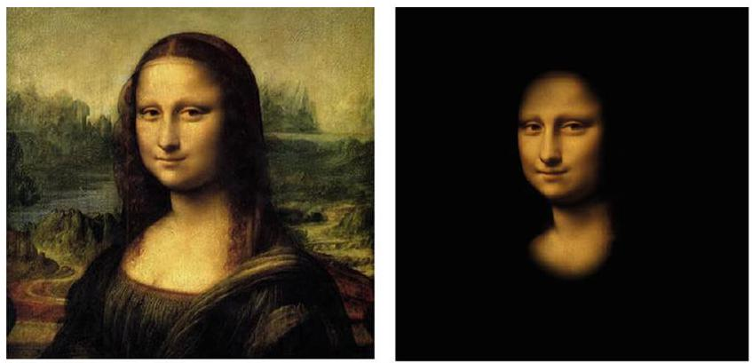
原書圖 9.1：自然語言中代名詞 Attention 視覺化（單詞 'It' 關聯分析）
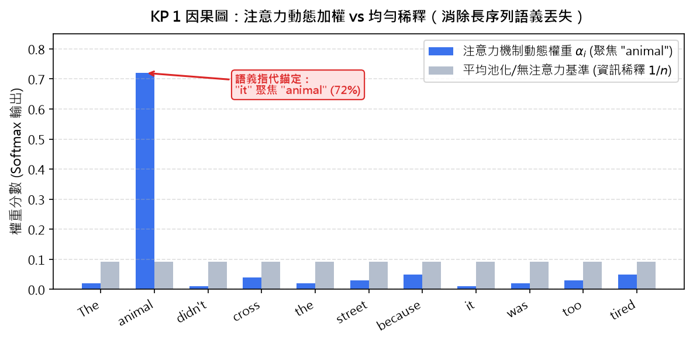
示意圖解：請對照 B0 準則（遮住文字仍能看出因果/機制對比）。
🤖 AI 生圖可用：重繪此示意圖的提示詞（結構化）
[Role & Subject]
A clean scientific infographic illustrating human cognitive attention vs machine attention.
[Visual Metaphor]
A spotlight beam illuminating specific key words in a sentence while leaving irrelevant noise in dim ambient shadow, demonstrating dynamic weighted focus instead of uniform averaging.
[Composition & Palette]
- Split comparison: Left showing diluted blur filter (uniform average 1/n), Right showing laser-focused spotlight beams on semantic core words ("animal", "tired").
- Palette: Electric blue #2563eb, glowing amber #f59e0b, dark slate background #0f172a.
- Style: Modern technical vector illustration, high precision, minimalist aesthetic.
[Annotations]
Clear English labels: "Input Sequence", "Dynamic Attention Weights α_i", "Information Retention".
在人類的認知與視覺系統中，我們面對龐大資訊時從來不是「均勻處理」每一個細節，而是選擇性地聚焦於最具資訊量的核心部分 。例如欣賞《蒙娜麗莎》肖像畫時，雙眼會自然注視其臉部與微笑；在進行速讀（skimming）時，大腦會快速掠過虛詞、聚焦於關鍵實詞。
在機器學習中，注意力機制（Attention Mechanism） 正是將這種認知特徵數學化為動態資料加權（dynamic data weighting） ：模型根據當前任務目標，自適應地為輸入序列中更重要的部分賦予更大的權重。
注意力機制的歷史意義：
超越靜態詞嵌入 ：在注意力誕生前，Word2Vec 與 GloVe 只能為每個詞學習固定不變的向量，無法捕捉上下文動態語義。解放序列遞迴限制 ：傳統循環神經網路（RNN、LSTM）受限於循序鏈式結構，注意力機制讓模型能在單一步驟中直接關聯任意兩處距離遙遠的特徵。催生現代 Transformer ：2017 年 Vaswani 等人提出完全由注意力模組構成的 Transformer，一舉取代 RNN 成為自然語言處理（NLP）乃至現代大型語言模型（LLM）的共同基石。
祕笈 教授祕笈：注意力機制概念與直覺（Attention Intuition）
2.1
自編碼器與上下文向量（Autoencoder & Context Vector）
−
原書圖 9.2：Auto-Encoder 架構（輸入與輸出在相同維度/領域）
輸入 x
Dim d
Encoder 編碼器
隱藏態 z
Dim k << d
Decoder 解碼器
重建 x̂
Dim d
自監督重建損失 ℒ = ||x - x̂||²
示意圖解（架構/流程向量圖）。
🤖 AI 生圖可用：重繪此示意圖的提示詞（結構化）
[Role & Subject]
Auto-Encoder symmetric bottleneck compression architecture diagram.
[Visual Metaphor]
An hourglass funnel condensing high-dimensional input features x into a compact low-dimensional latent bottleneck z, then symmetrically expanding back to reconstructed x̂.
[Composition & Palette]
- Left-to-right flow: Input Layer (wide) -> Encoder funnels down -> Bottleneck Latent Space (narrow) -> Decoder funnels out -> Output Reconstruction.
- Red dashed feedback arc connecting input x and output x̂ representing reconstruction loss ℒ = ||x - x̂||².
- Palette: Sapphire blue #3b82f6, warm gold #f59e0b, emerald green #10b981.
- Style: Isometric 3D architectural wireframe with glowing glass textures.
自編碼器（Autoencoder）由編碼器（Encoder） 與解碼器（Decoder） 兩大核心部件組成。編碼器將輸入領域的資料壓縮為隱藏空間（hidden space）中的上下文向量（context vector） $\boldsymbol{c} \in \mathbb{R}^p$；解碼器則接收此上下文向量，將其重構或轉換至目標領域。
上下文向量 $\boldsymbol{c}$ 在抽象的語義空間中表徵了核心概念。例如當輸入英文單詞 "elephant" 時，編碼器提煉出代表「大象」概念的向量 $\boldsymbol{c}$，解碼器據此生成法文 "l'éléphant"；又如在領域轉換（domain transformation / adaptation）中，將卡通風格的大象圖像轉換為真實世界的大象照片。
自編碼器跨領域轉換的三大應用：
領域轉換（Domain Transformation） ：將一種模態或語言的資料轉換為另一種（如機器翻譯、圖像風格遷移）。領域適應（Domain Adaptation） ：將來源領域學到的特徵分佈映射至目標領域，降低分佈漂移（distribution shift）影響。領域泛化（Domain Generalization） ：學習跨多個領域不變的通用語義表示，使模型能泛化至未見過的全新分佈。
祕笈 教授祕笈：Auto-Encoder 架構與表徵學習（Autoencoders）
2.2
傳統 Seq2Seq 序列模型（The Classical Sequence-to-Sequence Model）
−
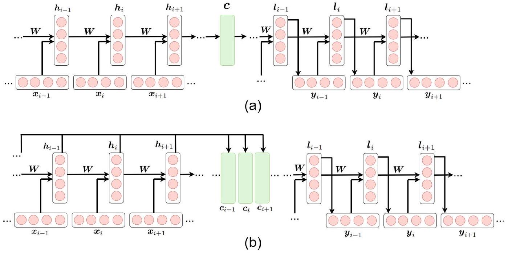
原書圖 9.3：Seq2Seq 架構（編碼器將長序列壓縮至單一上下文向量 C）
x₁: "Je"
x₂: "suis"
x₃: "étud."
h₁
h₂
h₃
語意向量 C
固定長度瓶頸
s₁
s₂
s₃
y₁: "I"
y₂: "am"
y₃: "stud."
Encoder (長度 T_x)
Decoder (自回歸生成 T_y)
示意圖解（架構/流程向量圖）。
🤖 AI 生圖可用：重繪此示意圖的提示詞（結構化）
[Role & Subject]
Sequence-to-Sequence (Seq2Seq) encoder-decoder architecture with fixed context bottleneck.
[Visual Metaphor]
A multi-token sentence entering an RNN conveyor belt, getting squashed tightly into a single small glass container (Context Vector C), then expanding out into a target sequence.
[Composition & Palette]
- Left: Sequential RNN cells passing hidden states h_t.
- Center: Highly congested glowing amber cube labeled "Context Bottleneck C".
- Right: Autoregressive decoder generating output tokens y_t one by one.
- Palette: Deep ocean blue #1e40af, crimson warning #dc2626, sage green #16a34a.
- Style: Tech infographic, clean isometric view.
考慮長度為 $n$ 的輸入序列 $\{\boldsymbol{x}_1, \boldsymbol{x}_2, \dots, \boldsymbol{x}_n\}$（例如一段英文句子）與目標輸出序列 $\{\boldsymbol{y}_1, \dots, \boldsymbol{y}_n\}$（對應的法文翻譯）。序列到序列（Sequence-to-Sequence, Seq2Seq）模型 旨在學習將一個有序序列映射至另一個序列。
在傳統無注意力的 Seq2Seq 模型中：
編碼器循序傳播 ：輸入詞 $\boldsymbol{x}_i$ 透過線性矩陣 $\boldsymbol{W}$ 產生隱藏狀態 $\boldsymbol{h}_i$ 並傳遞給下一時間步 $\boldsymbol{h}_{i+1}$。單一固定上下文向量 ：整個輸入序列僅產生唯一的一個上下文向量 $\boldsymbol{c} = \boldsymbol{h}_n$（即編碼器的最後一個隱藏狀態）。自回歸條件生成 ：解碼器在時間步 $i$ 生成單詞 $\boldsymbol{y}_i$ 的條件機率由函數 $g(\cdot)$ 決定：
$$\mathbb{P}(\boldsymbol{y}_i \mid \boldsymbol{y}_1, \dots, \boldsymbol{y}_{i-1}) = g(\boldsymbol{y}_{i-1}, \boldsymbol{l}_i, \boldsymbol{c})$$
其中 $\boldsymbol{l}_i$ 為解碼器內部的潛在狀態向量（latent vector）。
致命瓶頸 ：將整句（甚至整篇文章）的所有細節強制壓縮進單一固定維度的向量 $\boldsymbol{c} = \boldsymbol{h}_n$，當序列長度增加時，早期輸入的資訊會嚴重被後續時間步覆蓋遺忘，造成「資訊瓶頸（information bottleneck）」。
祕笈 教授祕笈：Seq2Seq 架構與上下文向量瓶頸（Seq2Seq & Context Bottleneck）
2.3
具注意力機制的 Seq2Seq（Sequence-to-Sequence with Dynamic Attention）
−
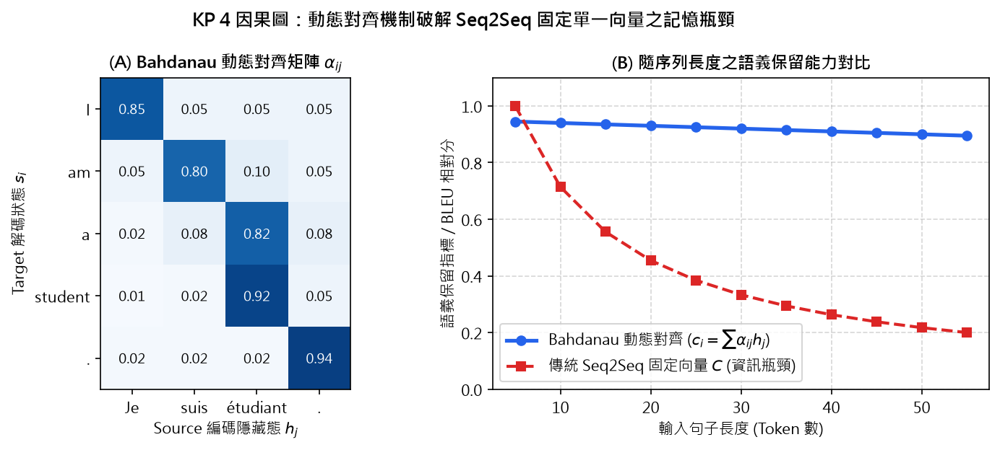
示意圖解：請對照 B0 準則（遮住文字仍能看出因果/機制對比）。
🤖 AI 生圖可用：重繪此示意圖的提示詞（結構化）
[Role & Subject]
Bahdanau dynamic attention alignment in Neural Machine Translation.
[Visual Metaphor]
Dynamic multicolored optical fiber lines connecting each target word during generation directly back to all source word hidden states, adjusting thickness based on alignment score α_ij.
[Composition & Palette]
- Top: Decoder state s_i emitting dynamic scanning rays.
- Bottom: Array of Encoder states h_j receiving rays with varying glowing intensity.
- Alignment matrix heatmap embedded in the background showing diagonal alignment.
- Palette: Indigo #4338ca, soft violet #8b5cf6, radiant cyan #06b6d4.
- Style: Clean 2D technical vector diagram with glowing accents.
互動 demo：Bahdanau 動態對齊權重與上下文向量計算
動態注意力：$\alpha_{ij} = \frac{\exp(e_{ij})}{\sum_k \exp(e_{ik})}$，上下文向量 $c_i = \sum_{j=1}^{T_x} \alpha_{ij} h_j$。
怎麼操作： 切換解碼步驟 $i$（Target Token）並調整來源隱藏態 $h_j$ 的相關度偏置，觀察動態對齊分數分配與聚合向量 $c_i$。
觀察什麼： 不同解碼步會自動將權重聚焦在語義對應的來源詞（如生成 'student' 時聚焦 'étudiant'）。
正確基準： Softmax 權重 $\sum_{j} \alpha_{ij} = 1.000$ 且所有權重 $\ge 0$；$c_i$ 為來源隱藏態的凸組合（Convex Combination）。
解碼目標詞：Step 1: "I" (對應 Je) Step 2: "am" (對應 suis) Step 3: "a" (對應 un) Step 4: "student" (對應 étudiant) 對齊敏銳度： 2.0
為了解決單一固定上下文向量的資訊瓶頸，Bahdanau 等人引入了具注意力機制的 Seq2Seq 模型 。核心變革在於：不再使用全局單一向量，而是為解碼器的每一個輸出詞 $\boldsymbol{y}_i$ 動態計算專屬的上下文向量 $\boldsymbol{c}_i$ 。
動態上下文向量 $\boldsymbol{c}_i$ 是編碼器所有隱藏狀態 $\{\boldsymbol{h}_j\}_{j=1}^n$ 的加權線性組合：
$$\boldsymbol{c}_i = \sum_{j=1}^n a_{ij} \boldsymbol{h}_j$$
其中權重 $a_{ij} \ge 0$ 代表生成第 $i$ 個輸出詞時，模型對第 $j$ 個輸入詞所分配的「注意力大小」。計算步驟如下：
對齊相似度分數（Alignment Score） ：計算解碼器前一狀態 $\boldsymbol{l}_{i-1}$ 與編碼器狀態 $\boldsymbol{h}_j$ 的相似度：
$$s_{ij} := \operatorname{similarity}(\boldsymbol{l}_{i-1}, \boldsymbol{h}_j)$$Softmax 歸一化 ：將分數轉為總和為 1 的離散機率分佈：
$$a_{ij} := \frac{e^{s_{ij}}}{\sum_{k=1}^n e^{s_{ik}}}$$條件預測 ：在每一步將專屬上下文 $\boldsymbol{c}_i$ 送入解碼器：
$$\mathbb{P}(\boldsymbol{y}_i \mid \boldsymbol{y}_1, \dots, \boldsymbol{y}_{i-1}) = g(\boldsymbol{y}_{i-1}, \boldsymbol{l}_i, \boldsymbol{c}_i)$$
祕笈 教授祕笈：Bahdanau 動態對齊機制（Bahdanau Additive Attention）
2.4.1
複合嵌入的需求（The Need for Composite Embedding）
−
(A) 加性注意力 (Additive / Bahdanau)
score(q, k) = vᵀ tanh(W_q q + W_k k)
矩陣投影 W_q, W_k
tanh 活化
向量 vᵀ 縮減
特點：表達力強，但含多層運算難以矩陣高度並行
(B) 乘性/縮放點積 (Luong / Vaswani)
score(q, k) = (qᵀ W k) / √d_k
矩陣乘法 Q · Kᵀ
縮放與 Softmax
特點：純矩陣乘法，GPU/TPU 高度優化加速
示意圖解（架構/流程向量圖）。
🤖 AI 生圖可用：重繪此示意圖的提示詞（結構化）
[Role & Subject]
Additive Attention vs Multiplicative / Dot-Product Attention comparison.
[Visual Metaphor]
Two parallel computation tracks: one passing through multi-layer MLP & tanh gears (Additive), the other passing through lightning-fast parallel matrix multipliers (Multiplicative).
[Composition & Palette]
- Top track: Additive vᵀ tanh(W_q q + W_k k) with gear and spring mechanics.
- Bottom track: Scaled dot-product (qᵀ k)/√d_k with direct GPU tensor core matrix multiplication blocks.
- Palette: Slate gray #475569, vibrant cobalt #2563eb, bright coral #f43f5e.
- Style: Clean dual-column engineering benchmark diagram.
早期的詞嵌入方法（如 Word2Vec、GloVe）為詞彙表中的每個單詞學習單一、靜態的幾何向量。然而在自然語言中，單詞的含義高度依賴於其上下文環境與句法依賴關係 。
以句子 "The FBI is chasing a criminal on the run." 為例：
多義性與語境聚焦 ：單詞 "run" 在此處並非指「跑步（動詞）」，而是與 "on the" 結合構成「逃亡中（片語）」。跨距語義關聯 ：當讀到 "chasing" 時，大腦必須同時聯想到主詞 "FBI" 與受詞 "criminal"；當讀到 "run" 時，更與前面的 "chasing" 及 "criminal" 緊密呼應。複合嵌入（Composite Embedding） ：要理解句子真實意涵，模型不能只獨立檢視單詞，而必須學習由多個單詞組合而成的動態複合表示 。
這種「根據周圍所有詞動態更新當前詞表示」的需求，直接催生了自注意力（Self-Attention） 機制的設計。
祕笈 教授祕笈：注意力評分函數演進（Score Functions: Additive vs Multiplicative）
2.4.2
軟性資料庫檢索：Query、Key 與 Value（Soft Query-Retrieval Modeling）
−
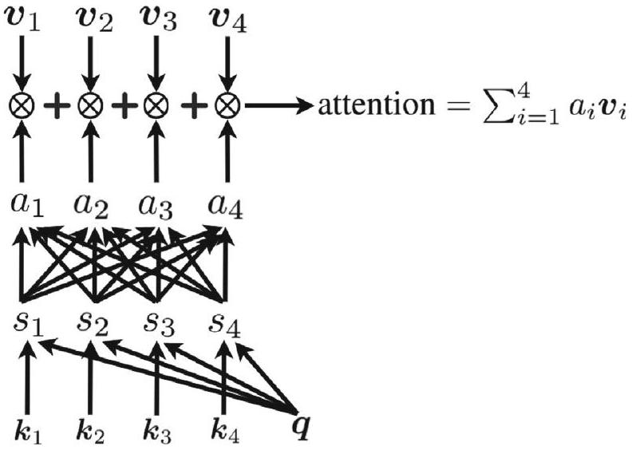
原書圖 9.6：Q, K, V 注意力查詢機制架構圖
Query (Q)
Keys (K)
Values (V)
相似度計算
Q · Kᵀ / √d_k
Softmax 歸一化
權重 α_i ∈ (0,1)
加權聚合
∑ α_i · V_i
Output
示意圖解（架構/流程向量圖）。
🤖 AI 生圖可用：重繪此示意圖的提示詞（結構化）
[Role & Subject]
Query, Key, Value (Q, K, V) database soft lookup and attention retrieval.
[Visual Metaphor]
A modern librarian (Query) holding a search inquiry, scanning across an array of book tags (Keys) on library shelves, and retrieving a weighted composite blend of book contents (Values).
[Composition & Palette]
- 3 colored streams: Red for Query Q, Orange for Keys K, Blue for Values V.
- Intersection node: Softmax similarity computation Q·Kᵀ / √d_k.
- Final output: Weighted summation ∑ α_i V_i.
- Palette: Vibrant crimson #ef4444, amber #f59e0b, azure blue #3b82f6.
- Style: Crisp modern vector infographic with clear labeled mathematical dataflows.
互動 demo：QKV 向量檢索與相似度度量（Dot vs Cosine vs Scaled）
注意力檢索：$\alpha_i = \text{Softmax}(\text{Sim}(q, k_i))$，輸出 $o = \sum_{i} \alpha_i v_i$。
怎麼操作： 拖動 Query 向量旋轉角度 $\theta_q$ 與長度 $|q|$，切換 3 種相似度度量函數（內積、餘弦、縮放點積）。
觀察什麼： 內積對向量長度極其敏感，餘弦僅看夾角；縮放點積在保持長度敏感度的同時穩定方差。
正確基準： 當 $q$ 與某個 Key 夾角為 0° 時，該 Key 的注意力權重達到峰值；三種度量下的輸出向量方向朝高權重 Value 偏轉。
Query 角度 $\theta_q$： 45° Query 長度 $|q|$： 1.5 度量方式：Scaled Dot-Product Raw Dot-Product Cosine Similarity
注意力機制在數學上可以極為優雅地詮釋為軟性資料庫檢索（Soft Query-Retrieval） 模型。在傳統資料庫中，給定一個查詢（Query），系統在鍵值（Key）中搜尋完全匹配的項目並取出唯一的數值（Value）。軟性檢索則將其泛化為連續空間中的加權檢索 ：計算 Query 與所有 Keys 的相似度，依相似度比例加權聚合所有 Values。
核心公式：
$$\operatorname{attention}(\boldsymbol{q}, \{\boldsymbol{k}_i\}_{i=1}^n, \{\boldsymbol{v}_i\}_{i=1}^n) := \sum_{i=1}^n a_i \boldsymbol{v}_i$$
其中 $s_i := \operatorname{similarity}(\boldsymbol{q}, \boldsymbol{k}_i)$，$a_i := \operatorname{softmax}(s_i) = \frac{e^{s_i}}{\sum_{k=1}^n e^{s_k}}$。
四大經典相似度度量（Similarity Measures）：
內積（Inner Product） ：$s_i = \boldsymbol{q}^\top \boldsymbol{k}_i$縮放內積（Scaled Inner Product，最常用） ：$s_i = \frac{\boldsymbol{q}^\top \boldsymbol{k}_i}{\sqrt{p}}$（除以 $\sqrt{p}$ 避免高維內積數值過大導致 Softmax 梯度消失）廣義內積（General Inner Product） ：$s_i = \boldsymbol{q}^\top \boldsymbol{W} \boldsymbol{k}_i$（含可學習矩陣 $\boldsymbol{W} \in \mathbb{R}^{p \times p}$）加法相似度（Additive Similarity） ：$s_i = \boldsymbol{w}_q^\top \boldsymbol{q} + \boldsymbol{w}_k^\top \boldsymbol{k}_i$
祕笈 教授祕笈：Query-Key-Value 檢索機制（The QKV Formulation）
2.4.3
自注意力矩陣運算與核函數觀點（Self-Attention Matrix Formulation & Kernel Connection）
−
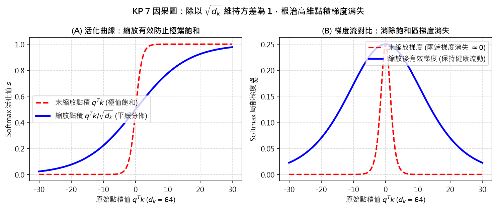
示意圖解：請對照 B0 準則（遮住文字仍能看出因果/機制對比）。
🤖 AI 生圖可用：重繪此示意圖的提示詞（結構化）
[Role & Subject]
Scaled Dot-Product Attention and the √d_k variance stabilizer.
[Visual Metaphor]
A precision hydraulic pressure regulator preventing extreme voltage spikes in a high-dimensional vector circuit, maintaining stable current and preventing gradient freeze.
[Composition & Palette]
- Left: High-dimensional dot products (d_k=512) exploding into saturation regions with zero gradient (red warning).
- Right: Division by √d_k restoring standard normal variance N(0, 1) and healthy gradient flow (green check).
- Palette: Signal green #16a34a, warning red #dc2626, deep slate #1e293b.
- Style: Scientific data visualization with mathematical function overlays.
互動 demo：縮放點積注意力與 $\sqrt{d_k}$ 穩定係數
$\text{Attention}(Q, K, V) = \text{Softmax}\left(\frac{Q K^T}{\sqrt{d_k}}\right) V$。若 $q, k \sim \mathcal{N}(0, I)$，則 $q^T k$ 方差為 $d_k$。
怎麼操作： 調整特徵維度 $d_k$（從 4 至 512）並切換「啟用縮放 $\sqrt{d_k}$」與「未縮放」，觀察 Softmax 注意力分佈與熵值變化。
觀察什麼： 未縮放時，隨著 $d_k$ 增大，點積方差劇增導致 Softmax 極端飽和（變為 One-Hot，熵接近 0，梯度消失）；除以 $\sqrt{d_k}$ 能維持平緩分佈。
正確基準： 在 $d_k=512$ 時，未縮放分佈最大值常達 $>0.999$（熵 $<0.01$），縮放後分佈平滑熵值維持在健康範圍（$\sim 1.5$）。
維度 $d_k$： 64 重新隨機取樣 Q,K
設輸入序列由 $n$ 個 $d$ 維詞向量組成：$\boldsymbol{X} = [\boldsymbol{x}_1, \dots, \boldsymbol{x}_n] \in \mathbb{R}^{d \times n}$。自注意力機制透過三個可學習的投影矩陣，將輸入分別映射至 Query、Key 與 Value 子空間：
$$\boldsymbol{q}_i = \boldsymbol{W}_Q^\top \boldsymbol{x}_i, \quad \boldsymbol{k}_i = \boldsymbol{W}_K^\top \boldsymbol{x}_i, \quad \boldsymbol{v}_i = \boldsymbol{W}_V^\top \boldsymbol{x}_i$$
其中 $\boldsymbol{W}_Q, \boldsymbol{W}_K \in \mathbb{R}^{d \times p}$，$\boldsymbol{W}_V \in \mathbb{R}^{d \times r}$。將整條序列打包為矩陣 $\boldsymbol{Q} \in \mathbb{R}^{p \times n}, \boldsymbol{K} \in \mathbb{R}^{p \times n}, \boldsymbol{V} \in \mathbb{R}^{r \times n}$，全序列自注意力可寫為緊湊的矩陣形式：
$$\boldsymbol{Z} = \operatorname{attention}(\boldsymbol{Q}, \boldsymbol{K}, \boldsymbol{V}) = \boldsymbol{V} \operatorname{softmax}\left(\frac{1}{\sqrt{p}} \boldsymbol{Q}^\top \boldsymbol{K}\right) \in \mathbb{R}^{r \times n}$$
（其中 $\operatorname{softmax}$ 沿矩陣每一列 row-wise 進行歸一化）。
核函數（Kernel）視角 ：內積項可展開為 $\boldsymbol{q}_i^\top \boldsymbol{k}_j = \boldsymbol{x}_i^\top \boldsymbol{W}_Q \boldsymbol{W}_K^\top \boldsymbol{x}_j$。若假設 $\boldsymbol{W}_Q = \boldsymbol{W}_K = \boldsymbol{W}$，則：
$$\boldsymbol{q}_i^\top \boldsymbol{k}_j = (\boldsymbol{W}^\top \boldsymbol{x}_i)^\top (\boldsymbol{W}^\top \boldsymbol{x}_j)$$
這完全等價於線性特徵映射下的 Gram 矩陣（核矩陣）！此重要連結為後續 Performer 的隨機特徵核近似奠定了理論基礎。
祕笈 教授祕笈：縮放點積注意力與方差穩定（Scaled Dot-Product & Normalization）
2.5
視覺與語音的多模態注意力（Attention in Computer Vision & Speech）
−
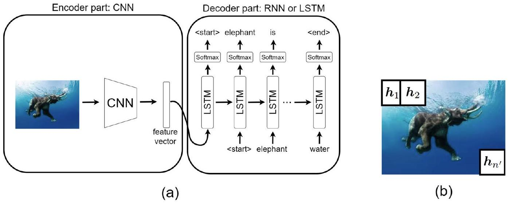
原書圖 9.7：注意力機制在電腦視覺影像上的應用
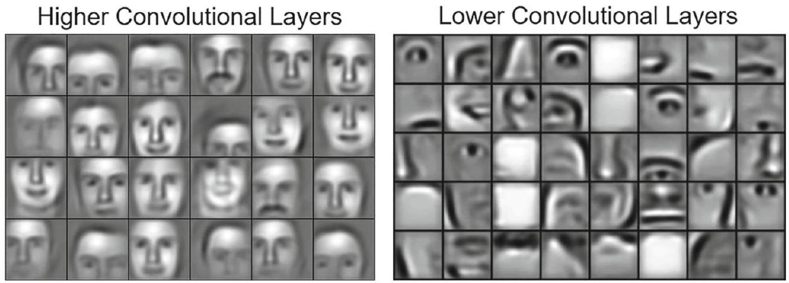
原書圖 9.8：CNN 特徵圖空間注意力可視化
(A) 空間注意力 (Spatial Attention)
高注意力區
回答「在哪裡」(Where)
對 H×W 像素位置加權
(B) 通道注意力 (Channel / SENet)
回答「是什麼」(What)
對 C 個特徵圖動態定權
示意圖解（架構/流程向量圖）。
🤖 AI 生圖可用：重繪此示意圖的提示詞（結構化）
[Role & Subject]
Spatial Attention and Channel Attention in Computer Vision (CNNs & ViT).
[Visual Metaphor]
A dual-lens camera system: Lens 1 (Spatial) projects a heat map highlighting the salient object ("Where"), Lens 2 (Channel) filters specific semantic feature maps ("What").
[Composition & Palette]
- Left: 2D feature map with Gaussian heat spot over an eagle's eye.
- Right: Stack of 3D feature slices with varying brightness bars (SENet squeeze-and-excitation).
- Palette: Cyan #06b6d4, electric purple #a855f7, neutral cool gray #f1f5f9.
- Style: Modern CV architecture schematic with semi-transparent 3D layers.
注意力機制不僅適用於自然語言，更能通用於電腦視覺（CV）、語音辨識與多模態學習領域。在人類視覺中，大腦透過眼球轉動對場景不同空間區域分配不同注意焦點；在機器視覺中，注意力同樣引導模型聚焦於關鍵圖像區塊。
跨領域經典範例：
圖像描述生成（Show, Attend and Tell） ：
編碼器（CNN） ：卷積層提取圖像空間特徵圖，各網格空間特徵視為隱藏向量 $\{\boldsymbol{h}_j\}_{j=1}^{n'}$（底層特徵捕捉邊緣局部部件、高層特徵表徵語義結構）。解碼器（LSTM/Transformer） ：在生成描述詞（如 "Elephant is in water"）的每一步，對圖像空間特徵進行注意力檢索，動態標註當前詞對應圖像的哪個區域。
語音辨識（Listen, Attend and Spell, LAS） ：
編碼器將連續聲學特徵頻譜圖編碼，解碼器在拼寫文字字元時動態對齊發音時間區間。
視覺問答（Show, Attend and Answer） ：
結合問題語義引導視覺特徵聚焦，鎖定與問題最相關的圖像區域進行推理解答。
祕笈 教授祕笈：視覺注意力機制與跨模態應用（Visual Attention & SENet）
3.1–3.2
Transformer 概觀與編碼器架構（Transformer Concept & Encoder Overview）
−
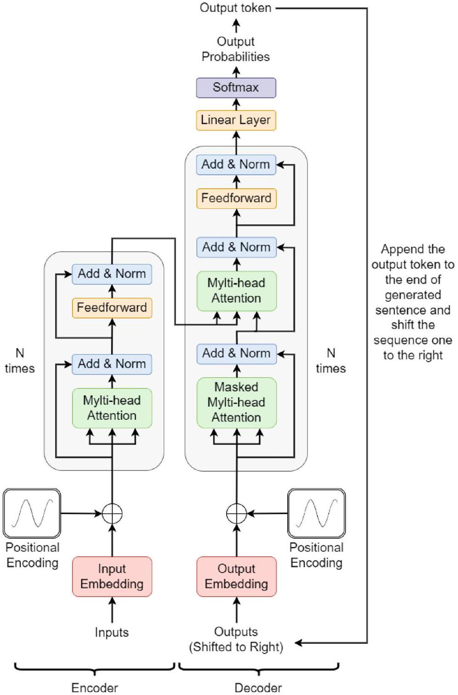
原書圖 9.9：Transformer 完整架構圖（Encoder 與 Decoder 堆疊）
Encoder (× N)
Feed Forward + Add&Norm
Multi-Head Attn + Add&Norm
Input Emb + Positional Enc
Decoder (× N)
Feed Forward + Add&Norm
Cross-Attention (Q:Dec, K,V:Enc)
Masked MHA + Add&Norm
Output Emb + Positional Enc
K, V 傳遞
示意圖解（架構/流程向量圖）。
🤖 AI 生圖可用：重繪此示意圖的提示詞（結構化）
[Role & Subject]
The Transformer Model Complete Architecture (Attention Is All You Need).
[Visual Metaphor]
A grand architectural blueprint of a dual-tower skyscraper: Left Tower (Encoder Stack) with Multi-Head Attention and FFN; Right Tower (Decoder Stack) with Masked MHA, Cross-Attention, and Linear Softmax.
[Composition & Palette]
- Clear modular hierarchy with glowing residual bypass highways (Add & Norm).
- Distinct color coding for Encoder (sky blue) and Decoder (lavender/purple).
- Palette: Sky blue #38bdf8, royal purple #7c3aed, gold accents #eab308.
- Style: Ultra-detailed isometric technical blueprint with clean typography.
Transformer 是由 Vaswani 等人於 2017 年在經典論文《Attention Is All You Need》中提出的革命性自編碼器架構。其最核心的突破在於：徹底廢棄了所有循環遞迴（RNN/LSTM）與卷積操作，純粹由自注意力模組與前饋網路堆疊而成 。
Transformer 編碼器（Encoder）的標準處理流程：
輸入嵌入（Input Embedding） ：將輸入詞 token 映射為 $d$ 維詞向量 $\boldsymbol{X} \in \mathbb{R}^{d \times n}$。位置編碼（Positional Encoding） ：將位置向量 $\boldsymbol{p}_i$ 逐元素加到輸入嵌入上，賦予模型感知詞序的能力。多頭自注意力（Multihead Attention） ：$h$ 個注意力頭平行捕捉多視角特徵關聯。殘差連接與層正規化（Add & Norm） ：緩解梯度消失，穩定深層網路分佈。前饋網路（Feedforward Network） ：對每個位置獨立進行非線性特徵轉換。層堆疊（Stacking） ：通常堆疊 $N=6$ 個完全相同的編碼器層，逐層提煉深層語義表示。
祕笈 教授祕笈：Transformer 完整架構全景（The Transformer Blueprint）
3.2.1
正弦位置編碼（Sinusoidal Positional Encoding）
−
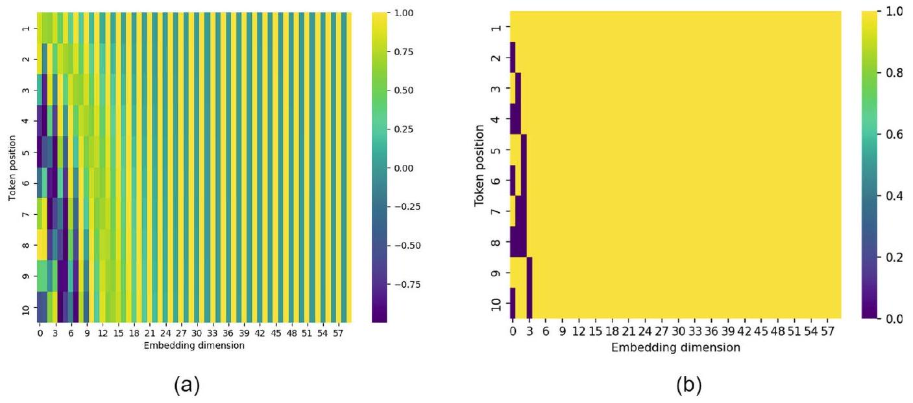
原書圖 9.10：週期性三角函數位置編碼（Positional Encoding）波形與熱力圖
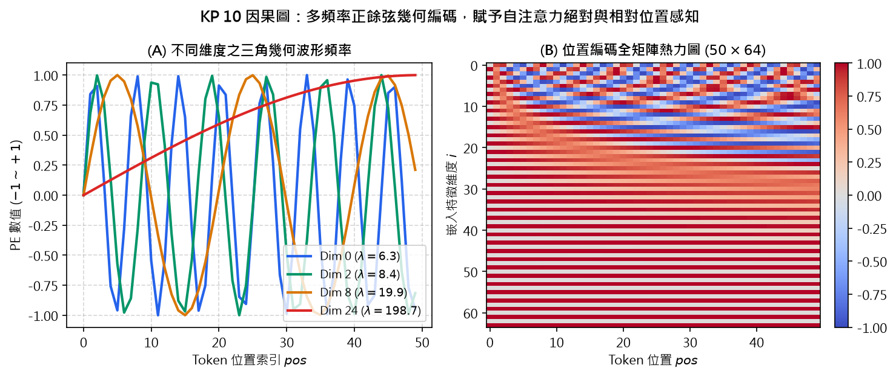
示意圖解：請對照 B0 準則（遮住文字仍能看出因果/機制對比）。
🤖 AI 生圖可用：重繪此示意圖的提示詞（結構化）
[Role & Subject]
Sinusoidal Positional Encoding (PE) geometry and multi-frequency wave harmonics.
[Visual Metaphor]
An array of oscillating musical strings or wave ripples spanning from high frequencies (dim 0, rapid oscillations) to low frequencies (dim 512, gentle slow tides).
[Composition & Palette]
- 3D perspective landscape where X-axis is token sequence position pos, and Y-axis is embedding channel dimension i.
- Smooth rainbow colormap representing sine and cosine harmonic waves.
- Palette: Cool blue to warm red spectral gradient, clean white background.
- Style: Mathematical geometry visualization, parametric wave plot.
互動 demo：正餘弦位置編碼波形與相對位置內積
$PE_{(pos, 2i)} = \sin(pos / 10000^{2i/d})$，$PE_{(pos, 2i+1)} = \cos(pos / 10000^{2i/d})$。內積 $PE_{pos}^T PE_{pos+k}$ 僅取決於相對距離 $k$。
怎麼操作： 拖動位置 $pos_1$ 與 $pos_2$ 滑桿，觀察不同維度頻道上的高低頻振盪波形，以及兩位置編碼之間的餘弦相似度。
觀察什麼： 低維度（$i=0$）波長極短快速振盪，高維度（$i=31$）波長極長緩慢變化；兩位置間隔越近，編碼相似度越高。
正確基準： 當 $|pos_1 - pos_2| = 0$ 時相似度嚴格為 $1.000$；隨著相對距離 $k$ 增加，相似度呈單調衰減伴隨微幅波紋。
位置 $pos_1$： 10 位置 $pos_2$： 14 模型總維度 $d$：32 64 128
由於 Transformer 既無 RNN 的時間遞迴步階、亦無 CNN 的局部滑動窗口，自注意力運算在先天上對輸入序列具有置換不變性（permutation invariance） ——若不給定額外資訊，模型將無法分辨 "dog bites man" 與 "man bites dog" 的詞序差異。因此必須為每個詞注入位置編碼（Positional Encoding） $\boldsymbol{p}_i \in \mathbb{R}^d$。
正弦位置編碼公式（針對位置 $i$ 與維度維度索引 $j$）：
$$\begin{cases} \boldsymbol{p}_i(2j) := \sin\left(\frac{i}{10000^{\frac{2j}{p}}}\right) \\ \boldsymbol{p}_i(2j+1) := \cos\left(\frac{i}{10000^{\frac{2j}{p}}}\right) \end{cases}$$
注入方式為直接與詞嵌入相加：$\boldsymbol{x}_i \leftarrow \boldsymbol{x}_i + \boldsymbol{p}_i$。
兩大關鍵特性：
二進制幾何波長類比 ：低維度分量波長極短（高頻劇烈震盪），高維度分量波長極長（低頻緩慢平滑），每個位置形成唯一確定的幾何指紋。相對位置線性可表示性 ：對於固定偏移量 $k$，位置 $n+k$ 的編碼向量可以精確表示為位置 $n$ 編碼向量的線性變換（透過旋轉矩陣），使模型極易學習相對距離關係。
祕笈 教授祕笈：週期性三角函數位置編碼（Positional Encoding）
3.2.2
多頭自注意力機制（Multihead Attention with Self-Attention）
−
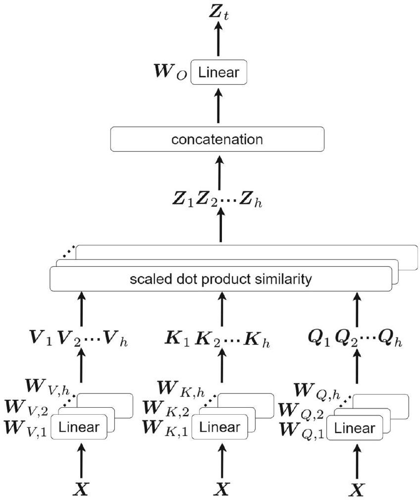
原書圖 9.11：Multi-Head Attention 多頭注意力模組結構圖
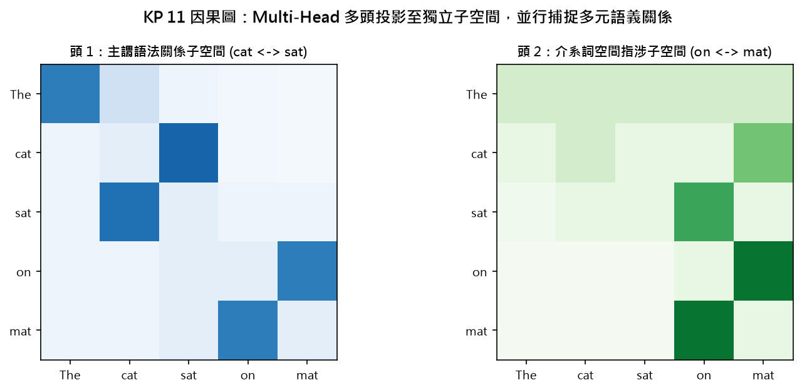
示意圖解：請對照 B0 準則（遮住文字仍能看出因果/機制對比）。
🤖 AI 生圖可用：重繪此示意圖的提示詞（結構化）
[Role & Subject]
Multi-Head Attention (MHA) representation subspace specialization.
[Visual Metaphor]
A robotic head equipped with multiple specialized prismatic optical sensors, each observing a different semantic facet (syntax, coreference, sentiment, spatial locality) simultaneously.
[Composition & Palette]
- Central token vector splitting into h=8 distinct colored beam pathways.
- Each head projecting into its own d_k subspace and computing attention independently.
- Final Concat and linear projection W^O reuniting all heads into a unified enriched embedding.
- Palette: Prismatic rainbow palette (blue, green, amber, violet, cyan, magenta).
- Style: Advanced optical physics / cybernetic sensor metaphor.
互動 demo：Multi-Head Attention 多頭注意力子空間多樣性
$\text{MHA}(Q, K, V) = \text{Concat}(\text{head}_1, \dots, \text{head}_h) W^O$，其中 $\text{head}_i = \text{Attn}(Q W_i^Q, K W_i^K, V W_i^V)$。
怎麼操作： 調整頭數 $h$（從 1 到 8）並切換不同語義注意力關注類型（語法主謂、局部臨近、長程指代、全局廣播）。
觀察什麼： 單頭（$h=1$）只能學習單一平均分佈；多頭（$h=8$）可將 $d_{model}$ 拆分為多個子空間，並行捕捉多元結構特徵。
正確基準： 每個頭的維度為 $d_k = d_{model}/h$，多頭總計算量與單頭全維度注意力完全等價（都是 $\mathcal{O}(n^2 d_{model})$）。
頭數 $h$： 4 展示句子："The animal didn't cross because it was tired" "Alice gave Bob a book in the library"
單一自注意力頭容易將所有注意力權重集中在單一語義關聯上。多頭注意力（Multihead Attention） 將輸入投影至 $h$ 個互不相同的低維子空間（每個頭維度 $p = d/h$），平行執行 $h$ 次注意力運算，使模型能同時在不同子空間捕捉多樣化的語言關係（如語法依賴、指代消解、長距主謂一致等）。
多頭注意力運算步驟：
獨立線性投影 ：對第 $i$ 個頭（$i=1 \dots h$），產生專屬的 $\boldsymbol{Q}_i, \boldsymbol{K}_i, \boldsymbol{V}_i$：
$$\boldsymbol{Q}_i = \boldsymbol{W}_{Q,i}^\top \boldsymbol{X}, \quad \boldsymbol{K}_i = \boldsymbol{W}_{K,i}^\top \boldsymbol{X}, \quad \boldsymbol{V}_i = \boldsymbol{W}_{V,i}^\top \boldsymbol{X}$$個別縮放點積注意力 ：
$$\boldsymbol{Z}_i = \boldsymbol{V}_i \operatorname{softmax}\left(\frac{1}{\sqrt{p}} \boldsymbol{Q}_i^\top \boldsymbol{K}_i\right)$$拼接與輸出投影 ：將 $h$ 個輸出拼接並經輸出矩陣 $\boldsymbol{W}_O \in \mathbb{R}^{(hr) \times d}$ 融合：
$$\boldsymbol{Z}_t = \boldsymbol{W}_O^\top \operatorname{concat}(\boldsymbol{Z}_1, \boldsymbol{Z}_2, \dots, \boldsymbol{Z}_h)$$
這類跨層級、跨子空間的特徵匹配，在統計上與最大平均差異（MMD）測量分佈不同階動差的思維異曲同工。
祕笈 教授祕笈：多頭注意力與子空間投影（Multi-Head Attention）
3.2.3
層正規化與殘差連接（Layer Normalization & Residual Connection）
−
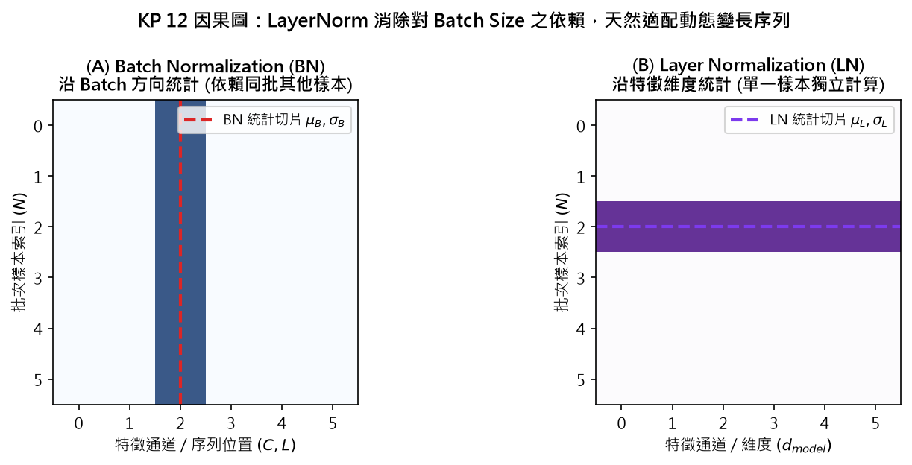
示意圖解：請對照 B0 準則（遮住文字仍能看出因果/機制對比）。
🤖 AI 生圖可用：重繪此示意圖的提示詞（結構化）
[Role & Subject]
Layer Normalization (LN) vs Batch Normalization (BN) feature tensor geometric slicing.
[Visual Metaphor]
A 3D transparent cube of activations (Batch N × Sequence L × Channels C) sliced by two laser planes in perpendicular directions.
[Composition & Palette]
- Batch Normalization: Vertical laser cutting across the Batch dimension (dependent on batch size).
- Layer Normalization: Horizontal laser cutting across the Feature dimension for each sample independently.
- Palette: Blue laser #2563eb for BN, Purple laser #9333ea for LN.
- Style: Clean 3D geometric slice diagram with clear coordinate axes (N, L, C).
在多頭自注意力計算完畢後，資料立即進入殘差連接（Residual Connection） 與層正規化（Layer Normalization, LN） 模組（即 Add & Norm）。
殘差連接（Residual Connection） ：
$$\boldsymbol{Z}_t' \leftarrow \boldsymbol{Z}_t + \boldsymbol{X}$$
源自 ResNet 的思想，透過恆等映射（identity mapping）建立梯度高速公路，確保反向傳播時梯度能無損直通底層，有效防止深層網路梯度消失。層正規化（Layer Normalization） ：
對單一訓練樣本內的 $H$ 個隱藏維度計算經驗平均值 $\mu$ 與標準差 $\sigma$：
$$\mu := \frac{1}{H}\sum_{i=1}^H h_i, \quad \sigma := \sqrt{\sum_{i=1}^H (h_i - \mu)^2}$$
$$h_i \leftarrow \frac{g}{\sigma}(h_i - \mu) + b$$
（其中 $g$ 與 $b$ 為可學習的縮放與平移參數）。
LN vs BN（批次正規化） ：批次正規化（BN）沿著 Batch 維度計算統計量，極度依賴 Batch 大小且在長度變動的 NLP 序列中表現不穩；層正規化（LN）在每個樣本內部獨立沿特徵維度正規化，完全不受 Batch 大小影響，能有效降低內部協變量偏移（internal covariate shift）。
祕笈 教授祕笈：層歸一化（Layer Normalization）
3.2.4–3.2.5
前饋網路與層堆疊（Feedforward Layer & Encoder Stacking）
−
輸入 x
Sub-Layer F(x)
(MHA 或 FFN)
恆等捷徑 x (梯度高速公路 ∂(x+F)/∂x = I + ∂F/∂x)
+
LayerNorm
輸出 y
示意圖解（架構/流程向量圖）。
🤖 AI 生圖可用：重繪此示意圖的提示詞（結構化）
[Role & Subject]
Residual Connections (Skip Connections) and Gradient Highways in Deep Transformers.
[Visual Metaphor]
An express elevated highway bypassing dense city traffic (sublayers), allowing emergency signals (gradients) to travel from the penthouse directly to the ground floor without attenuation.
[Composition & Palette]
- Main path through complex transformational blocks F(x).
- Elevated smooth arch shortcut carrying x directly to the addition node (+).
- Pre-LN vs Post-LN gradient stability paths contrasted.
- Palette: Highway blue #1d4ed8, glowing golden path #fbbf24, slate background #334155.
- Style: Architectural infrastructure metaphor with clean vector lines.
經過第一道 Add & Norm 後的特徵 $\boldsymbol{Z}_t'$，會被送入一個逐位置前饋神經網路（Position-wise Feedforward Network, FFN） 。該網路對序列中的每一個位置獨立、相同地施加全連接轉換：
$$\operatorname{FFN}(\boldsymbol{x}) = \max(0, \boldsymbol{x}\boldsymbol{W}_1 + \boldsymbol{b}_1)\boldsymbol{W}_2 + \boldsymbol{b}_2$$
FFN 通常先將隱藏維度放大 4 倍（如 $d=512 \to 2048$），引入非線性激活（ReLU 或 GELU）進行高維特徵解耦，再投影回原始維度 $d$。隨後再次經歷第二道殘差與層正規化：
$$\boldsymbol{Z}_t'' \leftarrow \operatorname{LN}(\boldsymbol{R} + \boldsymbol{Z}_t')$$
編碼器堆疊（Stacking） ：
標準架構將上述完整的 Encoder Layer 重複堆疊 $N=6$ 層。
底層 Encoder 專注於局部詞法與語法關係，高層 Encoder 提煉抽象語意與全局篇章結構。
堆疊顯著提升模型參數量與自由度，使其足以表徵龐大的語言詞典與複雜知識。
祕笈 教授祕笈：殘差連接與梯度傳播（Residual Connections & Pre/Post-LN）
3.3
解碼器架構概觀與自回歸生成（Decoder of Transformer Overview）
−
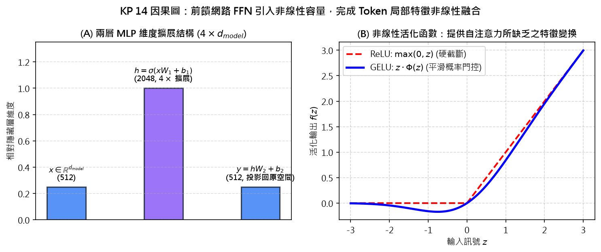
示意圖解：請對照 B0 準則（遮住文字仍能看出因果/機制對比）。
🤖 AI 生圖可用：重繪此示意圖的提示詞（結構化）
[Role & Subject]
Position-wise Feed-Forward Network (FFN) dimension expansion and GELU activation.
[Visual Metaphor]
A two-stage accordion expansion chamber taking token embeddings from width d_model (512), expanding 4× to 2048 for rich non-linear feature synthesis, then compressing back.
[Composition & Palette]
- Left-to-right: Layer 1 (512) -> Expansion Matrix W_1 -> High-capacity hidden state (2048) with GELU curve -> Projection Matrix W_2 -> Output (512).
- Palette: Royal blue #2563eb, electric violet #8b5cf6, emerald green #10b981.
- Style: Precision mechanical engineering schematic.
Transformer 解碼器（Decoder）負責將編碼器提煉的高階語義表示 $\boldsymbol{Z}_t''$ 逐步轉譯為目標序列。解碼器採用自回歸（Autoregressive） 生成範式：在生成第 $i$ 個輸出詞時，輸入為先前已生成的目標詞序列 $\{\boldsymbol{y}_1, \dots, \boldsymbol{y}_{i-1}\}$ 向右平移（shifted right） 一個位置。
解碼器層（Decoder Layer，堆疊 $N=6$ 層）包含三大子模組：
遮罩多頭自注意力（Masked Multihead Attention） ：對已生成的目標序列做自注意力，但嚴格遮蔽未來未見單詞。多頭交叉注意力（Multihead Cross-Attention） ：以解碼器特徵為 Query，向編碼器輸出的 Key 與 Value 檢索來源語意。逐位置前饋網路（Position-wise FFN） ：非線性轉換並經殘差層正規化輸出。
訓練時透過教師強制（Teacher-Forcing） 機制，所有時間步的目標詞可一次性平行輸入，並藉由因果遮罩實現平行化訓練；推論時則逐步生成新單詞並追加至右移輸入序列中。
祕笈 教授祕笈：前饋網路與非線性活化（Position-wise Feed-Forward Networks & GELU）
3.3.1
遮罩多頭自注意力（Masked Multihead Attention with Self-Attention）
−
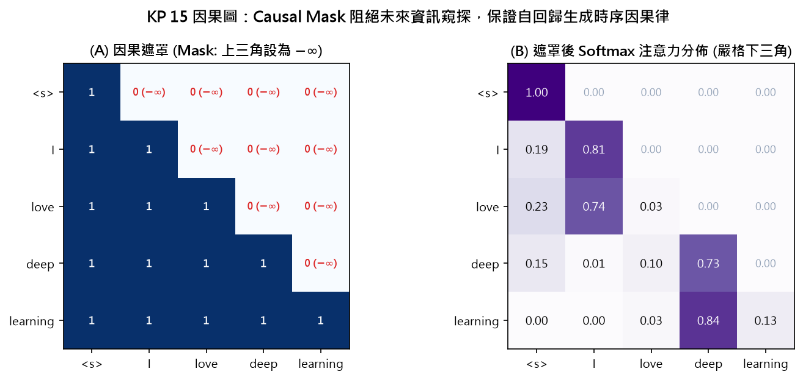
示意圖解：請對照 B0 準則（遮住文字仍能看出因果/機制對比）。
🤖 AI 生圖可用：重繪此示意圖的提示詞（結構化）
[Role & Subject]
Autoregressive Causal Masking (Look-Ahead Mask) in Transformer Decoders.
[Visual Metaphor]
A stepped privacy shutter / one-way mirror staircase allowing tokens to look back at all preceding history while completely blocking view of future tokens with a blackout shield.
[Composition & Palette]
- Strictly lower triangular matrix illuminated in glowing blue.
- Upper triangular matrix filled with crimson "-∞" blackout tiles.
- Softmax output showing zero attention probability for all future positions.
- Palette: Midnight navy #0f172a, neon blue #38bdf8, shield red #ef4444.
- Style: High-tech cyber security / temporal privacy visualization.
互動 demo：因果遮罩 (Causal Mask) 與自回歸注意力矩陣
因果遮罩矩陣 $M_{ij} = 0$（若 $j \le i$）否則 $-\infty$。$\text{Attn} = \text{Softmax}\left(\frac{Q K^T}{\sqrt{d_k}} + M\right)$。
怎麼操作： 拖動生成步數 $t$（從 1 到 6），觀察解碼器在自回歸生成時，注意力矩陣如何嚴格遵循下三角結構阻絕未來資訊。
觀察什麼： 當生成第 $t$ 個 Token 時，其 Query 只能與位置 $1 \sim t$ 的 Key 計算注意力；未來位置權重嚴格為 0。
正確基準： 注意力矩陣所有行和均為 $1.000$；上三角區域（$j > i$）因 $-\infty$ 經 Softmax 後機率嚴格為 $0.000$。
當前生成步數 $t$： Step 4
在解碼器中，自注意力機制必須遵守因果律（Causality Constraint） ：生成當前單詞時，模型絕對不能「預見」或「偷看」未來的單詞。為此必須引入因果遮罩（Causal Mask） 。
遮罩注意力數學定義：
$$\boldsymbol{Z}_m = \operatorname{maskedAttention}(\boldsymbol{Q}, \boldsymbol{K}, \boldsymbol{V}) = \boldsymbol{V}\operatorname{softmax}\left(\frac{1}{\sqrt{p}}(\boldsymbol{Q}^\top\boldsymbol{K} + \boldsymbol{M})\right)$$
其中遮罩矩陣 $\boldsymbol{M} \in \mathbb{R}^{n \times n}$ 定義為下三角矩陣：
$$\boldsymbol{M}(i,j) := \begin{cases} 0 & \text{if } j \le i \text{（已生成或當前位置，無影響）} \\ -\infty & \text{if } j > i \text{（未來位置，強制遮蔽）} \end{cases}$$
為何設為 $-\infty$？
由於 $\operatorname{softmax}$ 內部包含指數運算 $e^x$：
當 $j \le i$ 時，$e^{s_{ij} + 0} = e^{s_{ij}}$，相似度正常計算；
當 $j > i$ 時，$e^{s_{ij} + (-\infty)} = e^{-\infty} = 0$，該未來位置的注意力權重被精確歸零！
這在數學上引入了一種確定性的結構化稀疏性，完美保證了自回歸推論的時序因果性。
祕笈 教授祕笈：因果遮罩與自回歸生成（Causal Masking & Autoregressive Decoding）
3.3.2
交叉注意力機制（Multihead Attention with Cross-Attention）
−
Encoder 最後一層輸出
產生 Keys: K = H W^K
產生 Values: V = H W^V
Cross-Attention 交叉模組
Softmax(Q Kᵀ / √d_k) V
Decoder 前一層狀態
產生 Query: Q = S W^Q
示意圖解（架構/流程向量圖）。
🤖 AI 生圖可用：重繪此示意圖的提示詞（結構化）
[Role & Subject]
Cross-Attention (Encoder-Decoder Attention) memory bridge.
[Visual Metaphor]
A suspension bridge linking two distinct islands: the Encoder Island provides stable Key/Value memory anchors, while the Decoder Island sends Query exploration probes across the cables.
[Composition & Palette]
- Left island: Source sentence encoder memory (Keys & Values).
- Right island: Target translation decoder (Queries).
- Glowing cross-attention energy bridge exchanging context seamlessly.
- Palette: Ocean teal #0d9488, coral orange #f97316, deep indigo #312e81.
- Style: Conceptual landscape infographic with scientific annotations.
互動 demo：Decoder 交叉注意力 (Cross-Attention) 來源記憶路由
$\text{CrossAttn}(S, H) = \text{Softmax}\left(\frac{(S W^Q) (H W^K)^T}{\sqrt{d_k}}\right) (H W^V)$。Query 來自 Decoder，Key/Value 來自 Encoder。
怎麼操作： 切換目標端解碼位置，觀察 Query 如何穿透整個來源端 Encoder 序列所有隱藏態，精準提取對應語義上下文。
觀察什麼： 不同於自注意力（長度為 $T_y \times T_y$），交叉注意力矩陣維度為 $T_y \times T_x$，允許目標詞與任意來源詞建立長程關聯。
正確基準： 交叉注意力每一行的權重總和為 $1.000$；輸出維度為 $d_{model}$，完全不受來源序列長度 $T_x$ 變化的影響。
Target 解碼詞：y₁: "Knowledge" y₂: "is" y₃: "power" 對齊焦點強度： 2.0
在解碼器的第二個注意力子層中，執行的是交叉注意力（Cross-Attention，亦稱 Encoder-Decoder Attention） 。此層並非自注意力，因為其 Query、Key 與 Value 來自不同的序列源頭！
資料流向與角色分工：
Queries（$\boldsymbol{Q}$） ：來自解碼器前一層（Masked Attention）的輸出 ，代表「目前解碼器想要尋找什麼目標語義」。Keys（$\boldsymbol{K}$）與 Values（$\boldsymbol{V}$） ：來自編碼器頂層的最終輸出 $\boldsymbol{Z}_t''$ ，代表「來源輸入句子的完整資訊庫」。
計算公式：
$$\boldsymbol{Z}_{\text{cross}} = \boldsymbol{V}_{\text{enc}} \operatorname{softmax}\left(\frac{1}{\sqrt{p}} \boldsymbol{Q}_{\text{dec}}^\top \boldsymbol{K}_{\text{enc}}\right)$$
跨語言語義對齊橋樑 ：在機器翻譯中，這一步動態計算當前生成的目標語言詞（如法文 "zone"）與原始來源語言各詞（如英文 "European Economic Area"）的對齊關聯，精準定位語義來源。
祕笈 教授祕笈：交叉注意力與編碼解碼通信（Cross-Attention Mechanism）
3.3.3
前饋層、線性投影與 Softmax 詞表機率（Feedforward Layer & Softmax Vocabulary Projection）
−
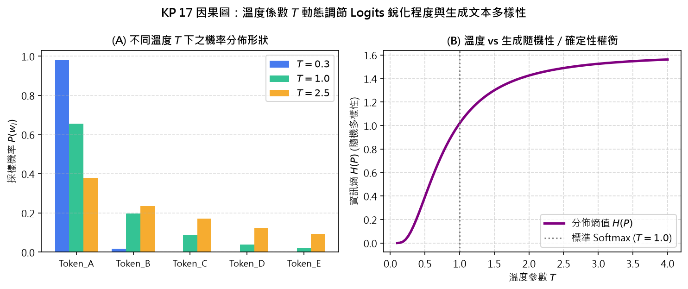
示意圖解：請對照 B0 準則（遮住文字仍能看出因果/機制對比）。
🤖 AI 生圖可用：重繪此示意圖的提示詞（結構化）
[Role & Subject]
Softmax Temperature Scaling and Text Generation Sampling (Greedy, Top-k, Top-p).
[Visual Metaphor]
A precision thermostat dial controlling the thermal vibration and entropy of token probability particles: low temperature crystallizes into a sharp single spike, high temperature boils into uniform mist.
[Composition & Palette]
- Three glass cylinders: Cold (T=0.2, sharp peak), Moderate (T=0.7, balanced peak), Hot (T=2.0, flat distribution).
- Top-k and Top-p (Nucleus) filter cutoffs marked with glowing boundary laser lines.
- Palette: Ice blue #0284c7, flame orange #ea580c, laser purple #a855f7.
- Style: Laboratory thermodynamics apparatus diagram with bar charts.
解碼器堆疊的最後一層輸出會經過線性投影層（Linear Projection） 與 $\operatorname{Softmax}$ 激活函數 ，完成從連續隱藏空間到離散詞表機率的分佈映射。
生成流程與關鍵機制：
詞表投影 ：線性層將解碼器 $d$ 維特徵投影為長度等於字典總詞數 $|V|$ 的未歸一化對數機率（Logits）$\boldsymbol{z} \in \mathbb{R}^{|V|}$。溫度縮放 Softmax（Temperature Softmax） ：
$$\mathbb{P}(w_k) = \frac{e^{z_k / \tau}}{\sum_{j=1}^{|V|} e^{z_j / \tau}}$$
其中 $\tau > 0$ 為溫度參數（$\tau \to 0$ 趨近於貪婪選擇 $\operatorname{argmax}$，輸出確定死板；$\tau > 1$ 使分佈平滑，增加多樣性與創造力）。解碼採樣策略 ：
貪婪解碼（Greedy） ：直接選擇機率最大詞 $\hat{y} = \operatorname{argmax} \mathbb{P}(w)$。Top-$k$ / Top-$p$（Nucleus）採樣 ：截斷尾部低機率候選詞後隨機採樣，提升語言生成的自然度。
追加與滾動 ：選出的單詞被追加至已生成序列末尾，作為下一步右移輸入，這正是 GPT 類大模型實現連續對話的核心機制。
祕笈 教授祕笈：Softmax 溫度係數與取樣策略（Temperature, Top-k & Top-p Sampling）
3.4.1
捨棄遞迴的架構革命（Attention Is All We Need: No Need for RNN!）
−
BERT：雙向遮罩語言模型 (MLM)
"The [MASK] sat on the mat"
可同時看左側與右側所有 Token 上下文
擅長：文本理解、分類、命名實體識別
GPT：自回歸因果因果模型 (Autoregressive)
"The cat sat on the [NEXT]"
因果遮罩 (Causal Mask) 嚴禁看未來
擅長：長文生成、代碼撰寫、對話代理
示意圖解（架構/流程向量圖）。
🤖 AI 生圖可用：重繪此示意圖的提示詞（結構化）
[Role & Subject]
BERT Bidirectional Pre-training (MLM) vs GPT Autoregressive Language Modeling.
[Visual Metaphor]
Two scholars reading a parchment: Scholar 1 (BERT) wears 3D glasses seeing the entire sentence to fill in [MASK] blanks; Scholar 2 (GPT) moves a magnifying glass strictly left-to-right predicting the next word.
[Composition & Palette]
- Side-by-side comparison with distinct workflow arrows.
- BERT: bidirectional arrows converging on [MASK].
- GPT: unidirectional left-to-right causal arrow stream.
- Palette: Sapphire blue #2563eb (BERT) vs Amethyst purple #7c3aed (GPT).
- Style: Clean dual-paradigm scientific comparison infographic.
在 2017 年之前，深度學習社群普遍認為「處理序列資料必須依賴遞迴（RNN/LSTM）」。Transformer 徹底顛覆了這一教條，宣告「注意力機制已足以處理所有序列相依性（Attention Is All We Need）」 。
為何 Transformer 能全面擊潰 RNN？三大本質差異：
計算並行化（Parallelization） ：
RNN 在處理第 $t$ 步時必須等待第 $t-1$ 步完成，序列長度為 $n$ 時必須執行 $\mathcal{O}(n)$ 次循序運算，無法有效利用 GPU 龐大的平行計算能力。
自注意力在單一矩陣運算中同時計算所有 $n \times n$ 個詞對的關聯，循序運算步數降為 $\mathcal{O}(1)$。
直接路徑長度（Maximum Path Length） ：
RNN 中任兩詞的最遠資訊傳遞路徑為 $\mathcal{O}(n)$，訊號極易在長途傳播中衰減或被梯度消失截斷。
自注意力的最大路徑長度為 $\mathcal{O}(1)$，任意兩詞均透過一層注意力直接互連，徹底解決長程依賴難題。
教師強制（Teacher-Forcing）的高效訓練 ：整個訓練序列一次性饋入，無需時間展開。
祕笈 教授祕笈：BERT 與 GPT 架構典範對比（BERT vs GPT: MLM vs Autoregressive）
3.4.2
計算複雜度與路徑長度比較（Computational Complexity & Path Length Analysis）
−
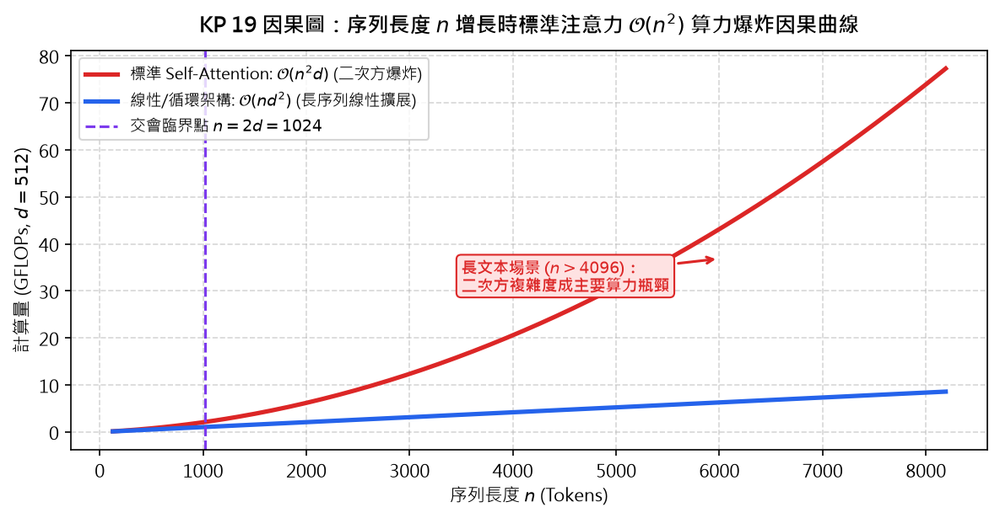
示意圖解：請對照 B0 準則（遮住文字仍能看出因果/機制對比）。
🤖 AI 生圖可用：重繪此示意圖的提示詞（結構化）
[Role & Subject]
Computational Complexity Scaling: Quadratic O(n²) Attention vs Linear O(n) Models.
[Visual Metaphor]
A steep exponential mountain slope (O(n²) standard attention) climbing sharply into memory overflow clouds vs a gentle steady hiking trail (O(n) linear attention) extending infinitely.
[Composition & Palette]
- Curve 1: Red parabolic curve rocketing upwards as sequence length n grows from 1K to 128K.
- Curve 2: Blue linear line maintaining manageable GPU memory footprint.
- Intersection marker highlighting sequence length threshold n = 2d.
- Palette: Alert red #dc2626, efficiency blue #2563eb, grid gray #e2e8f0.
- Style: High-precision quantitative asymptotic complexity chart.
互動 demo：Transformer 複雜度計算器：$\mathcal{O}(n^2 d)$ vs $\mathcal{O}(n d^2)$
標準 Attention 運算量：$2 n^2 d + 4 n d^2$ FLOPs，中間注意力矩陣顯存：$n^2$ 個浮點數；線性/循環架構：$4 n d^2$ FLOPs。
怎麼操作： 調整序列長度 $n$（從 128 到 32768）與隱藏維度 $d$（從 128 到 2048），即時計算 FLOPs 與顯存佔用對比。
觀察什麼： 當 $n < 2d$ 時，投影運算 $\mathcal{O}(n d^2)$ 佔主導；當 $n > 2d$ 時，注意力矩陣 $\mathcal{O}(n^2 d)$ 迅速成為算力與顯存的致命瓶頸。
正確基準： 在 $n=16384, d=512$ 下，標準 Attention 產生 $16384^2 \approx 2.68 \times 10^8$ 元素矩陣（單層 1GB 顯存），運算量高達線性架構的 9 倍。
序列長度 $n$： 4096 特徵維度 $d$： 512
雖然自注意力帶來了極致的平行度與 $\mathcal{O}(1)$ 的路徑長度，但其代價在於計算量對序列長度 $n$ 呈二次方增長（Quadratic Complexity） 。
自注意力單層計算量詳細推導：
線性投影成本 ：$\boldsymbol{Q}, \boldsymbol{K}, \boldsymbol{V}$ 投影矩陣乘法分別為 $\mathcal{O}(ndp), \mathcal{O}(ndp), \mathcal{O}(ndr)$，總計 $\mathcal{O}(nd(2p+r))$。注意力矩陣乘法 ：$\boldsymbol{Q}^\top \boldsymbol{K}$ 為 $(n \times p) \times (p \times n) \to \mathcal{O}(n^2 p)$。Softmax 歸一化 ：對 $n \times n$ 矩陣做列 Softmax $\to \mathcal{O}(n^2)$。加權輸出乘法 ：$\operatorname{Softmax} \times \boldsymbol{V}$ 為 $(n \times n) \times (n \times r) \to \mathcal{O}(n^2 r)$。
總計算複雜度（假設 $d \approx p \approx r$）：
$$\mathcal{O}(nd(2p+r) + n^2(p+r)) \approx \mathcal{O}(n^2 p)$$
記憶體複雜度為 $\mathcal{O}(n^2 + np)$（必須儲存 $n \times n$ 注意力矩陣以進行反向傳播）。
Table 1 經典對比 ：
Self-Attention ：每層複雜度 $\mathcal{O}(n^2 p)$、循序步數 $\mathcal{O}(1)$、最大路徑 $\mathcal{O}(1)$Recurrent (RNN) ：每層複雜度 $\mathcal{O}(n p^2)$、循序步數 $\mathcal{O}(n)$、最大路徑 $\mathcal{O}(n)$
祕笈 教授祕笈：自注意力計算複雜度分析（Computational Complexity: Quadratic Bottleneck）
4
Transformer 替代方案與四大演進方向（Alternatives & Variants of Transformer Overview）
−
Chinchilla / Kaplan Transformer Scaling Laws
L(N, D) = (N_c / N)^{α_N} + (D_c / D)^{α_D} + L_0
參數規模 N 冪律收益 (α_N ≈ 0.34)
訓練資料量 D 冪律收益 (α_D ≈ 0.28)
最優配比 (Chinchilla) N 與 D 應等比例 1:1 擴展
示意圖解（架構/流程向量圖）。
🤖 AI 生圖可用：重繪此示意圖的提示詞（結構化）
[Role & Subject]
Empirical Transformer Scaling Laws (Kaplan & Chinchilla power-law frontiers).
[Visual Metaphor]
A multi-dimensional compute envelope showing optimal allocation of Compute Budget C across Model Parameters N and Training Tokens D along a smooth Pareto frontier.
[Composition & Palette]
- Log-log coordinate plane with straight downward-sloping power-law loss curves.
- Chinchilla optimal 1:1 scaling trajectory highlighted in glowing green.
- Palette: Forest green #15803d, deep slate #1e293b, electric cyan #06b6d4.
- Style: Astrophysical / economic frontier curve visualization.
自注意力的 $\mathcal{O}(n^2)$ 運算與記憶體二次方瓶頸，嚴重限制了 Transformer 在超長文本（整本書籍、百萬行程式碼代碼庫、高解析度長影片）中的應用。為此，學界與業界提出了四大主流演進方向：
線性與準線性 Transformer（Linear & Quasi-Linear Transformers） ：
透過稀疏圖注意力（Sparse Attention）、移除 Softmax 的核化線性注意力（Linear Attention）、或硬體友善的分塊演算法（FlashAttention），將複雜度壓低至 $\mathcal{O}(n)$ 或 $\mathcal{O}(n \log n)$。
狀態空間模型（State Space Models, SSMs / Mamba） ：
借鑑現代控制理論，以連續狀態空間與線性時不變系統重新設計遞迴機制。與傳統 RNN 僅用單一向量不同，SSM 使用高維矩陣封裝序列記憶，兼具 RNN 的線性推論速度與 Transformer 的長程建模能力。
模型壓縮（Model Compression） ：
量化（Quantization） ：如 OPTQ、SmoothQuant、ZeroQuant，將 FP16 權重壓縮為 INT8/INT4。剪枝與蒸餾（Pruning & Distillation） ：移除冗餘注意力頭與層。KV Cache 壓縮 ：快取並動態剪枝 Key-Value 矩陣以加速推論。
動態自適應模型（Dynamic Models） ：
如 MatFormer、SortedNet、SHARCS，依任務難度動態調整啟用的層數或子網路寬度，靈活調配算力。
祕笈 教授祕笈：Transformer 規模縮放定律（Scaling Laws for Neural Language Models）
4.1
線性與準線性注意力：Sparse, Linear & Flash Attention（Linear & Quasi-Linear Attention）
−
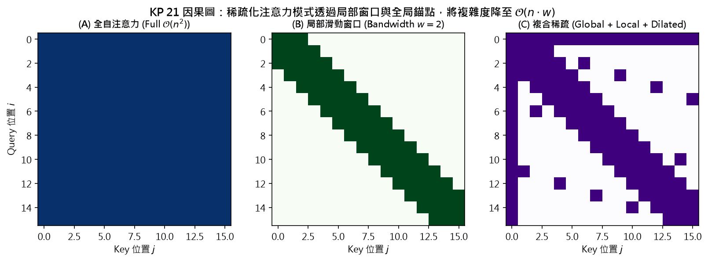
示意圖解：請對照 B0 準則（遮住文字仍能看出因果/機制對比）。
🤖 AI 生圖可用：重繪此示意圖的提示詞（結構化）
[Role & Subject]
Sparse Attention Patterns (Sliding Window, Dilated, Global Anchors in Longformer/BigBird).
[Visual Metaphor]
A structured matrix grid showing custom optical filter patterns: dense diagonal band (local window), periodic polka dots (dilated), and full vertical/horizontal crossbars (global CLS tokens).
[Composition & Palette]
- 3 distinct matrix patterns side by side with sparsity coverage percentages.
- Palette: Sky blue #0284c7, mint green #10b981, lavender #8b5cf6.
- Style: Clean semiconductor matrix mask diagram.
互動 demo：稀疏注意力 (Sparse Attention) 模式與感受野覆蓋率
稀疏化將全連接 $n \times n$ 矩陣限制為：局部窗口 $w$ + 全局錨點 $g$ + 空洞擴展 $r$。複雜度由 $\mathcal{O}(n^2)$ 降為 $\mathcal{O}(n(w+g+r))$。
怎麼操作： 切換稀疏模式（滑動窗口、膨脹空洞、BigBird/Longformer 複合模式），調整窗口大小與全局 Token 數量。
觀察什麼： 局部滑動窗口保留臨近語義；全局 Token 作為中繼樞紐在 2 層內實現任意兩 Token 的全圖信息流通；稀疏度高達 70%~90%。
正確基準： 稀疏注意力將非零連線數大幅壓縮，例如 $n=32$ 時，全注意力有 1024 條邊，複合稀疏模式僅需約 240 條邊（節省 $>75\%$ 計算）。
稀疏模式：局部滑動窗口 (Sliding Window) 膨脹空洞 (Dilated / Strided) BigBird 複合稀疏 (Local + Global + Random) 窗口大小 $w$： 2
為克服 $\mathcal{O}(n^2)$ 瓶頸，線性與準線性注意力主要分為三大流派：
稀疏注意力（Sparse Attention） ：
將 $n \times n$ 全連接注意力圖轉為稀疏圖，每個 token 僅與關鍵 token 交互。
Longformer ：結合滑動局部窗口（Window $w$）與全域特徵點（Global Attention），複雜度降至 $\mathcal{O}(nw)$。BigBird / SpAtten ：隨機連接 + 局部塊 + 全域節點。
線性注意力（Linear Attention） ：
透過代數重組或哈希近似，徹底擺脫 $n \times n$ 矩陣：
Reformer ：使用局部敏感哈希（LSH）將相似 Query 與 Key 歸入相同桶，複雜度降至 $\mathcal{O}(n \log n p)$。Linformer ：利用低秩奇異值投影將 Key/Value 長度投影為固定長度 $k$，複雜度降至 $\mathcal{O}(np)$。Performer ：利用正交隨機特徵（FAVOR+）無偏近似 Softmax 核，複雜度降至 $\mathcal{O}(np)$。
FlashAttention ：
不改變數學注意力計算，而是根據 GPU 記憶體階層架構（SRAM vs HBM），透過分塊（Tiling）與線上 Softmax 重新計算，避免在慢速 HBM 中物化 $n \times n$ 矩陣，達成 2–4 倍硬體極致加速與記憶體大幅節省。
祕笈 教授祕笈：稀疏注意力與局部感受野（Sparse Attention Patterns）
4.2.1
Performer：Softmax 瓶頸與矩陣乘法結合律（Performer: Softmax Bottleneck & Multiplication Associativity）
−
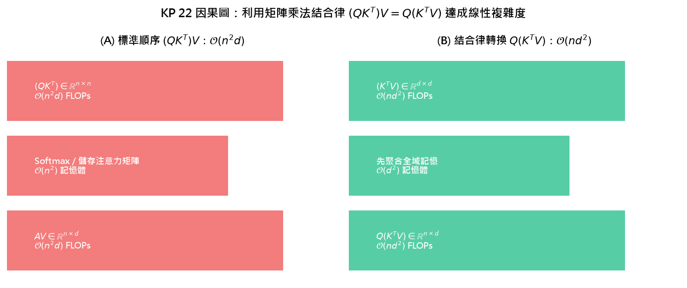
示意圖解：請對照 B0 準則（遮住文字仍能看出因果/機制對比）。
🤖 AI 生圖可用：重繪此示意圖的提示詞（結構化）
[Role & Subject]
Matrix Multiplication Associativity and the Linear Attention Breakthrough.
[Visual Metaphor]
A parenthesization switchboard: rearranging brackets from (Q Kᵀ) V [generating massive N×N grid] to Q (Kᵀ V) [generating tiny d×d memory cube], shrinking computational volume by orders of magnitude.
[Composition & Palette]
- Left box: Massive glowing orange N×N intermediate memory tensor.
- Right box: Compact sleek blue d×d intermediate memory tensor.
- Central mathematical identity: (Q Kᵀ) V = Q (Kᵀ V).
- Palette: Orange fire #f97316, calm azure #0284c7, clean white background.
- Style: Precision algebraic tensor physics diagram.
互動 demo：矩陣結合律計算量對比：$(Q K^T) V$ vs $Q (K^T V)$
矩陣乘法結合律：$(Q K^T) V = Q (K^T V)$。標準順序成本為 $2n^2 d$，轉換結合順序成本為 $2n d^2$。加速比 $= n / d$。
怎麼操作： 拖動序列長度 $n$ 與特徵維度 $d$，比較兩種乘法括號順序的乘法次數與中間矩陣維度。
觀察什麼： 長序列（$n \gg d$）場景下，$K^T V$ 優先聚合為固定 $d \times d$ 記憶矩陣，徹底消除對序列長度 $n$ 的平方依賴！
正確基準： 當 $n=4096, d=256$ 時，標準順序乘法量為 $8.59 \times 10^9$，結合律順序僅需 $5.36 \times 10^8$（提速達 $16.0\times$）。
序列長度 $n$： 4096 特徵維度 $d$： 256
回顧標準注意力公式：$\boldsymbol{Z} = \boldsymbol{V} \operatorname{softmax}\left(\frac{1}{\sqrt{p}} \boldsymbol{Q}^\top \boldsymbol{K}\right)$。為什麼運算複雜度必然是 $\mathcal{O}(n^2)$？
Softmax 是阻止矩陣結合律的「路障」 ：
在標準算式中，由於非線性的 $\operatorname{softmax}(\cdot)$ 包裹在 $\boldsymbol{Q}^\top \boldsymbol{K}$ 外面，我們被迫必須先計算 $(n \times p) \times (p \times n) \to (n \times n)$ 的中間矩陣 ，產生 $\mathcal{O}(n^2 p)$ 運算量與記憶體。
如果沒有 Softmax（線性情況） ：
$$\boldsymbol{Z} = \frac{1}{\sqrt{p}} \boldsymbol{V} (\boldsymbol{Q}^\top \boldsymbol{K}) = \frac{1}{\sqrt{p}} (\boldsymbol{V} \boldsymbol{Q}^\top) \boldsymbol{K}$$
利用矩陣乘法結合律，我們可先計算 $(\boldsymbol{V} \boldsymbol{Q}^\top) \in \mathbb{R}^{r \times p}$（維度僅 $r \times p$，完全與序列長度 $n$ 無關！） ，再與 $\boldsymbol{K} \in \mathbb{R}^{p \times n}$ 相乘。此時代數運算量變為 $\mathcal{O}(rpn + rpn) = \mathcal{O}(np)$，對序列長度 $n$ 實現了完美的線性複雜度！
Performer 的核心思想 ：利用核近似方法將 $\operatorname{softmax}(\boldsymbol{Q}^\top \boldsymbol{K})$ 拆解為 $\boldsymbol{Q}'^\top \boldsymbol{K}'$，從而合法應用乘法結合律，實現 $\mathcal{O}(np)$ 線性時間自注意力。
祕笈 教授祕笈：矩陣乘法結合律與線性注意力（Linear Attention & Kernel Trick）
4.2.2
隨機特徵核近似（Kernel Approximation via Random Features）
−
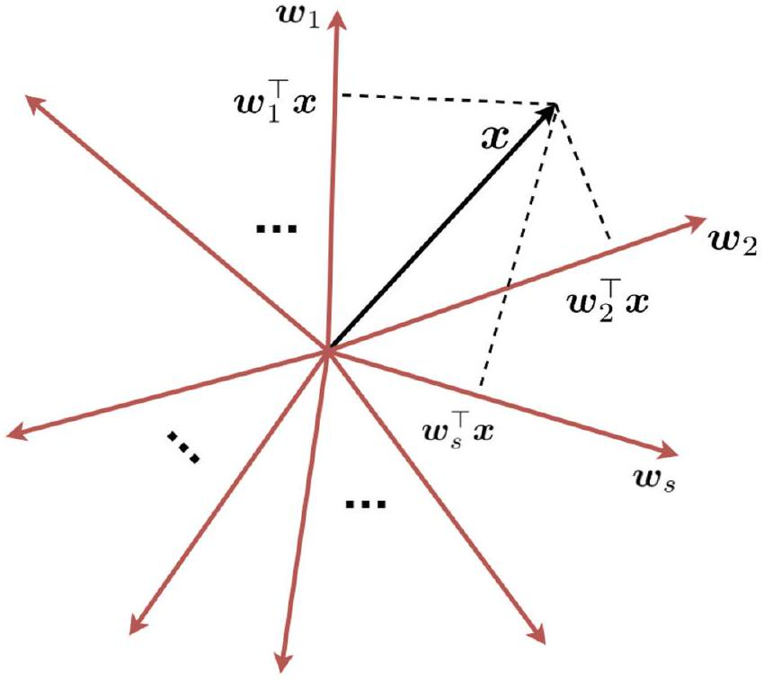
原書圖 9.12：Random Fourier Features 隨機特徵投影與核函數近似
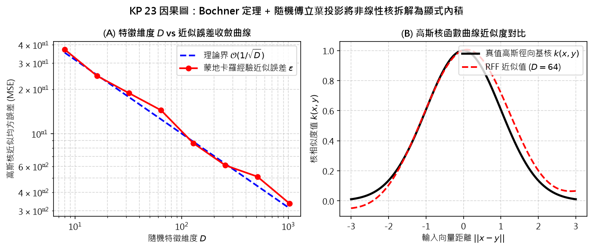
示意圖解：請對照 B0 準則（遮住文字仍能看出因果/機制對比）。
🤖 AI 生圖可用：重繪此示意圖的提示詞（結構化）
[Role & Subject]
Random Fourier Features (RFF) and Bochner's Theorem Kernel Approximation.
[Visual Metaphor]
A high-dimensional infinite Gaussian kernel decomposed into a finite constellation of random Fourier harmonic oscillators projecting onto a lower-dimensional sphere.
[Composition & Palette]
- Input vectors x and y passing through random projection matrix Ω sampled from Gaussian distribution N(0, σ² I).
- Explicit feature mapping φ(x) computing cosine and sine features whose inner product mirrors the RBF kernel.
- Palette: Celestial gold #f59e0b, deep cosmos violet #4c1d95, clean white.
- Style: Harmonic analysis / quantum state projection diagram.
互動 demo：Random Fourier Features (RFF) 核函數蒙地卡羅逼近
$k(x, y) = \exp(-\gamma \|x-y\|^2) \approx \phi(x)^T \phi(y)$，其中 $\phi(x) = \sqrt{\frac{2}{D}} [\cos(\omega_1 x + b_1), \dots]$。
怎麼操作： 調整投影維度 $D$（從 4 到 512）與核寬度 $\gamma$，點擊重新取樣，觀察 RFF 近似值與真實高斯核函數曲線重合度及均方誤差 (MSE)。
觀察什麼： 根據 Bochner 定理，隨著投影維度 $D$ 增加，蒙地卡羅估計的誤差以 $\mathcal{O}(1/\sqrt{D})$ 速率快速收斂，精確還原非線性核。
正確基準： 真實高斯核 $k(0)=1.000$；當 $D \ge 128$ 時，全區間近似均方誤差降至 $<0.005$。
投影維度 $D$： 64 核參數 $\gamma$： 1.0 重新採樣 $\omega, b$
如何將非線性函數拆解為特徵內積？這在機器學習中由 Rahimi & Recht（2007）的隨機傅立葉特徵（Random Fourier Features, RFF） 與核方法給出了解答。
設 $\phi(\boldsymbol{x}): \boldsymbol{x} \mapsto \phi(\boldsymbol{x})$ 為希爾伯特空間（RKHS）的特徵映射，核函數定義為 $k(\boldsymbol{x}, \boldsymbol{y}) = \phi(\boldsymbol{x})^\top \phi(\boldsymbol{y})$。根據 Bochner 定理，任何平移不變的連續核函數皆可透過 $s$ 個隨機採樣向量 $\{\boldsymbol{w}_i\}_{i=1}^s$ 進行蒙地卡羅近似：
$$\phi(\boldsymbol{x}) \approx \frac{1}{\sqrt{s}} \left[\sin(\boldsymbol{w}_1^\top \boldsymbol{x}), \dots, \sin(\boldsymbol{w}_s^\top \boldsymbol{x}), \cos(\boldsymbol{w}_1^\top \boldsymbol{x}), \dots, \cos(\boldsymbol{w}_s^\top \boldsymbol{x})\right]^\top$$
其中 $\boldsymbol{w}_i \sim \mathcal{N}(0, \boldsymbol{I})$ 獨立採樣自高斯分佈。則高斯 / RBF 核函數可精確近似為：
$$k(\boldsymbol{x}, \boldsymbol{y}) = e^{-\frac{\|\boldsymbol{x} - \boldsymbol{y}\|^2}{\gamma}} \approx \phi(\boldsymbol{x})^\top \phi(\boldsymbol{y})$$
幾何意義 ：每個 $\boldsymbol{w}_i^\top \boldsymbol{x}$ 代表將資料點 $\boldsymbol{x}$ 投影到一條隨機射線上以捕捉局部幾何特徵。隨機向量數量 $s$ 越大，內積近似真實高斯核的精度就越高。
祕笈 教授祕笈：隨機傅立葉特徵與 Bochner 定理（Random Fourier Features & Bochner's Theorem）
4.2.3
FAVOR+ 與線性注意力（Softmax Approximation via FAVOR+ in Performer）
−
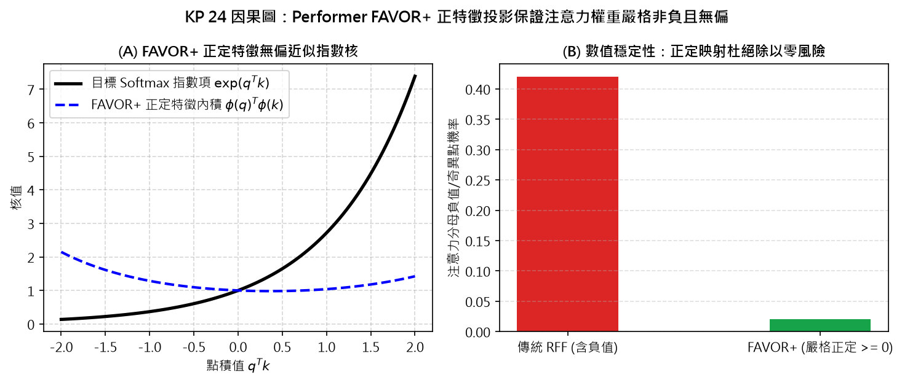
示意圖解：請對照 B0 準則（遮住文字仍能看出因果/機制對比）。
🤖 AI 生圖可用：重繪此示意圖的提示詞（結構化）
[Role & Subject]
FAVOR+ (Positive Random Features) and Performer Architecture.
[Visual Metaphor]
A positive energy filter ensuring all random feature projections φ(x) remain strictly non-negative (≥ 0), preventing unstable zero-crossings or division-by-zero singularities.
[Composition & Palette]
- Comparison: Standard trigonometric RFF (oscillating into negative territory, dangerous) vs FAVOR+ exponential positive mapping (strictly positive, provably stable).
- Palette: Emerald green #16a34a (safe positive region), warning red #dc2626 (unstable negative region).
- Style: Precision mathematical stability proof visualization.
互動 demo：FAVOR+ 正定隨機特徵與 Performer 線性注意力
FAVOR+ 正定特徵映射：$\phi(x) = \frac{\exp(-\|x\|^2/2)}{\sqrt{m}} [\exp(w_1^T x), \dots, \exp(w_m^T x)]$，保證 $\phi(x) \ge 0$ 且無偏逼近 Softmax 核。
怎麼操作： 調整隨機特徵數 $m$ 與輸入向量長度，對比標準 Softmax 注意力與 FAVOR+ 線性近似的注意力權重向量與數值穩定性。
觀察什麼： 傳統三角 RFF 會產生負值破壞 Softmax 凸組合性質；FAVOR+ 透過正定指數特徵投影，保證分母非零且所有權重嚴格非負。
正確基準： FAVOR+ 近似注意力權重總和嚴格為 $1.000$；隨著特徵數 $m$ 增加，與標準 Softmax 輸出的相對誤差 (L2 距離) 快速趨近於 0。
正特徵數 $m$： 32 輸入向量維度 $d$：4 8 16 重新取樣正定投影矩陣 $W$
Performer（Choromanski et al., 2021）提出的 FAVOR+（Fast Attention Via positive Orthogonal Random features） ，精巧地將注意力機制的 Softmax 轉化為核近似問題。
指數項代數展開 ：
考慮高斯核公式（取 $\gamma=2$）：
$$k(\boldsymbol{x}, \boldsymbol{y}) = e^{-\frac{\|\boldsymbol{x}-\boldsymbol{y}\|^2}{2}} = e^{-\frac{\|\boldsymbol{x}\|^2}{2}} e^{-\frac{\|\boldsymbol{y}\|^2}{2}} e^{\boldsymbol{x}^\top \boldsymbol{y}}$$
移項後可得 Softmax 的分子項 $e^{\boldsymbol{x}^\top \boldsymbol{y}}$：
$$e^{\boldsymbol{x}^\top \boldsymbol{y}} = e^{\frac{\|\boldsymbol{x}\|^2}{2}} e^{\frac{\|\boldsymbol{y}\|^2}{2}} k(\boldsymbol{x}, \boldsymbol{y}) \approx \left(e^{\frac{\|\boldsymbol{x}\|^2}{2}} \phi(\boldsymbol{x})\right)^\top \left(e^{\frac{\|\boldsymbol{y}\|^2}{2}} \phi(\boldsymbol{y})\right) =: \phi_{\text{SM}}(\boldsymbol{x})^\top \phi_{\text{SM}}(\boldsymbol{y})$$正隨機特徵映射 $\phi_{\text{SM}}(\boldsymbol{x})$ ：
$$\phi_{\text{SM}}(\boldsymbol{x}) = \frac{e^{\frac{\|\boldsymbol{x}\|^2}{2}}}{\sqrt{s}} \left[\sin(\boldsymbol{w}_1^\top \boldsymbol{x}), \dots, \sin(\boldsymbol{w}_s^\top \boldsymbol{x}), \cos(\boldsymbol{w}_1^\top \boldsymbol{x}), \dots, \cos(\boldsymbol{w}_s^\top \boldsymbol{x})\right]^\top \in \mathbb{R}^{2s}$$度矩陣（Degree Matrix）歸一化 ：
令 $\boldsymbol{Q}' = \phi_{\text{SM}}(\boldsymbol{Q}) \in \mathbb{R}^{2s \times n}, \boldsymbol{K}' = \phi_{\text{SM}}(\boldsymbol{K}) \in \mathbb{R}^{2s \times n}$，度矩陣 $\boldsymbol{D}_{ii} = \sum_{j} ({\boldsymbol{Q}'}^\top \boldsymbol{K}')_{ij} = ({\boldsymbol{q}'_i})^\top (\sum_j \boldsymbol{k}'_j)$，最終線性輸出為：
$$\boldsymbol{Z} = \boldsymbol{D}^{-1} \left( {\boldsymbol{Q}'}^\top \left(\boldsymbol{K}' \boldsymbol{V}^\top\right) \right)^\top$$
計算複雜度直接從 $\mathcal{O}(n^2 p)$ 降為 $\mathcal{O}(2ns)$，徹底實現超長序列的線性自注意力！
祕笈 教授祕笈：FAVOR+ 正定特徵與 Performer（FAVOR+ & Performer Architecture）
5
總結與注意力機制的未來演進（Conclusion: From Attention to Modern LLMs）
−
2014-2016
Seq2Seq +
Bahdanau 動態對齊
RNN 輔助模組
2017
Transformer
純注意力 (QKV)
並行革命 O(n²)
2018-2020
BERT / GPT
預訓練 + 微調
大模型湧現基石
2020-2023
線性/高效注意力
Performer / RFF
O(n) 長序列突破
2024+
多模態統一基座
FlashAttn + SSM
通用智慧引擎
注意力機制十年演進史：從輔助對齊組件到現代人工智慧的通用計算基座
示意圖解（架構/流程向量圖）。
🤖 AI 生圖可用：重繪此示意圖的提示詞（結構化）
[Role & Subject]
The Grand Roadmap of Attention and Modern Foundation Models.
[Visual Metaphor]
A majestic evolutionary river delta: starting from early Seq2Seq streams, converging into the powerful Transformer main channel, and branching out into Vision Transformers, Multimodal LLMs, and Efficient State-Space Models.
[Composition & Palette]
- Timeline milestones from 2014 to 2025+.
- Core branches: Language (GPT, Claude), Vision (ViT), Audio (Whisper), Long-Context (FlashAttention, Mamba).
- Palette: Rich gradient from deep blue #1e3a8a to vibrant purple #7c3aed and gold #eab308.
- Style: Comprehensive tech evolutionary tree / roadmap infographic.
注意力機制本質上是一種自適應資料加權（adaptive data weighting） 範式。它不僅徹底擺脫了序列處理中長期對遞迴（RNN）結構的依賴，更透過 Transformer 架構奠定了當前大型語言模型（GPT-4、Claude、Gemini、Llama）與多模態基礎模型的核心底層。
本章核心脈絡回顧：
從 Seq2Seq 到自注意力（§2） ：從單一上下文向量瓶頸，演進為動態加權檢索（Q, K, V）與自注意力矩陣。Transformer 完整架構（§3） ：正弦位置編碼、多頭注意力、殘差層正規化（Add & Norm）、前饋網路與解碼器因果遮罩，實現全平行訓練。效率革命與前沿變體（§4） ：為突破 $\mathcal{O}(n^2)$ 序列長度限制，誕生了稀疏注意力、FlashAttention、以 Performer（FAVOR+）為代表的線性核化注意力，以及新興的狀態空間模型（SSM / Mamba）。
展望未來，混合架構（Hybrid Transformer-SSM）、硬體極致優化計算核、以及動態自適應寬深度模型，正持續引領深度學習邁向下一代長上下文與多模態智慧系統。
祕笈 教授祕笈：注意力機制十年總結與未來展望（Evolution & Future of Transformers）
教授祕笈：注意力機制概念與直覺（Attention Intuition）
我是 Geoffrey Hinton。在人類認知與現代人工智慧中，「注意力」是最核心的計算機制。
1. 大師開場
想像你在嘈雜的派對中，儘管周遭有上百人在同時說話，你依然能精準聽見朋友叫你的名字——這就是「雞尾酒會效應」（Cocktail Party Effect）。大腦從不對所有感知訊號進行均勻平均，而是動態分配認知資源。在深度學習中，注意力機制就是將這種動態加權能力賦予神經網路的關鍵躍遷。
2. 大一白話核心直覺
如果沒有注意力，模型讀完一本 300 頁的小說時，就像把整本書扔進果汁機打成一杯「均勻的果汁」，所有細節都被稀釋了。有了注意力，模型在回答「兇手是誰」時，會拿出一支螢光筆，精確在第 42 頁的關鍵線索上畫下高亮（分配 90% 的權重），而忽略其他無關的描寫。
3. 為什麼非它不可？歷史痛點與演進代價
在傳統模型（如純 CNN 或純 RNN）中：
固定表徵瓶頸：無論輸入句子是 5 個字還是 500 個字，都被迫壓縮至固定長度的向量中，長程資訊必然遺失。
等權稀釋：平均池化（Average Pooling）將所有特徵等權相加，噪聲與關鍵訊號混雜，導致信噪比隨序列長度直線下降。
代價是：注意力機制引入了二維關聯計算，運算複雜度從線性提升，但換取了近乎無限的長程依賴建模能力。
4. 數學骨架拆解：從加權平均到動態權重
給定一組特徵向量序列 $h_1, h_2, \dots, h_n \in \mathbb{R}^d$，傳統平均池化為：
$$c_{\text{uniform}} = \frac{1}{n} \sum_{j=1}^n h_j$$
而注意力機制透過動態評分函數 $s(q, h_j)$ 計算注意力分數：
$$\alpha_j = \text{Softmax}(s(q, h_j)) = \frac{\exp(s(q, h_j))}{\sum_{k=1}^n \exp(s(q, h_k))}$$
聚合輸出為來源特徵的凸組合（Convex Combination）：
$$c = \sum_{j=1}^n \alpha_j h_j, \quad \text{其中 } \sum_{j=1}^n \alpha_j = 1, \; \alpha_j \ge 0$$
幾何意義：輸出向量 $c$ 永遠落在以 $\{h_1, \dots, h_n\}$ 為頂點的凸包（Convex Hull）內部，且隨查詢 $q$ 的意圖動態滑動。
5. 手把手數值演算
假設有 3 個來源特徵向量 $h_1 = [1, 0]^T$, $h_2 = [0, 1]^T$, $h_3 = [1, 1]^T$。查詢向量 $q = [2, 0]^T$。
使用點積作為評分函數 $s_j = q^T h_j$：
$s_1 = [2, 0] [1, 0]^T = 2$
$s_2 = [2, 0] [0, 1]^T = 0$
$s_3 = [2, 0] [1, 1]^T = 2$
計算 Softmax 權重（$\exp(2) \approx 7.389$, $\exp(0) = 1$）：
分母 $\sum \exp = 7.389 + 1 + 7.389 = 15.778$
$\alpha_1 = 7.389 / 15.778 \approx 0.468$
$\alpha_2 = 1.000 / 15.778 \approx 0.064$
$\alpha_3 = 7.389 / 15.778 \approx 0.468$
聚合向量：
$$c = 0.468 [1, 0]^T + 0.064 [0, 1]^T + 0.468 [1, 1]^T = [0.936, 0.532]^T$$
6. 程式碼極簡骨架
import torch
import torch.nn.functional as F
def basic_attention(q, H):
# q: (1, d), H: (n, d)
scores = torch.matmul(q, H.T) # (1, n)
weights = F.softmax(scores, dim=-1) # (1, n)
context = torch.matmul(weights, H) # (1, d)
return context, weights
q = torch.tensor([[2.0, 0.0]])
H = torch.tensor([[1.0, 0.0], [0.0, 1.0], [1.0, 1.0]])
c, w = basic_attention(q, H)
print("Attention Weights:", w)
print("Context Vector:", c)
7. 三大致命思維陷阱
陷阱 1：誤以為注意力是「硬性挑選」（Hard Selection）。注意：標準注意力是完全可微的「軟加權」（Soft Selection），梯度可順暢傳播。
陷阱 2：忘記 Softmax 具有平移不變性但無尺度不變性。若評分值整體乘以 10，Softmax 分佈會劇烈尖銳化，逼近 One-Hot。
陷阱 3：混淆 Attention 與 Pooling。Pooling 是無參數或靜態降維，Attention 依賴 Query 實現動態內容感知。
8. 跨領域連結
統計物理中的玻爾茲曼分佈（Boltzmann Distribution）：注意力權重 $\alpha_i$ 等價於微觀狀態在能量 $E_i = -s_i$ 下的熱力學概率 $P(i) = \frac{e^{-E_i / k_B T}}{Z}$。
9. 頂級期刊級技術問答
Q：為什麼不直接使用 Hard Attention（argmax 挑選單一 Token）？
A：Hard Attention 包含離散取樣操作，導致損失函數對參數不可微，必須依賴強化學習 Policy Gradient（REINFORCE 演算法）訓練，方差極大且難以收斂；Soft Attention 處處連續可微，可用反向傳播端到端高效優化。
10. 大師課後箴言
注意力不是過濾掉世界，而是在雜亂的信息洪流中，為最關鍵的靈魂特徵點亮聚光燈。
教授祕笈：Auto-Encoder 架構與表徵學習（Autoencoders）
我是 Yann LeCun。在深度學習的歷史上，Auto-Encoder 是理解自監督表徵學習的第一座里程碑。
1. 大師開場
無監督學習（自監督學習）就像讓學生在沒有老師提供標籤答案的情況下，透過自己觀察世界、理解結構，並嘗試用最精簡的語言複述出來。Auto-Encoder 就是這種「自我提煉」哲學的純粹實踐。
2. 大一白話核心直覺
給你一張百萬像素的高清大頭照，我要求你只能用一張小紙條（10 個數字）記錄這張臉，然後讓你的朋友僅憑這 10 個數字把整張照片畫回來。為了畫得像，這 10 個數字必須記錄「膚色、臉型、眼距、笑容」等最本質的特徵，而自動扔掉無關緊要的背景雜訊。
3. 為什麼非它不可？歷史痛點與演進代價
在監督學習中，標註資料代價極高。如何利用海量無標籤資料學出有用的特徵？
傳統 PCA 只能做線性降維，無法捕捉自然資料的高階非線性流形（Manifold）。
若不加瓶頸限制（如 $k \ge d$），網路會退化成無意義的「恆等映射」（Identity Mapping），什麼都學不到。
代價是：透過低維瓶頸或正規化約束，強制網路丟棄高頻噪聲，只保留低維核心流形。
4. 數學骨架拆解
編碼器（Encoder）將輸入 $x \in \mathbb{R}^d$ 映射至低維潛在空間 $z \in \mathbb{R}^k$（$k \ll d$）：
$$z = f(x) = \sigma(W_e x + b_e)$$
解碼器（Decoder）將潛在向量 $z$ 重建為原始維度 $\hat{x} \in \mathbb{R}^d$：
$$\hat{x} = g(z) = \sigma(W_d z + b_d)$$
重建損失目標（MSE 或 Binary Cross-Entropy）：
$$\mathcal{L}(x, \hat{x}) = \|x - \hat{x}\|^2 = \|x - g(f(x))\|^2$$
5. 手把手數值演算
考慮 3 維輸入 $x = [1.0, 2.0, 1.0]^T$，瓶頸維度 $k=1$。
設編碼權重 $W_e = [0.5, 0.5, 0.5]$（$b_e=0$），線性活化：
$$z = W_e x = 0.5(1) + 0.5(2) + 0.5(1) = 2.0$$
設解碼權重 $W_d = [0.5, 1.0, 0.5]^T$（$b_d=0$）：
$$\hat{x} = W_d z = 2.0 \times [0.5, 1.0, 0.5]^T = [1.0, 2.0, 1.0]^T$$
重建誤差 $\mathcal{L} = \|x - \hat{x}\|^2 = 0.0$（完美重建對稱特徵）。
6. 程式碼極簡骨架
import torch
import torch.nn as nn
class AutoEncoder(nn.Module):
def __init__(self, in_dim=784, latent_dim=32):
super().__init__()
self.encoder = nn.Sequential(nn.Linear(in_dim, 128), nn.ReLU(), nn.Linear(128, latent_dim))
self.decoder = nn.Sequential(nn.Linear(latent_dim, 128), nn.ReLU(), nn.Linear(128, in_dim), nn.Sigmoid())
def forward(self, x):
z = self.encoder(x)
x_hat = self.decoder(z)
return x_hat, z
7. 三大致命思維陷阱
陷阱 1：以為瓶頸越小越好。過小的 $k$ 會導致嚴重欠擬合，重要特徵被永久抹殺。
陷阱 2：以為重建誤差為 0 就代表特徵學得好。若網路容量過大，它可能只是記住噪聲（過擬合）。
陷阱 3：混淆 Auto-Encoder 與 VAE。傳統 AE 潛在空間不連續，無法直接隨機採樣生成新樣本。
8. 跨領域連結
資訊論中的率失真理論（Rate-Distortion Theory）：AE 是在給定碼率（瓶頸維度 $k$）下最小化失真（重建誤差 $\mathcal{L}$）的非線性最優逼近器。
9. 頂級期刊級技術問答
Q：在自注意力模型出現後，Autoencoder 思想如何演變？
A：演化為 Masked Autoencoders（MAE / BERT）。不再依賴維度瓶頸，而是透過隨機遮蓋 75% 輸入，強制模型利用未遮蓋部分預測被遮蓋內容，成為現代自監督大模型的基石。
10. 大師課後箴言
最深刻的理解，源於能夠用最簡練的語言將世界無損地重建。
教授祕笈：Seq2Seq 架構與上下文向量瓶頸（Seq2Seq & Context Bottleneck）
我是 Ilya Sutskever。Seq2Seq 的誕生開啟了神經機器翻譯的新紀元，而它的瓶頸則催生了 Attention 的革命。
1. 大師開場
語言不是靜態的單詞清單，而是時間維度上的序列流。Seq2Seq 首次打破了輸入長度必須等於輸出長度的限制，實現了「任意長度序列到任意長度序列」的映射。
2. 大一白話核心直覺
Seq2Seq 的編碼器就像一個法語口譯員，他把整篇 500 字的演說聽完後，把所有精髓濃縮成一個固定容量的「記憶膠囊」（上下文向量 $C$），然後交給英語口譯員由他一字一句念出英文。當演說只有 5 句話時口譯員表現完美；但當演說長達 50 頁時，小小的膠囊根本裝不下，翻譯直接崩潰。
3. 為什麼非它不可？歷史痛點與演進代價
在 Seq2Seq 出現前，機器翻譯依賴基於短語的統計機器翻譯（SMT），工程管線極端繁雜。
Seq2Seq 的優勢：首次實現端到端（End-to-End）神經機器翻譯。
致命痛點：固定長度向量 $C = h_{T_x}$ 成為嚴重的資訊瓶頸（Information Bottleneck）。隨著輸入長度超過 20 個詞，BLEU 分數雪崩式下跌。
4. 數學骨架拆解
編碼器依序遞迴更新隱藏狀態：
$$h_t = \text{RNN}_{\text{enc}}(x_t, h_{t-1}), \quad t = 1, \dots, T_x$$
上下文向量為最終隱藏態：
$$C = h_{T_x}$$
解碼器以 $C$ 為初始狀態自回歸生成：
$$s_0 = C, \quad s_i = \text{RNN}_{\text{dec}}(y_{i-1}, s_{i-1}), \quad P(y_i | y_{
5. 手把手數值演算
設來源序列長度 $T_x = 2$，輸入 $x_1, x_2$。
編碼器更新（設純線性 RNN $h_t = 0.5 h_{t-1} + x_t$，$h_0=0$）：
$t=1$: $h_1 = 0 + x_1 = x_1$
$t=2$: $h_2 = 0.5 x_1 + x_2$
上下文向量 $C = h_2 = 0.5 x_1 + x_2$
觀察：$x_1$ 的權重衰減為 $0.5$；若長度為 $T$，則最初詞 $x_1$ 在 $C$ 中的殘留影響力以 $0.5^{T-1}$ 指數級衰減（災難性遺忘）。
6. 程式碼極簡骨架
import torch
import torch.nn as nn
class ClassicSeq2Seq(nn.Module):
def __init__(self, vocab_size, emb_dim, hidden_dim):
super().__init__()
self.encoder = nn.GRU(emb_dim, hidden_dim, batch_first=True)
self.decoder = nn.GRU(emb_dim, hidden_dim, batch_first=True)
self.fc_out = nn.Linear(hidden_dim, vocab_size)
def forward(self, src, tgt):
_, hidden = self.encoder(src) # hidden is context vector C
dec_out, _ = self.decoder(tgt, hidden)
return self.fc_out(dec_out)
7. 三大致命思維陷阱
陷阱 1：以為雙向 RNN（Bi-RNN）能徹底解決瓶頸。Bi-RNN 僅緩解前向衰減，但最終拼接的向量容量依然固定。
陷阱 2：以為只要擴大 Hidden Dim 就能解決。維度過大會引發參數過擬合與訓練崩潰，且長程資訊衰減本質未變。
陷阱 3：忽視暴露偏差（Exposure Bias）。訓練時用真實標籤（Teacher Forcing），推論時用自身預測，誤差會隨時序滾雪球累積。
8. 跨領域連結
控制理論中的觀測器瓶頸：有限維狀態空間在觀測無限時域過程時，若無持續外生輸入更新，系統熵必然單調遞增。
9. 頂級期刊級技術問答
Q：在 Attention 出現前，學者用了哪些 Trick 緩解 Seq2Seq 的長程遺忘？
A：最著名的是 Sutskever 等人提出的「將輸入句子倒序輸入」（Reverse Source Sentence），使來源句首詞與目標句首詞的時序距離大幅縮短，顯著提升翻譯質量。
10. 大師課後箴言
不要試圖將整個世界的歷史裝進單一的罐子裡，學會隨時回頭翻閱過去的每一頁。
教授祕笈：Bahdanau 動態對齊機制（Bahdanau Additive Attention）
我是 Dzmitry Bahdanau。2014 年我們發表的加性注意力機制，是神經網路學會「按需查閱」的起點。
1. 大師開場
傳統 Seq2Seq 逼迫編碼器一次記住所有細節，這違背了認知常理。我們提出的想法非常直接：為什麼解碼器在翻譯每一個詞時，不能回過頭動態看看來源句子的每一個單詞？
2. 大一白話核心直覺
這就像你讀英文文檔做中文翻譯時，不是把整篇背下來再默寫中文，而是翻譯到第 3 個詞時，眼睛回頭掃描法語原文中的相關單字；翻譯第 4 個詞時，眼睛再掃描另一個單字。注意力分配矩陣 $\alpha_{ij}$ 就是你眼睛視線的動態軌跡。
3. 為什麼非它不可？歷史痛點與演進代價
歷史痛點：徹底粉碎了固定長度向量 $C$ 的資訊瓶頸，使神經機器翻譯在長句子上的表現首次超越傳統 SMT。
演進代價：解碼每個詞都需要對所有來源隱藏態進行動態評分，運算複雜度提升至 $\mathcal{O}(T_x \cdot T_y)$。
4. 數學骨架拆解
在解碼第 $i$ 步時，目標隱藏態為 $s_{i-1}$，來源隱藏態為 $h_j$（$j=1, \dots, T_x$）。
加性注意力評分函數（兩層 MLP + tanh）：
$$e_{ij} = v_a^T \tanh(W_a s_{i-1} + U_a h_j)$$
Softmax 歸一化得到注意力權重：
$$\alpha_{ij} = \frac{\exp(e_{ij})}{\sum_{k=1}^{T_x} \exp(e_{ik})}$$
動態上下文向量（來源隱藏態的加權和）：
$$c_i = \sum_{j=1}^{T_x} \alpha_{ij} h_j$$
5. 手把手數值演算
設 $T_x = 2$, $h_1 = [1, 0]^T, h_2 = [0, 1]^T$。當前解碼態 $s_{i-1}$ 與權重計算後得到 $e_{i1} = 1.0, e_{i2} = 2.0$。
計算 Softmax（$\exp(1.0) \approx 2.718, \exp(2.0) \approx 7.389$）：
分母 $\sum = 2.718 + 7.389 = 10.107$
$\alpha_{i1} = 2.718 / 10.107 \approx 0.269$
$\alpha_{i2} = 7.389 / 10.107 \approx 0.731$
聚合上下文向量：
$$c_i = 0.269 [1, 0]^T + 0.731 [0, 1]^T = [0.269, 0.731]^T$$
6. 程式碼極簡骨架
import torch
import torch.nn as nn
import torch.nn.functional as F
class BahdanauAttention(nn.Module):
def __init__(self, enc_dim, dec_dim, attn_dim):
super().__init__()
self.W = nn.Linear(dec_dim, attn_dim, bias=False)
self.U = nn.Linear(enc_dim, attn_dim, bias=False)
self.v = nn.Linear(attn_dim, 1, bias=False)
def forward(self, s_prev, H_enc):
# s_prev: (batch, dec_dim), H_enc: (batch, src_len, enc_dim)
scores = self.v(torch.tanh(self.W(s_prev).unsqueeze(1) + self.U(H_enc))) # (batch, src_len, 1)
alphas = F.softmax(scores.squeeze(-1), dim=-1) # (batch, src_len)
context = torch.bmm(alphas.unsqueeze(1), H_enc).squeeze(1) # (batch, enc_dim)
return context, alphas
7. 三大致命思維陷阱
陷阱 1：誤以為 $W_a s_{i-1}$ 與 $U_a h_j$ 每次都要重新計算。優化技巧：$U_a H$ 可以對整個序列預先計算一次，解碼各步只需廣播相加。
陷阱 2：混淆 Bahdanau（加性）與 Luong（乘性）的解碼時序（Bahdanau 使用 $s_{i-1}$，Luong 使用當前步 $s_i$）。
陷阱 3：忽略注意力矩陣的可解釋性侷限。注意力權重高不完全等同於特徵因果貢獻大。
8. 跨領域連結
資料庫索引與軟查詢：傳統關聯式資料庫中 Primary Key 的精準匹配是 Hard Lookup，Bahdanau Attention 則是基於連續向量距離的軟條件查詢（Soft Querying）。
9. 頂級期刊級技術問答
Q：為什麼 Bahdanau 採用加性形式 $v^T \tanh(W s + U h)$ 而不是簡單的點積 $s^T h$？
A：因為在 Seq2Seq 中，Encoder 隱藏態與 Decoder 隱藏態往往處於不同的特徵維度與語義子空間，加性模型透過 $W$ 與 $U$ 投影矩陣將兩者對齊至相同的注意力隱藏空間。
10. 大師課後箴言
動態對齊讓機器學會了謙遜——在給出答案前，先仔細對照每一個問題的細節。
教授祕笈：注意力評分函數演進（Score Functions: Additive vs Multiplicative）
我是 Minh-Thang Luong。我們在 2015 年對注意力機制的各種評分函數進行了系統化探索。
1. 大師開場
評分函數（Score Function）是注意力機制的「靈魂之尺」，它定義了如何量化兩個向量之間的相關度。選擇加性、點積還是縮放點積，決定了模型的計算效率與表達極限。
2. 大一白話核心直覺
加性注意力像是一組精密的齒輪箱（包含多層非線性變換與加法），雖然精細但轉速受限；乘性點積注意力則像光速的激光反射，直接利用向量內積一瞬間完成全矩陣並行運算。
3. 為什麼非它不可？歷史痛點與演進代價
加性注意力（Bahdanau）：表達力強，在隱藏維度較小時表現優異，但運算依賴 tanh 活化與兩次投影，難以被現代 GPU Tensor Core 極致加速。
乘性點積（Luong / Dot-product）：計算形式完全由矩陣乘法主導（BLAS GEMM），速度大幅超越加性模型，為後續 Transformer 的並行革命奠定基石。
4. 數學骨架拆解
四大經典評分函數形式對比：
Dot（純點積） ：
$$s(q, k) = q^T k \quad (\text{要求 } \dim(q) = \dim(k))$$
General（雙線性乘性） ：
$$s(q, k) = q^T W_a k \quad (\text{引入參數矩陣 } W_a)$$
Concat / Additive（加性） ：
$$s(q, k) = v_a^T \tanh(W_a [q; k])$$
Scaled Dot-Product（縮放點積） ：
$$s(q, k) = \frac{q^T k}{\sqrt{d_k}}$$
5. 手把手數值演算
給定 $q = [1, 2]^T, k = [2, 1]^T, W_a = \begin{bmatrix} 1 & 0 \\ 0 & 2 \end{bmatrix}$：
Dot 評分：$s_{\text{dot}} = 1(2) + 2(1) = 4.0$
General 評分：$W_a k = [2, 2]^T \implies s_{\text{gen}} = [1, 2] [2, 2]^T = 2 + 4 = 6.0$
Scaled Dot（$d_k=2$）：$s_{\text{scaled}} = 4.0 / \sqrt{2} \approx 2.828$
6. 程式碼極簡骨架
import torch
def score_functions(q, k, W=None):
# q: (d,), k: (d,)
s_dot = torch.dot(q, k)
s_scaled = torch.dot(q, k) / (q.shape[-1] ** 0.5)
s_general = torch.dot(q, torch.matmul(W, k)) if W is not None else None
return s_dot, s_scaled, s_general
7. 三大致命思維陷阱
陷阱 1：以為 General 形式參數越多一定越好。在維度較高時，$W_a$ 會引入 $d^2$ 參數量，容易導致過擬合。
陷阱 2：忽略硬件加速特性。在現代 GPU 架構中，點積運算的吞吐量是加性非線性運算的數倍至數十倍。
陷阱 3：忘記不同評分函數對梯度尺度的影響，未縮放點積在高維下容易產生梯度爆炸或消失。
8. 跨領域連結
度量學習（Metric Learning）：評分函數本質上是定義在特徵流形上的廣義馬氏距離（Mahalanobis Distance）或核相似度度量。
9. 頂級期刊級技術問答
Q：在理論表達能力上，加性注意力與乘性注意力何者更優？
A：理論分析表明，加性注意力在小維度下對不同語義分佈的逼近能力略高於點積，但當維度 $d_k$ 充足時，兩者理論性能差異極小，而點積具有壓倒性的矩陣乘法硬體加速優勢。
10. 大師課後箴言
演算法的美妙，在於數學簡約性與硬體架構物理特性的完美共振。
教授祕笈：Query-Key-Value 檢索機制（The QKV Formulation）
我是 Ashish Vaswani。將注意力抽象為 Query、Key、Value，是現代 Transformer 最深刻的架構設計。
1. 大師開場
在 2017 年之前，注意力被視為 RNN 的某種附屬外掛。我們意識到：注意力本質上是一種「通用資訊檢索（Information Retrieval）機制」。把資訊拆分為「查詢意圖（Query）」、「索引標籤（Key）」與「實體內容（Value）」，賦予了模型無窮的靈活性。
2. 大一白話核心直覺
走進圖書館：
Query（Q） ：你心中想找的關鍵詞（例如「量子計算入門」）。Key（K） ：圖書館書架上每一本書封面上的標籤與條碼。Value（V） ：每一本書裡面的真實內容。
你拿著 Q 去和每一本書的 K 比對相似度（算 Attention 權重），最後按照相似度將對應書本的內容 V 加權融合進你的大腦。
3. 為什麼非它不可？歷史痛點與演進代價
歷史痛點：傳統 Attention 中 Key 與 Value 往往強制綁定（$k_i = v_i = h_i$），限制了「用什麼特徵去匹配」與「提取什麼特徵傳遞」的解耦分離。
QKV 的解耦威力：透過獨立的可學習投影矩陣 $W^Q, W^K, W^V$，同一份輸入特徵可在不同子空間同時扮演尋找者、被尋找者與內容載體。
4. 數學骨架拆解
給定輸入序列矩陣 $X \in \mathbb{R}^{n \times d_{\text{model}}}$，透過線性投影生成 Q, K, V：
$$Q = X W^Q, \quad K = X W^K, \quad V = X W^V$$
其中 $W^Q, W^K \in \mathbb{R}^{d_{\text{model}} \times d_k}, \; W^V \in \mathbb{R}^{d_{\text{model}} \times d_v}$。
注意力運算標準式：
$$\text{Attention}(Q, K, V) = \text{Softmax}\left(\frac{Q K^T}{\sqrt{d_k}}\right) V$$
矩陣維度流：
$Q K^T \in \mathbb{R}^{n \times n}$：全域關聯度矩陣。
$\text{Softmax}(...) \in \mathbb{R}^{n \times n}$：每一行和為 1 的注意力權重矩陣 $A$。
$A V \in \mathbb{R}^{n \times d_v}$：聚合後的上下文表徵。
5. 手把手數值演算
設 $n=2, d=2$。$Q = \begin{bmatrix} 1 & 0 \\ 0 & 1 \end{bmatrix}, K = \begin{bmatrix} 1 & 1 \\ 0 & 2 \end{bmatrix}, V = \begin{bmatrix} 10 & 0 \\ 0 & 20 \end{bmatrix}$。$d_k=2$（$\sqrt{d_k} \approx 1.414$）。
計算 $S = Q K^T / \sqrt{2}$：
$$Q K^T = \begin{bmatrix} 1 & 0 \\ 0 & 1 \end{bmatrix} \begin{bmatrix} 1 & 0 \\ 1 & 2 \end{bmatrix} = \begin{bmatrix} 1 & 0 \\ 1 & 2 \end{bmatrix} \implies S = \begin{bmatrix} 0.707 & 0.0 \\ 0.707 & 1.414 \end{bmatrix}$$
Softmax 逐行計算：
第 1 行：$\text{Softmax}([0.707, 0.0]) = [0.670, 0.330]$
第 2 行：$\text{Softmax}([0.707, 1.414]) = [0.330, 0.670]$
矩陣相乘 $A V$：
$$\text{Output} = \begin{bmatrix} 0.670 & 0.330 \\ 0.330 & 0.670 \end{bmatrix} \begin{bmatrix} 10 & 0 \\ 0 & 20 \end{bmatrix} = \begin{bmatrix} 6.70 & 6.60 \\ 3.30 & 13.40 \end{bmatrix}$$
6. 程式碼極簡骨架
import torch
import torch.nn.functional as F
def qkv_attention(Q, K, V):
# Q: (B, n, d_k), K: (B, m, d_k), V: (B, m, d_v)
d_k = Q.size(-1)
scores = torch.matmul(Q, K.transpose(-2, -1)) / (d_k ** 0.5)
attn_weights = F.softmax(scores, dim=-1)
output = torch.matmul(attn_weights, V)
return output, attn_weights
7. 三大致命思維陷阱
陷阱 1：混淆 $d_k$ 與 $d_v$。雖然實作中通常設 $d_k = d_v$，但數學上 $K$ 與 $V$ 的維度可以完全不同。
陷阱 2：Softmax 維度搞反。Softmax 必須在最後一個維度（Key 的維度，dim=-1）進行，保證每一行所有 Key 的權重和為 1。
陷阱 3：忽視 Batch 矩陣乘法。高維 Tensor 計算時應使用 torch.matmul 或 torch.bmm 保持 Batch 維度獨立。
8. 跨領域連結
資料庫系統中的鍵值儲存（Key-Value Store）：傳統 Redis 是精確匹配的 Hard KV，Transformer 的 QKV 則是微分幾何空間中的高維連續泛化軟尋址。
9. 頂級期刊級技術問答
Q：為什麼不直接將 Q, K, V 合併為單一矩陣運算？
A：在硬體實作中正是如此！工程上通常先做一次大矩陣乘法 $X W^{QKV} \in \mathbb{R}^{n \times 3d}$，再在記憶體中沿通道切分成 Q, K, V，大幅提高 GPU 記憶體頻寬利用率。
10. 大師課後箴言
Q 決定了想問什麼，K 決定了如何被找到，V 才是真正攜帶世界本質的寶藏。
教授祕笈：縮放點積注意力與方差穩定（Scaled Dot-Product & Normalization）
我是 Noam Shazeer。除以 $\sqrt{d_k}$ 這個看似微不足道的常數，是保障 Transformer 能訓練到上百層的守護神。
1. 大師開場
在深度學習中，數值穩定性（Numerical Stability）決定了理論能否變成現實。很多初學者認為縮放點積中的「縮放（Scaling）」只是個經驗 Trick，實際上它是嚴格的機率統計必然。
2. 大一白話核心直覺
想像你在玩一個擲骰子遊戲，如果只擲 2 顆骰子，點數總和差異不大；但如果你一口氣擲 512 顆骰子，總和會出現極端巨大的波動。在高維向量空間中，未經縮放的點積值會飆到上百，丟進 Softmax 後瞬間讓最大值吞噬一切（輸出變成 0.99999 與 0.00000），導致其他所有神經元的梯度徹底歸零！
3. 為什麼非它不可？歷史痛點與演進代價
歷史痛點：當特徵維度從 64 擴展到 512、1024 時，向量點積的方差與維度呈線性正比放大。
梯度消失危機：Softmax 函數在輸入差距過大時進入極度飽和區，其局部導數 $s_i (\delta_{ij} - s_j) \to 0$，反向傳播梯度完全凍結。
4. 數學骨架拆解
假設向量 $q, k \in \mathbb{R}^{d_k}$ 的各分量為獨立同分佈（i.i.d.）隨機變數，滿足 $\mathbb{E}[q_i] = \mathbb{E}[k_i] = 0$，$\text{Var}(q_i) = \text{Var}(k_i) = 1$。
考慮內積 $z = q^T k = \sum_{i=1}^{d_k} q_i k_i$：
$$\mathbb{E}[z] = \sum_{i=1}^{d_k} \mathbb{E}[q_i] \mathbb{E}[k_i] = 0$$
由於各項獨立，其方差為方差的和：
$$\text{Var}(z) = \sum_{i=1}^{d_k} \text{Var}(q_i k_i) = \sum_{i=1}^{d_k} (\mathbb{E}[q_i^2] \mathbb{E}[k_i^2] - (\mathbb{E}[q_i]\mathbb{E}[k_i])^2) = \sum_{i=1}^{d_k} (1 \times 1 - 0) = d_k$$
點積 $z$ 的標準差為 $\sqrt{d_k}$。因此除以 $\sqrt{d_k}$ 可精確將方差拉回標準尺度：
$$\text{Var}\left(\frac{q^T k}{\sqrt{d_k}}\right) = \frac{1}{d_k} \text{Var}(q^T k) = \frac{d_k}{d_k} = 1$$
5. 手把手數值演算
設 $d_k = 64$（$\sqrt{d_k} = 8$）。兩個隨機向量點積產生 $z_1 = 16.0, z_2 = 0.0$。
未縮放情況 ：
$$\text{Softmax}([16.0, 0.0]) = \left[ \frac{e^{16}}{e^{16} + 1}, \frac{1}{e^{16} + 1} \right] \approx [0.9999999, 0.0000001]$$
局部梯度 $\approx 0.9999999 \times (1 - 0.9999999) \approx 10^{-7}$（梯度瞬間歸零）。
縮放情況（除以 8） ：
$$\text{縮放後輸入} = [16/8, 0/8] = [2.0, 0.0]$$
$$\text{Softmax}([2.0, 0.0]) = \left[ \frac{e^2}{e^2 + 1}, \frac{1}{e^2 + 1} \right] \approx [0.8808, 0.1192]$$
局部梯度 $\approx 0.8808 \times (1 - 0.8808) \approx 0.105$（健康強勁的梯度流）。
6. 程式碼極簡骨架
import torch
import torch.nn.functional as F
def scaled_dot_product_attention(q, k, v, mask=None):
d_k = q.size(-1)
scores = torch.matmul(q, k.transpose(-2, -1)) / (d_k ** 0.5)
if mask is not None:
scores = scores.masked_fill(mask == 0, -1e9)
weights = F.softmax(scores, dim=-1)
return torch.matmul(weights, v), weights
7. 三大致命思維陷阱
陷阱 1：以為除以 $d_k$ 也可以。注意：除以 $d_k$ 會使方差縮小至 $1/d_k$，在高維下分佈過於平緩均勻，模型喪失判別焦點。
陷阱 2：數值溢位。計算 Softmax 時若不減去最大值 $\max(z)$，$\exp(z)$ 在浮點數（float32/float16）中會迅速溢位為 NaN。
陷阱 3：誤以為 Mask 設為 $-99999$ 就夠了。在 float16/bfloat16 精度下，過小的負數（如 $-1e30$）會下溢為 NaN，一般推薦 $-1e4$ 或 -torch.finfo(dtype).max。
8. 跨領域連結
統計物理中的溫度超參數：除以 $\sqrt{d_k}$ 等價於將玻爾茲曼系統的絕對溫度固定在熱力學平衡態 $T = \sqrt{d_k}$，防止系統進入低溫凍結相變。
9. 頂級期刊級技術問答
Q：在 Multi-Head Attention 中，縮放因子是除以 $\sqrt{d_{\text{model}}}$ 還是 $\sqrt{d_k}$？
A：嚴格除以每頭子空間維度 $\sqrt{d_k} = \sqrt{d_{\text{model}} / h}$，因為矩陣相乘是在每個獨立頭的子空間內完成的，點積項的維度是 $d_k$ 而非全體維度。
10. 大師課後箴言
控制住方差，就控制住了深層網路梯度的生命線。
教授祕笈：視覺注意力機制與跨模態應用（Visual Attention & SENet）
我是 Kaiming He。注意力機制並非自然語言的專利，它在電腦視覺領域同樣掀起了架構重構的風暴。
1. 大師開場
卷積神經網路（CNN）統治了電腦視覺近十年，其核心假設是「局部關聯」與「平移等變性」。然而，人類視覺系統在觀察一張圖片時，從來不是像卷積核那樣機械式地均勻滑窗，而是迅速將注視點聚焦於最顯著的語義主體。
2. 大一白話核心直覺
看一張「貓坐在沙發上」的照片：
空間注意力（Spatial Attention） ：回答「在哪裡（Where）」，給貓咪輪廓所在的像素區域打上高光，忽略單調的白牆。通道注意力（Channel Attention / SENet） ：回答「是什麼（What）」，強化負責辨識「毛皮紋理、貓耳特徵」的特徵圖通道，抑制無關的邊緣濾波器。
3. 為什麼非它不可？歷史痛點與演進代價
傳統 CNN 痛點：卷積核感受野（Receptive Field）擴展緩慢，深層網路才能勉強建立長程依賴；且所有通道權重固定，缺乏自適應動態調控。
演進突破：SENet（Squeeze-and-Excitation）以微小的計算代價（<1% 參數增量）贏得 ImageNet 冠軍；隨後 Vision Transformer（ViT）更直接將圖像切片為 Token，徹底統一了視覺與語言架構。
4. 數學骨架拆解
SENet 通道注意力數學流程 ：
給定特徵圖 $X \in \mathbb{R}^{C \times H \times W}$：
Squeeze（全域空間壓縮） ：透過全域平均池化生成通道統計量 $z \in \mathbb{R}^C$：
$$z_c = \frac{1}{H \times W} \sum_{i=1}^H \sum_{j=1}^W X_c(i, j)$$
Excitation（非線性通道相關性建模） ：兩層全連接層 + Sigmoid 門控：
$$s = \sigma(W_2 \, \text{ReLU}(W_1 z)), \quad W_1 \in \mathbb{R}^{\frac{C}{r} \times C}, \; W_2 \in \mathbb{R}^{C \times \frac{C}{r}}$$
Scale（動態加權重構） ：
$$\tilde{X}_c = s_c \cdot X_c$$
5. 手把手數值演算
設通道數 $C=2$，特徵圖尺寸 $2 \times 2$。特徵圖 $X_1 = \begin{bmatrix} 2 & 2 \\ 2 & 2 \end{bmatrix}$（均值 $z_1=2.0$），$X_2 = \begin{bmatrix} 0 & 0 \\ 0 & 0 \end{bmatrix}$（均值 $z_2=0.0$）。
設 Excitation 權重計算後得到通道評分未歸一化向量為 $[2.0, -2.0]^T$。
通過 Sigmoid（$\sigma(2) \approx 0.88, \sigma(-2) \approx 0.12$）：
縮放權重 $s_1 = 0.88$, $s_2 = 0.12$
輸出特徵圖 $\tilde{X}_1 = 0.88 \times X_1 = \begin{bmatrix} 1.76 & 1.76 \\ 1.76 & 1.76 \end{bmatrix}$，$\tilde{X}_2$ 被大幅抑制為接近 0。
6. 程式碼極簡骨架
import torch
import torch.nn as nn
class SqueezeExcitation(nn.Module):
def __init__(self, channels, r=16):
super().__init__()
self.fc = nn.Sequential(
nn.AdaptiveAvgPool2d(1),
nn.Flatten(),
nn.Linear(channels, channels // r, bias=False),
nn.ReLU(),
nn.Linear(channels // r, channels, bias=False),
nn.Sigmoid()
)
def forward(self, x):
b, c, _, _ = x.shape
w = self.fc(x).view(b, c, 1, 1)
return x * w
7. 三大致命思維陷阱
陷阱 1：混淆通道注意力與空間注意力。通道注意力輸出維度為 $C \times 1 \times 1$，空間注意力輸出維度為 $1 \times H \times W$。
陷阱 2：忘記降維比例 $r$ 的折衷。$r$ 過大（如 64）會損害通道相關性表徵容量；$r$ 過小（如 1）會增加計算負擔。
陷阱 3：在 ViT 中生搬硬套 CNN 歸納偏置。ViT 缺乏卷積的局部歸納偏置，因此需要更大規模的預訓練資料或更強的資料增強。
8. 跨領域連結
神經生理學中大腦皮層的側向抑制（Lateral Inhibition）：活躍的神經元透過突觸抑制相鄰或競爭通道的神經元，強化邊緣感知對比。
9. 頂級期刊級技術問答
Q：Non-Local Neural Networks 與 Self-Attention 有何數學聯繫？
A：Non-Local 模組正是 Self-Attention 在 2D/3D 圖像影片張量上的直接實作！它將像素點視為 Token，計算任意兩像素間的成對親和度，是連通 CNN 與 Transformer 的歷史橋樑。
10. 大師課後箴言
視覺的最高境界，不是記錄全部光影，而是在萬千像素中一眼看穿核心主體。
教授祕笈：Transformer 完整架構全景（The Transformer Blueprint）
我是 Jakob Uszkoreit。2017 年我們發表《Attention Is All You Need》，用純注意力架構重構了整個深度學習的世界。
1. 大師開場
在 Transformer 出現前，學界普遍認為「處理序列必須依賴循環結構（RNN）」。我們證明了：循環結構不僅不是必須的，反而是並行計算與長程記憶的最大枷鎖。
2. 大一白話核心直覺
Transformer 是一座高度標準化的摩天大樓：
左棟（Encoder） ：負責「全景深度研讀」。所有字詞同時進入，透過多頭注意力相互交流碰撞，提煉出上下文豐富的高維語義地圖。右棟（Decoder） ：負責「逐步構思生成」。一邊看著左棟傳來的參考地圖（Cross-Attention），一邊以嚴格的時間順序（Causal Mask）生成下一個詞。
3. 為什麼非它不可？歷史痛點與演進代價
擺脫時序依賴：RNN 必須等 $t-1$ 步算完才能算 $t$ 步，GPU 無法並行；Transformer 訓練時整句 Token 同步輸入，極致釋放現代晶片的算力潛能。
解決長程梯度衰減：任意兩個 Token 之間的路徑長度永遠是 $\mathcal{O}(1)$，信息直接直達，杜絕了長距離梯度消失。
4. 數學骨架拆解
Transformer 模組堆疊標準流：
輸入與位置編碼 ：$Z_0 = \text{Embedding}(X) + PE$
Encoder 層（重複 $N$ 次） ：
$$\tilde{Z}_l = \text{LayerNorm}(Z_{l-1} + \text{MultiHead}(Z_{l-1}, Z_{l-1}, Z_{l-1}))$$
$$Z_l = \text{LayerNorm}(\tilde{Z}_l + \text{FFN}(\tilde{Z}_l))$$
Decoder 層（重複 $N$ 次） ：
包含 Masked Self-Attention $\to$ Encoder-Decoder Cross-Attention $\to$ FFN，均由 Residual + LayerNorm 包裹。
5. 手把手數值演算
一個標準 Transformer-Base 的典型參數設定：
詞表大小 $|V| = 37000$
嵌入維度 $d_{\text{model}} = 512$
多頭數 $h = 8$，每頭維度 $d_k = d_v = 512 / 8 = 64$
前饋網路擴展維度 $d_{\text{ff}} = 4 \times 512 = 2048$
編碼器與解碼器層數 $N = 6$
總參數量約 65M（6500 萬），可並行吞吐數千 Tokens。
6. 程式碼極簡骨架
import torch
import torch.nn as nn
class TransformerBlock(nn.Module):
def __init__(self, d_model=512, n_heads=8, d_ff=2048, dropout=0.1):
super().__init__()
self.attn = nn.MultiheadAttention(d_model, n_heads, dropout=dropout, batch_first=True)
self.norm1 = nn.LayerNorm(d_model)
self.ffn = nn.Sequential(
nn.Linear(d_model, d_ff), nn.ReLU(), nn.Linear(d_ff, d_model)
)
self.norm2 = nn.LayerNorm(d_model)
def forward(self, x, mask=None):
attn_out, _ = self.attn(x, x, x, attn_mask=mask)
x = self.norm1(x + attn_out)
ffn_out = self.ffn(x)
x = self.norm2(x + ffn_out)
return x
7. 三大致命思維陷阱
陷阱 1：混淆 Encoder-Only、Decoder-Only 與 Encoder-Decoder 架構。BERT 是純 Encoder，GPT 是純 Decoder，T5 / 原始 Transformer 是 Encoder-Decoder。
陷阱 2：忽略殘差連接與 LayerNorm 的順序（Post-LN vs Pre-LN）。原始論文為 Post-LN，現代大模型多改用訓練更穩定的 Pre-LN。
陷阱 3：忘記自注意力本身是置換不變的（Permutation Invariant）。若拿掉 Positional Encoding，輸入 "我打你" 與 "你打我" 的輸出完全一致！
8. 跨領域連結
圖神經網路（GNN）：Transformer 本質上是一個完全連通圖（Fully-Connected Graph）上的動態圖注意力網路，每個 Token 是一個節點，注意力權重是自適應學習的邊權重。
9. 頂級期刊級技術問答
Q：為什麼當前生成式大語言模型（如 GPT-4、Llama）幾乎全轉向 Decoder-Only 架構，而不是原版 Encoder-Decoder？
A：Decoder-Only 在自回歸預訓練時具有最高算力利用效率（所有 Token 都在預測下一個詞，無任何閒置算力）；KV Cache 機制在自回歸推論時極度精簡高效；且在超大規模參數量下展現出更優越的湧現（Emergence）與 In-Context Learning 能力。
10. 大師課後箴言
拋棄一切冗餘的時序約束，讓資訊在全連接的維度中自由光速奔流。
教授祕笈：週期性三角函數位置編碼（Positional Encoding）
我是 Aidan Gomez。當我們從架構中剔除循環與卷積時，位置編碼成為賦予模型空間與時序感知的唯一橋樑。
1. 大師開場
純自注意力運算在數學上對 Token 的排列順序是完全對稱的。為了讓模型區分「貓追狗」和「狗追貓」，我們必須顯式地將空間坐標刻印在特徵向量中。
2. 大一白話核心直覺
這就像鐘錶的齒輪系統：
秒針（低維頻道）：轉動得最快，頻率最高，捕捉相鄰單詞之間的微觀語法結構。
分針（中維頻道）：轉動較慢，捕捉句子與短語級別的局部語義。
時針（高維頻道）：轉動極慢，波長長達數萬個 Token，捕捉整篇長文的宏觀篇章脈絡。
多頻率正餘弦波形共同組成了一套獨一無二的高維時序指紋。
3. 為什麼非它不可？歷史痛點與演進代價
痛點：若直接將整數標記 $1, 2, 3, \dots, 1000$ 輸入模型，數值會隨長度無界增長，破壞梯度穩定性；若除以最大長度歸一化至 $[0, 1]$，則不同長度句子的步長不一致。
週期三角編碼的優勢：有界性（嚴格在 $[-1, 1]$ 之間）、天然具備外推潛力，且數學上滿足線性位移變換性質。
4. 數學骨架拆解
給定 Token 序列位置 $pos \in [0, L-1]$ 與嵌入維度索引 $i \in [0, \frac{d}{2}-1]$：
$$PE_{(pos, 2i)} = \sin\left(\frac{pos}{10000^{2i / d_{\text{model}}}}\right)$$
$$PE_{(pos, 2i+1)} = \cos\left(\frac{pos}{10000^{2i / d_{\text{model}}}}\right)$$
角頻率為 $\omega_i = \frac{1}{10000^{2i / d}}$，波長 $\lambda_i = 2\pi \times 10000^{2i / d}$（從 $\lambda_0 = 2\pi \approx 6.28$ 到 $\lambda_{d/2-1} = 2\pi \times 10000$）。
核心旋轉線性性質 ：
對於任意固定位移 $k$，存在一個僅與 $k$ 相關的旋轉矩陣 $R_k$，使得：
$$PE_{pos + k} = R_k PE_{pos}$$
這使得注意力機制在計算點積 $q^T k$ 時能自發感知兩詞的相對距離 $k$。
5. 手把手數值演算
設 $d_{\text{model}} = 4$。計算位置 $pos=1$ 的編碼向量：
$i=0$：$\omega_0 = 1 / 10000^0 = 1.0$
$PE_{(1, 0)} = \sin(1 \times 1.0) = \sin(1) \approx 0.8415$
$PE_{(1, 1)} = \cos(1 \times 1.0) = \cos(1) \approx 0.5403$
$i=1$：$\omega_1 = 1 / 10000^{2/4} = 1 / 100 = 0.01$
$PE_{(1, 2)} = \sin(1 \times 0.01) = \sin(0.01) \approx 0.0100$
$PE_{(1, 3)} = \cos(1 \times 0.01) = \cos(0.01) \approx 0.99995$
組合位置向量 $PE_1 = [0.8415, 0.5403, 0.0100, 0.99995]^T$。
6. 程式碼極簡骨架
import torch
import math
def get_sinusoidal_pe(max_len, d_model):
pe = torch.zeros(max_len, d_model)
position = torch.arange(0, max_len, dtype=torch.float).unsqueeze(1)
div_term = torch.exp(torch.arange(0, d_model, 2).float() * (-math.log(10000.0) / d_model))
pe[:, 0::2] = torch.sin(position * div_term)
pe[:, 1::2] = torch.cos(position * div_term)
return pe
7. 三大致命思維陷阱
陷阱 1：以為 PE 是和 Input Embedding 拼接（Concat）。注意：原論文是直接相加（Element-wise Add）！因為高維特徵空間容量充裕，相加相當於在正交子空間上疊加坐標。
陷阱 2：誤以為正弦位置編碼可以無限長外推。事實上超出訓練長度時，模型未見過該區間的旋轉相位，長文本表現依然會退化。
陷阱 3：混淆絕對位置編碼與旋轉位置編碼（RoPE）。RoPE 是直接將旋轉矩陣乘在 Q, K 上，是現代大模型（LLaMA）的主流。
8. 跨領域連結
傅立葉分析與全像攝影（Holography）：將一維離散坐標展開為連續的正交傅立葉基頻，實現資訊的高保真無損編碼。
9. 頂級期刊級技術問答
Q：為什麼現代大語言模型廣泛採用 RoPE（Rotary Position Embedding）取代正弦加法編碼？
A：RoPE 直接作用於 Query 與 Key 的點積運算中，使得注意力矩陣的成對打分自然且純粹地僅依賴於相對位置差 $(m-n)$，同時完美保持了向量範數不變，大幅提升了外推與長文本擴展（YaRN / PI）的能力。
10. 大師課後箴言
在時間的長河中，每一個詞語的意義都由它所處的歷史坐標與相位精確定義。
教授祕笈：多頭注意力與子空間投影（Multi-Head Attention）
我是 Lukasz Kaiser。多頭注意力讓單一神經網路擁有了「多視角同時觀察」的超能力。
1. 大師開場
單一注意力機制就像只有一隻眼睛，無論視力多好，都只能聚焦在單一特徵上。人類大腦在理解一句話時，會同時分析語法主謂、代詞指涉、時態情感等多個維度。Multi-Head Attention 就是讓模型同時張開 8 隻、16 隻獨立的眼睛。
2. 大一白話核心直覺
看這句話：「蘋果發布了新手機，它非常輕薄。」
第 1 個頭（語法視角） ：把「發布」和「手機」強烈關聯（動賓關係）。第 2 個頭（指代視角） ：把「它」精準錨定回「手機」（代詞消歧）。第 3 個頭（屬性視角） ：把「輕薄」和「手機」強烈關聯（定性修飾）。
多頭分工協作，遠勝單頭平均。
3. 為什麼非它不可？歷史痛點與演進代價
單頭注意力瓶頸：Softmax 的凸組合平均效應會將多種不同的語義關聯「攪拌」在一起，互相干擾對沖。
算力守恆奇蹟：將總維度 $d_{\text{model}}$ 等分為 $h$ 個頭，每頭維度 $d_k = d_{\text{model}} / h$。多頭總參數量與總計算量與單頭全維度完全一致！
4. 數學骨架拆解
設頭數為 $h$。對於每個頭 $i \in \{1, \dots, h\}$：
$$\text{head}_i = \text{Attention}(Q W_i^Q, K W_i^K, V W_i^V)$$
其中 $W_i^Q, W_i^K \in \mathbb{R}^{d_{\text{model}} \times d_k}, \; W_i^V \in \mathbb{R}^{d_{\text{model}} \times d_v}$，通常 $d_k = d_v = d_{\text{model}} / h$。
最後拼接所有頭並經由輸出線性層 $W^O \in \mathbb{R}^{h d_v \times d_{\text{model}}}$ 融合：
$$\text{MultiHead}(Q, K, V) = \text{Concat}(\text{head}_1, \dots, \text{head}_h) W^O$$
5. 手把手數值演算
設 $d_{\text{model}} = 4, h = 2$，則每頭維度 $d_k = 2$。
給定輸入 $Q \in \mathbb{R}^{2 \times 4}$。
頭 1 計算輸出 $\text{head}_1 = \begin{bmatrix} 1.0 & 0.0 \\ 0.5 & 0.5 \end{bmatrix} \in \mathbb{R}^{2 \times 2}$
頭 2 計算輸出 $\text{head}_2 = \begin{bmatrix} 0.0 & 2.0 \\ 1.0 & 1.0 \end{bmatrix} \in \mathbb{R}^{2 \times 2}$
拼接 Concat：
$$\text{Concat}(\text{head}_1, \text{head}_2) = \begin{bmatrix} 1.0 & 0.0 & 0.0 & 2.0 \\ 0.5 & 0.5 & 1.0 & 1.0 \end{bmatrix} \in \mathbb{R}^{2 \times 4}$$
經由 $W^O$ 投影重組回原空間維度。
6. 程式碼極簡骨架
import torch
import torch.nn as nn
class MultiHeadAttention(nn.Module):
def __init__(self, d_model=512, n_heads=8):
super().__init__()
self.d_model = d_model
self.n_heads = n_heads
self.d_k = d_model // n_heads
self.q_proj = nn.Linear(d_model, d_model)
self.k_proj = nn.Linear(d_model, d_model)
self.v_proj = nn.Linear(d_model, d_model)
self.out_proj = nn.Linear(d_model, d_model)
def forward(self, q, k, v, mask=None):
B, N, _ = q.shape
# Reshape to (B, n_heads, N, d_k)
Q = self.q_proj(q).view(B, N, self.n_heads, self.d_k).transpose(1, 2)
K = self.k_proj(k).view(B, -1, self.n_heads, self.d_k).transpose(1, 2)
V = self.v_proj(v).view(B, -1, self.n_heads, self.d_k).transpose(1, 2)
scores = torch.matmul(Q, K.transpose(-2, -1)) / (self.d_k ** 0.5)
if mask is not None: scores = scores.masked_fill(mask == 0, -1e9)
attn = torch.softmax(scores, dim=-1)
out = torch.matmul(attn, V).transpose(1, 2).contiguous().view(B, N, self.d_model)
return self.out_proj(out)
7. 三大致命思維陷阱
陷阱 1：誤以為多頭是寫 for 迴圈逐個算。現代實作透過 transpose(1, 2) 一次性由 GPU Tensor Core 並行完成所有頭的計算。
陷阱 2：頭數 $h$ 不是越多越好。若 $h$ 過大導致 $d_k$ 過小（如 $d_k < 16$），單頭空間表徵能力不足，點積無法有效區分特徵。
陷阱 3：忘記 contiguous()。在 PyTorch 中經過 transpose 後張量在記憶體中非連續，必須調用 contiguous() 才能順利執行 view()。
8. 跨領域連結
量子力學中的正交子空間測量：系統的整體量子態透過投影算符分解到相互正交的多個特徵子空間進行獨立觀測，最後線性疊加重構全域波函數。
9. 頂級期刊級技術問答
Q：Multi-Query Attention (MQA) 與 Grouped-Query Attention (GQA) 是如何改進 MHA 的？
A：MHA 中每個頭都有獨立的 K 和 V，在自回歸解碼時 KV Cache 顯存開銷巨大。MQA 讓所有 Query 頭共享同一組 K 和 V；GQA 則將 Query 頭分組共享 KV，在極大節省顯存帶寬（提升推論速度 3~8 倍）的同時保持了與 MHA 匹敵的模型質量。
10. 大師課後箴言
單一視角的執念是認知的枷鎖，多維子空間的並行才是洞察全貌的智慧。
教授祕笈：層歸一化（Layer Normalization）
我是 Jimmy Ba。在序列模型中，LayerNorm 取代 BatchNorm 成為深層神經網路穩定訓練的中流砥柱。
1. 大師開場
神經網路最害怕內部協變數偏移（Internal Covariate Shift）——上一層參數的微小更新導致下一層輸入分佈劇烈晃動。歸一化技術就是網路內部的「減震器」。
2. 大一白話核心直覺
BatchNorm（班級排名） ：拿全班所有同學在「數學這一科」的分數來算平均與排名。如果今天班上只來了 2 個人（小 Batch），分數統計直接失真崩潰。LayerNorm（個人五育） ：拿「小明自己」的國文、英文、數學、理化所有科目的分數來算個人平均。不管全班來了多少人、不管文章長短，小明隨時都能算自己的標準化成績。
3. 為什麼非它不可？歷史痛點與演進代價
痛點：自然語言處理中句子長度動態變化，Batch Size 常被迫設得很小；且推論時單句輸入無法取得 Batch 統計量，BatchNorm 完全失效。
LayerNorm 突破：統計量完全沿「特徵通道維度」計算，單樣本自給自足，天然契合可變長度序列與自回歸流式推論。
4. 數學骨架拆解
給定一個 Token 的特徵向量 $x \in \mathbb{R}^d$：
計算均值與方差 ：
$$\mu = \frac{1}{d} \sum_{i=1}^d x_i, \quad \sigma^2 = \frac{1}{d} \sum_{i=1}^d (x_i - \mu)^2$$
零均值單位方差歸一化 ：
$$\hat{x}_i = \frac{x_i - \mu}{\sqrt{\sigma^2 + \epsilon}}$$
可學習仿射變換（Affine Transform） ：
$$y_i = \gamma_i \hat{x}_i + \beta_i$$
其中 $\gamma, \beta \in \mathbb{R}^d$ 為可學習參數（初始化為 $\gamma = 1, \beta = 0$），$\epsilon$ 為防止除以零的微小常數（如 $1e-5$）。
5. 手把手數值演算
設 $d=3, x = [1.0, 3.0, 5.0]^T, \gamma = [1, 1, 1]^T, \beta = [0, 0, 0]^T$。$\epsilon = 0$。
$\mu = (1 + 3 + 5) / 3 = 3.0$
$\sigma^2 = ((1-3)^2 + (3-3)^2 + (5-3)^2) / 3 = (4 + 0 + 4) / 3 = 8/3 \approx 2.667$
$\sigma = \sqrt{2.667} \approx 1.633$
歸一化：
$\hat{x}_1 = (1 - 3) / 1.633 \approx -1.225$
$\hat{x}_2 = (3 - 3) / 1.633 = 0.000$
$\hat{x}_3 = (5 - 3) / 1.633 \approx +1.225$
驗證：$\text{Mean}(\hat{x}) = 0.000, \text{Var}(\hat{x}) = 1.000$。
6. 程式碼極簡骨架
import torch
import torch.nn as nn
class CustomLayerNorm(nn.Module):
def __init__(self, d_model, eps=1e-5):
super().__init__()
self.gamma = nn.Parameter(torch.ones(d_model))
self.beta = nn.Parameter(torch.zeros(d_model))
self.eps = eps
def forward(self, x):
# x: (..., d_model)
mean = x.mean(dim=-1, keepdim=True)
var = x.var(dim=-1, unbiased=False, keepdim=True)
x_norm = (x - mean) / torch.sqrt(var + self.eps)
return self.gamma * x_norm + self.beta
7. 三大致命思維陷阱
陷阱 1：dim 參數設錯。LayerNorm 必須沿最後一個特徵維度 dim=-1 歸一化，絕不能沿時間或批次維度。
陷阱 2：忘記 $\epsilon$。若特徵全為常數（方差為 0），沒有 $\epsilon$ 會產生除以零崩潰。
陷阱 3：混淆 LayerNorm 與 RMSNorm。RMSNorm 省略了減去均值 $\mu$ 的操作，僅依賴均方根（RMS）縮放，計算速度更快且效果相當，被現代 LLaMA 廣泛採用。
8. 跨領域連結
訊號處理中的自動增益控制（AGC）：動態調節接收訊號的放大倍數，無論輸入訊號強弱，輸出均維持在固定的動態能量區間。
9. 頂級期刊級技術問答
Q：為什麼 RMSNorm（Root Mean Square Normalization）能取代傳統 LayerNorm？
A：實驗與理論證明，LayerNorm 的成功主要來自於「方差縮放」所帶來的尺度不變性與梯度正則化效果，而「中心化（減均值）」對性能貢獻極小。RMSNorm 去除均值計算，節省了 7%~15% 的內核計算時間與顯存讀寫。
10. 大師課後箴言
在動態變化的世界中，唯有向內審視自我分佈，才能維持最穩健的內心平衡。
教授祕笈：殘差連接與梯度傳播（Residual Connections & Pre/Post-LN）
我是 Kaiming He。殘差連接（Residual Connection）是深度學習能突破 100 層、1000 層的根本物理通道。
1. 大師開場
沒有殘差連接，就沒有現代深層 Transformer。許多人以為深層網路難以訓練是因為算力不夠，事實上是因為反向傳播的梯度連鎖乘積在幾十層之後必然指數級衰減至零。
2. 大一白話核心直覺
想像在一棟 100 層高的大樓裡傳遞一封手寫信，如果每一層樓都要重新謄抄一遍（傳統無殘差），傳到頂樓時信件早已錯漏百出（梯度消失）。殘差連接就是在大樓外裝了一座直通電梯（恆等捷徑），信件原件坐電梯直達頂樓，每一層樓只需要把補充筆記貼在信件外側。
3. 為什麼非它不可？歷史痛點與演進代價
網絡退化問題（Degradation）：無殘差網絡層數增加時，訓練集誤差不降反升，證明不是過擬合，而是深層優化崩潰。
殘差的數學奇蹟：導數包含常數項 $I$（恆等式），反向傳播時梯度擁有直接無阻力回傳的「高速公路」。
4. 數學骨架拆解
子層變換定義為 $y = x + F(x)$。
對輸入 $x$ 求梯度：
$$\frac{\partial \mathcal{L}}{\partial x} = \frac{\partial \mathcal{L}}{\partial y} \frac{\partial y}{\partial x} = \frac{\partial \mathcal{L}}{\partial y} \left( I + \frac{\partial F(x)}{\partial x} \right) = \frac{\partial \mathcal{L}}{\partial y} + \frac{\partial \mathcal{L}}{\partial y} \frac{\partial F(x)}{\partial x}$$
關鍵物理洞察 ：
即使子層梯度 $\frac{\partial F(x)}{\partial x} \approx 0$（局部梯度消失），第一項 $\frac{\partial \mathcal{L}}{\partial y}$ 依然能 $100\%$ 無損傳遞至前一層！
Post-LN vs Pre-LN ：
Post-LN（原版 Transformer） ：$x_{l+1} = \text{LN}(x_l + F(x_l))$。缺點：梯度穿過 LN 會被微幅縮小，深層需極其脆弱的 Warmup 調度。Pre-LN（現代主流） ：$x_{l+1} = x_l + F(\text{LN}(x_l))$。優點：恆等捷徑貫穿整座大樓，訓練極度平穩，可使用大學習率。
5. 手把手數值演算
設 $x=2.0$。子層 $F(x) = 0.1 x^2 = 0.4$。
前向輸出 $y = x + F(x) = 2.0 + 0.4 = 2.4$。
若頂層傳回損失梯度 $\frac{\partial \mathcal{L}}{\partial y} = 1.0$。
計算對 $x$ 的梯度：
子層導數 $\frac{\partial F}{\partial x} = 0.2 x = 0.4$
總回傳梯度 $\frac{\partial \mathcal{L}}{\partial x} = 1.0 \times (1 + 0.4) = 1.4$（信號被健康放大，絕不丟失）。
6. 程式碼極簡骨架
import torch
import torch.nn as nn
class PreLNBlock(nn.Module):
def __init__(self, d_model, sublayer):
super().__init__()
self.norm = nn.LayerNorm(d_model)
self.sublayer = sublayer
def forward(self, x):
# Clean identity residual path
return x + self.sublayer(self.norm(x))
7. 三大致命思維陷阱
陷阱 1：在殘差路徑上增加可學習權重（如 $y = w x + F(x)$）。除非經過特殊初始化，否則非 1 的權重會破壞恆等梯度的無損傳播性質。
陷阱 2：混淆 Pre-LN 與 Post-LN。Pre-LN 雖然訓練穩定，但在極深層數時主幹殘差幅值會線性增長，最終輸出層前必須補加一個 Final LayerNorm。
陷阱 3：維度不匹配。殘差相加要求 $x$ 與 $F(x)$ 形狀嚴格一致，若維度不同必須使用 $1 \times 1$ 線性投影對齊。
8. 跨領域連結
常微分方程（ODE）的數值積分歐拉法（Euler Method）：$x_{t+1} = x_t + \Delta t \cdot f(x_t)$。深層殘差網路本質上是連續動態系統沿時間軌跡的離散化數值求解器。
9. 頂級期刊級技術問答
Q：為什麼 GPT-2 及後續大模型全面從 Post-LN 切換到 Pre-LN？
A：Post-LN 在輸出端進行歸一化，導致深層梯度範數隨層數呈指數衰減，在沒有溫和的 Learning Rate Warmup 下極易直接發散；Pre-LN 的主幹路徑直接暢通，梯度範數跨層保持穩定，使百億、千億模型能端到端平穩收斂。
10. 大師課後箴言
保留一條純淨的恆等通道，讓最原始的初心直達最深邃的未來。
教授祕笈：前饋網路與非線性活化（Position-wise Feed-Forward Networks & GELU）
我是 Dan Hendrycks。自注意力負責全局 Token 交互，而 FFN 則是儲存世界事實知識的隱藏記憶體。
1. 大師開場
如果說 Multi-Head Attention 是人與人之間的「社交溝通」，那麼 FFN（Feed-Forward Network）就是每個人大腦裡的「深度思考與知識記憶」。
2. 大一白話核心直覺
自注意力模組只做了一件事：把周圍相關的 Token 特徵搬運過來加權混合。但「混合特徵」本身並沒有產生全新的非線性抽象概念。FFN 就像一個兩層的神經突觸加工廠，先把混合後的特徵放大 4 倍進行非線性高階提煉，再壓縮回原空間。
3. 為什麼非它不可？歷史痛點與演進代價
痛點：純自注意力運算本質上只是一連串的線性加權組合，若無非線性 FFN 堆疊，整個深層網路會退化為單一的線性映射。
Geva 等人的突破性發現（2021）：Transformer 的 FFN 第一層權重矩陣 $W_1$ 本質上充當了「鍵值記憶體（Key-Value Memory）」的 Key（觸發某個語義概念），第二層 $W_2$ 則是 Value（寫入具體的知識事實）。
4. 數學骨架拆解
Position-wise FFN 對每個位置的 Token 獨立應用相同的兩層 MLP：
$$\text{FFN}(x) = \sigma(x W_1 + b_1) W_2 + b_2$$
其中 $W_1 \in \mathbb{R}^{d_{\text{model}} \times d_{\text{ff}}}, \; W_2 \in \mathbb{R}^{d_{\text{ff}} \times d_{\text{model}}}$，通常 $d_{\text{ff}} = 4 \times d_{\text{model}}$。
活化函數從 ReLU 到 GELU / SwiGLU ：
ReLU ：$\max(0, x)$（硬截斷，負半軸梯度完全為 0）。GELU（Gaussian Error Linear Unit） ：
$$\text{GELU}(x) = x \cdot P(X \le x) = x \cdot \Phi(x) = x \cdot \frac{1}{2}\left[1 + \text{erf}\left(\frac{x}{\sqrt{2}}\right)\right]$$
幾何直覺：在負值區域具有微小非零梯度與光滑極小值（約在 $x \approx -0.75$ 處為 $-0.17$），結合了隨機正則化與非線性門控。
5. 手把手數值演算
設 $x = 1.0, W_1 = 2.0, b_1 = 0, W_2 = 3.0, b_2 = 0$。
第一層線性變換：$z = x W_1 = 2.0$
GELU 活化（$\Phi(2.0) \approx 0.9772$）：
$$\text{GELU}(2.0) = 2.0 \times 0.9772 \approx 1.9544$$
第二層投影：
$$y = 1.9544 \times 3.0 = 5.8632$$
6. 程式碼極簡骨架
import torch
import torch.nn as nn
import torch.nn.functional as F
class TransformerFFN(nn.Module):
def __init__(self, d_model=512, d_ff=2048):
super().__init__()
self.w1 = nn.Linear(d_model, d_ff)
self.w2 = nn.Linear(d_ff, d_model)
def forward(self, x):
return self.w2(F.gelu(self.w1(x)))
7. 三大致命思維陷阱
陷阱 1：以為 FFN 會在 Token 之間跨位置計算。注意：Position-wise 代表各 Token 的計算完全獨立、互不干擾，跨 Token 交互全在 Attention 中完成。
陷阱 2：低估 FFN 的參數量佔比。在標準 Transformer 中，FFN 佔據了整個模型超過 $66\%$（三分之二）的參數量！
陷阱 3：混淆 GELU 與 SiLU/Swish。Llama 模型採用了具備門控機制的 SwiGLU 結構：$\text{SwiGLU}(x) = (x W_{\text{gate}} \cdot \text{SiLU}(x W_{\text{up}})) W_{\text{down}}$。
8. 跨領域連結
量子力學中的微擾展開：第一層擴展維度相當於將狀態投射至高維無微擾基底，非線性篩選後再投影回低維觀測態。
9. 頂級期刊級技術問答
Q：為什麼 SwiGLU（Swish Gated Linear Unit）比傳統 GELU FFN 更受現代大模型（PaLM, LLaMA）青睞？
A：SwiGLU 引入了元素級乘法門控機制（Element-wise Product Gating），使網路能夠動態控制資訊通過的比例，在相同參數量下在各項 NLP Benchmark 上穩定帶來約 1%~2% 的顯著性能提升。
10. 大師課後箴言
社交交流激發靈感，但知識的沉澱與頓悟發生在獨立深思的非線性世界中。
教授祕笈：因果遮罩與自回歸生成（Causal Masking & Autoregressive Decoding）
我是 Alec Radford。因果遮罩（Causal Mask）是 GPT 能夠進行自回歸續寫文字的因果律鐵律。
1. 大師開場
時間具有不可逆的箭頭。如果模型在預測「今天天氣很...」時，能夠提前看見後面的「好」字，那不是學習，那是作弊（Data Leakage）。因果遮罩就是神經網路內部的單向時間屏障。
2. 大一白話核心直覺
考試做克漏字測驗時，老師用一張黑色的厚紙板把你右手邊還沒寫到的題目全部遮住，你只能根據左邊已經讀過的文字來推測下一個單字。生成完一個字後，紙板向右移動一格。
3. 為什麼非它不可？歷史痛點與演進代價
歷史痛點：Transformer 的全自注意力預設允許任意兩個 Token 雙向通信。如果直接用於生成任務，訓練時模型會直接偷看答案，推論時沒有未來資訊可用直接崩潰。
並行訓練奇蹟：透過在注意力分數矩陣上加一個嚴格的下三角遮罩（Lower Triangular Mask），GPT 在訓練階段能一次性並行計算所有位置的預測損失，而完全無需像 RNN 那樣一步一步慢慢等！
4. 數學骨架拆解
因果遮罩矩陣 $M \in \mathbb{R}^{n \times n}$ 定義為：
$$M_{ij} = \begin{cases} 0, & j \le i \\ -\infty, & j > i \end{cases}$$
遮罩縮放點積注意力：
$$\text{MaskedAttention}(Q, K, V) = \text{Softmax}\left(\frac{Q K^T}{\sqrt{d_k}} + M\right) V$$
當 $j > i$ 時，輸入 Softmax 的值為 $-\infty$，其指數 $\exp(-\infty) = 0$：
$$\alpha_{ij} = 0, \quad \forall j > i$$
這保證了第 $i$ 個 Token 的輸出表徵 $y_i$ 嚴格僅依賴於歷史輸入 $x_1, \dots, x_i$。
5. 手把手數值演算
設序列長度 $n=3$。原始未遮罩點積矩陣 $S = \begin{bmatrix} 2 & 3 & 1 \\ 1 & 4 & 5 \\ 2 & 1 & 3 \end{bmatrix}$。
加上因果遮罩 $M$：
$$\tilde{S} = S + M = \begin{bmatrix} 2 & -\infty & -\infty \\ 1 & 4 & -\infty \\ 2 & 1 & 3 \end{bmatrix}$$
計算 Softmax（逐行）：
第 1 行：$\text{Softmax}([2, -\infty, -\infty]) = [1.0, 0.0, 0.0]$（只能看自己）
第 2 行：$\text{Softmax}([1, 4, -\infty]) = \left[ \frac{e^1}{e^1 + e^4}, \frac{e^4}{e^1 + e^4}, 0.0 \right] \approx [0.047, 0.953, 0.0]$
第 3 行：$\text{Softmax}([2, 1, 3]) \approx [0.245, 0.090, 0.665]$
輸出矩陣為嚴格的下三角結構！
6. 程式碼極簡骨架
import torch
def generate_causal_mask(seq_len):
# Upper triangular with -inf, lower triangular with 0
mask = torch.triu(torch.full((seq_len, seq_len), float('-inf')), diagonal=1)
return mask
mask = generate_causal_mask(4)
print("Causal Mask:
", mask)
7. 三大致命思維陷阱
陷阱 1：對角線設錯。主對角線（$i=j$）是當前 Token 自己，必須設為 0（可見），絕不能設為 $-\infty$。
陷阱 2：推論時的 KV Cache 機制。在訓練時我們傳入整句加 Mask 並行計算；在推論生成時，每一步只傳入最新單個 Token 的 Query，並將先前計算好的 Key/Value 緩存（KV Cache）重用。
陷阱 3：混淆 Padding Mask 與 Causal Mask。Padding Mask 是遮蔽補零的無效 Token，Causal Mask 是遮蔽未來的時序因果。兩者在實作中需取交集（Logical OR 遮蔽）。
8. 跨領域連結
物理學中的因果律（Causality）與 Kramers-Kronig 關係式：任何物理響應函數在時間反轉前必須嚴格為零，響應不可能發生在激勵之前。
9. 頂級期刊級技術問答
Q：在長文本推論時，KV Cache 的顯存佔用公式是什麼？
A：單個請求的 KV Cache 顯存位元組數為：$2 \times 2 \times n_{\text{layers}} \times n_{\text{heads}} \times d_k \times L \times \text{bytes\_per\_elem}$。例如 LLaMA-70B 在 4K 長度、FP16 下單個請求就需要高達 1.3GB 顯存，這推動了 vLLM（PagedAttention）等顯存分頁技術的誕生。
10. 大師課後箴言
尊重因果律的時間之箭，才能在無序的隨機中預測未來的篇章。
教授祕笈：交叉注意力與編碼解碼通信（Cross-Attention Mechanism）
我是 Colin Raffel。在 T5 與 Seq2Seq 模型中，Cross-Attention 是連通來源語言與目標語言的跨國橋樑。
1. 大師開場
自注意力（Self-Attention）是內部思考，交叉注意力（Cross-Attention）則是跨界對話。沒有 Cross-Attention，解碼器就是一個只能自言自語的盲人。
2. 大一白話核心直覺
想像你在參加一場法庭答辯：
Decoder 的 Self-Attention ：你在腦海中整理自己剛才說了什麼、接下來這句話的邏輯是否連貫。Decoder 的 Cross-Attention ：你拿著自己當前的問題（Query），去查閱法官與證人剛才提供的整疊案卷筆錄（Encoder 的 Key 和 Value），精準提取證詞支援你的論述。
3. 為什麼非它不可？歷史痛點與演進代價
痛點：在翻譯、摘要或語音辨識中，目標序列的長度 $T_y$ 與來源長度 $T_x$ 完全不同。
Cross-Attention 的美妙之處：注意力矩陣的維度為 $T_y \times T_x$。無論來源文檔是一句短語還是一篇長文，Query 都能以矩陣並行方式一次性提取出固定長度 $d_{\text{model}}$ 的精確上下文向量。
4. 數學骨架拆解
設 Encoder 輸出為 $H \in \mathbb{R}^{T_x \times d_{\text{model}}}$，Decoder 當前隱藏狀態為 $S \in \mathbb{R}^{T_y \times d_{\text{model}}}$。
生成 Q, K, V ：
$$Q = S W^Q \in \mathbb{R}^{T_y \times d_k}$$
$$K = H W^K \in \mathbb{R}^{T_x \times d_k}, \quad V = H W^V \in \mathbb{R}^{T_x \times d_v}$$
計算交叉注意力 ：
$$\text{CrossAttention}(S, H) = \text{Softmax}\left(\frac{Q K^T}{\sqrt{d_k}}\right) V$$
矩陣形狀變化：
$Q K^T \in \mathbb{R}^{T_y \times T_x}$（每行表示當前目標詞對所有來源詞的關注度）。
輸出結果為 $T_y \times d_v$，隨後加回 Decoder 的殘差主幹。
5. 手把手數值演算
設 $T_y = 1$（當前正在生成第 1 個目標詞），$T_x = 3$（來源文檔有 3 個詞）。$d_k=2$。
Query $Q = [1.0, 1.0]$。
Encoder Keys $K = \begin{bmatrix} 2.0 & 0.0 \\ 0.0 & 2.0 \\ 2.0 & 2.0 \end{bmatrix}$。$d_k=2$（$\sqrt{2} \approx 1.414$）。
計算 $Q K^T / \sqrt{2}$：
$$Q K^T = [2.0, 2.0, 4.0] \implies \text{Scaled} = [1.414, 1.414, 2.828]$$
Softmax 歸一化：
$$\text{Softmax}([1.414, 1.414, 2.828]) \approx [0.165, 0.165, 0.670]$$
解碼器第 1 個詞將 $67\%$ 的注意力高度聚焦在來源端第 3 個詞上。
6. 程式碼極簡骨架
import torch
import torch.nn as nn
import torch.nn.functional as F
class CrossAttention(nn.Module):
def __init__(self, d_model=512, d_k=64):
super().__init__()
self.w_q = nn.Linear(d_model, d_k)
self.w_k = nn.Linear(d_model, d_k)
self.w_v = nn.Linear(d_model, d_k)
def forward(self, dec_state, enc_memory):
# dec_state: (B, T_y, d_model), enc_memory: (B, T_x, d_model)
Q = self.w_q(dec_state)
K = self.w_k(enc_memory)
V = self.w_v(enc_memory)
scores = torch.matmul(Q, K.transpose(-2, -1)) / (K.size(-1) ** 0.5)
weights = F.softmax(scores, dim=-1)
return torch.matmul(weights, V), weights
7. 三大致命思維陷阱
陷阱 1：搞反 Q 和 K,V 的來源。牢記：Query 永遠來自 Decoder，Key 和 Value 永遠來自 Encoder 。
陷阱 2：在 Cross-Attention 中誤加因果遮罩。Cross-Attention 中目標詞可以且應該看見來源端的所有 Token（包含過去和未來的來源詞），因此絕不能加因果下三角遮罩！
陷阱 3：重複計算 Encoder 投影。在自回歸解碼生成 $T_y$ 步時，Encoder 的 $K, V$ 只需要計算一次並全域共享，不可每步重複計算。
8. 跨領域連結
多模態跨模態對齊（Cross-Modal Grounding）：在 Stable Diffusion 文生圖模型中，Cross-Attention 將文字 CLIP Embedding 作為 K,V，引導影像潛在特徵 Q 逐步去噪生成相符圖像。
9. 頂級期刊級技術問答
Q：在多模態大模型（如 Flamingo, LLaVA）中，Cross-Attention 與 Joint Self-Attention 相比有何架構優勢？
A：Cross-Attention 允許預訓練好的大語言模型凍結參數，僅透過插入輕量級 Cross-Attention 層來「按需查閱」視覺編碼器的特徵，極大降低了多模態對齊的訓練成本與災難性遺忘風險。
10. 大師課後箴言
溝通的精髓不是宣洩自己的聲音，而是拿著精準的疑問去聆聽對方的記憶。
教授祕笈：Softmax 溫度係數與取樣策略（Temperature, Top-k & Top-p Sampling）
我是 Ilya Sutskever。文本生成不是冰冷的 Argmax 貪婪求解，而是在機率分佈的微光中航行。
1. 大師開場
很多工程師以為訓練完語言模型就大功告成了，然而解碼取樣（Decoding Strategy）決定了模型究竟是一個枯燥重複的復讀機，還是一個妙筆生花的創造者。
2. 大一白話核心直覺
想像你在調製一杯「生成雞尾酒」：
溫度 $T \to 0$（冰凍模式） ：所有液體凍成冰塊，永遠只倒出最高的那一滴（Greedy 貪婪搜索，確定性極高，但極易陷入無限重複死循環）。溫度 $T > 1.5$（沸騰模式） ：氣體分子劇烈震盪，所有詞機率趨向均勻（胡言亂語，邏輯崩潰）。Top-$k$ / Top-$p$（過濾網） ：自動將機率極低的荒謬單詞（如在「我喜歡吃...」後面接「飛機」）從濾網中剔除，只在最合理的候選詞中擲骰子。
3. 為什麼非它不可？歷史痛點與演進代價
貪婪搜索（Greedy）與束搜索（Beam Search）在長文本開放式生成中會產生嚴重的「退化現象（Degeneration）」，文本陷入重複呆板的循環。
純隨機取樣則容易抽中機率長尾中的低質 Token。引入溫度係數結合 Nucleus（Top-p）取樣，完美兼顧了文本多樣性與邏輯流暢度。
4. 數學骨架拆解
溫度調整後的 Softmax 機率分佈 ：
給定模型輸出的原始 Logits $z \in \mathbb{R}^{|V|}$ 與溫度參數 $T > 0$：
$$P(w_i) = \frac{\exp(z_i / T)}{\sum_{j=1}^{|V|} \exp(z_j / T)}$$
當 $T \to 0^+$：$P(w) \to \text{One-Hot}(\arg\max z)$。
當 $T = 1.0$：標準 Softmax。
當 $T \to \infty$：$P(w) \to \frac{1}{|V|}$（均勻分佈）。
Top-$p$（Nucleus 核心取樣，Holtzman 2019） ：
選取累積機率剛好超過閾值 $p \in (0, 1]$ 的最小候選子集 $V^{(p)}$：
$$\sum_{i \in V^{(p)}} P(w_i) \ge p$$
僅在 $V^{(p)}$ 內重新歸一化並取樣。
5. 手把手數值演算
設 Logits 為 $z_1 = 4.0, z_2 = 2.0$。
標準情況 $T=1.0$ ：
$$\exp(4) \approx 54.6, \; \exp(2) \approx 7.39 \implies P_1 = \frac{54.6}{61.99} \approx 0.88, \; P_2 \approx 0.12$$
低溫情況 $T=0.5$（$z/T = [8.0, 4.0]$） ：
$$\exp(8) \approx 2981, \; \exp(4) \approx 54.6 \implies P_1 = \frac{2981}{3035.6} \approx 0.982, \; P_2 \approx 0.018$$（極度尖銳化）
高溫情況 $T=2.0$（$z/T = [2.0, 1.0]$） ：
$$\exp(2) \approx 7.39, \; \exp(1) \approx 2.72 \implies P_1 = \frac{7.39}{10.11} \approx 0.73, \; P_2 \approx 0.27$$（平緩平滑）
6. 程式碼極簡骨架
import torch
import torch.nn.functional as F
def sample_top_p(logits, temperature=0.7, top_p=0.9):
scaled_logits = logits / max(temperature, 1e-5)
probs = F.softmax(scaled_logits, dim=-1)
# Sort descending
sorted_probs, sorted_indices = torch.sort(probs, descending=True)
cumulative_probs = torch.cumsum(sorted_probs, dim=-1)
# Remove tokens with cumulative probability above threshold
sorted_indices_to_remove = cumulative_probs > top_p
sorted_indices_to_remove[..., 1:] = sorted_indices_to_remove[..., :-1].clone()
sorted_indices_to_remove[..., 0] = 0
sorted_probs[sorted_indices_to_remove] = 0.0
sorted_probs = sorted_probs / sorted_probs.sum(dim=-1, keepdim=True)
# Sample next token
next_token_idx = torch.multinomial(sorted_probs, num_samples=1)
return sorted_indices.gather(-1, next_token_idx)
7. 三大致命思維陷阱
陷阱 1：將 $T$ 設為 0 導致程式除以零崩潰。程式中應設安全下限（如 max(T, 1e-5)）或在 $T=0$ 時直接分支呼叫 argmax。
陷阱 2：Top-$k$ 與 Top-$p$ 的順序混亂。一般先以 Top-$k$ 截斷固定數量（如 50），再在其上套用動態 Top-$p$（如 0.9）。
陷阱 3：誤以為 Beam Search 永遠優於 Sampling。在封閉式精準問答或代碼生成中 Beam Search 表現良好，但在開放式長文創作中，Sampling 的人類感與多樣性遠勝 Beam Search。
8. 跨領域連結
統計物理中的退火演算法（Simulated Annealing）：在優化早期使用高溫探索解空間的多樣態，隨後逐步降溫收斂至局部最優基態。
9. 頂級期刊級技術問答
Q：為什麼 Top-$p$（Nucleus）取樣在動態上下文下顯著優於固定數量的 Top-$k$ 取樣？
A：因為在語義高度確定的位置（如「人工智慧的英文簡稱是...」），模型預測極為集中，合理的候選詞可能只有 1 個（$k=1$ 即可）；而在語義高度開放的位置（如「從前有一隻...」），合理的候選詞可能多達上百個。Top-$p$ 能根據機率分佈的平緩程度自適應動態調節候選池大小。
10. 大師課後箴言
適度的隨機不是錯誤，而是打破確定性死寂、迸發智慧創意的火花。
教授祕笈：BERT 與 GPT 架構典範對比（BERT vs GPT: MLM vs Autoregressive）
我是 Jacob Devlin。BERT 與 GPT 代表了預訓練大模型雙峰對峙的兩種哲學道路。
1. 大師開場
在 2018 年，NLP 領域發生了一場深刻的路線之爭：我們究竟是應該讓模型同時閱讀上下文來做「完形填空（BERT）」，還是讓模型嚴格按照時間軸預測下一個單字（GPT）？這兩種不同的目標函數塑造了截然不同的模型基因。
2. 大一白話核心直覺
BERT（偵探破案 / 雙向閱讀） ：給你一份塗黑了關鍵線索的犯罪報告（[MASK]），你可以同時看案件的前因與後果，推理出被塗黑的真相。GPT（小說作家 / 單向生成） ：給你一張白紙和故事開頭，你只能一邊看著自己寫下的前文，一邊動筆寫下未來的下一個字，永遠不允許偷看未來。
3. 為什麼非它不可？歷史痛點與演進代價
BERT 的優勢與代價：雙向上下文深度融合使其在判別式任務（文本分類、抽取式問答、命名實體）上達到巔峰；但代價是預訓練中的 [MASK] 標記在微調與實際推論中並不存在（預訓練-微調不匹配），且無法天然進行自回歸長文生成。
GPT 的優勢與代價：目標函數即為最純粹的自回歸語言建模，推論與預訓練完全一致，具備無窮的自回歸續寫能力；但在雙向理解任務上，單向注意力所獲得的上下文受限。
4. 數學骨架拆解
BERT（Masked Language Modeling, MLM） ：
隨機遮蓋序列中 $15\%$ 的 Token，最大化被遮蓋位置的條件對數似然：
$$\mathcal{L}_{\text{BERT}}(\theta) = - \sum_{i \in \text{Masked}} \log P(x_i | x_{\backslash \text{Masked}}; \theta)$$
其中自注意力矩陣為全雙向可見（Bidirectional Full Attention）。
GPT（Autoregressive Casual Language Modeling, CLM） ：
標準自回歸左至右因果鏈式分解：
$$\mathcal{L}_{\text{GPT}}(\theta) = - \sum_{i=1}^n \log P(x_i | x_{
5. 手把手數值演算
考慮句子 "I [MASK] deep learning"。
BERT 機制 ：計算 [MASK] 位置的表徵時，注意力同時聚合左側 "I" 和右側 "deep", "learning"，得到融合全句信息的 $h_2$，送入分類頭預測 "love"。GPT 機制 ：給定 "I"，預測下一個詞 "love"；給定 "I love"，預測 "deep"；給定 "I love deep"，預測 "learning"。每一個 Token 都在提供監督訊號！
6. 程式碼極簡骨架
# Conceptual comparison of Attention Masks
import torch
def compare_masks(seq_len=4):
bert_mask = torch.ones(seq_len, seq_len) # Full bidirectional
gpt_mask = torch.tril(torch.ones(seq_len, seq_len)) # Causal lower triangular
return bert_mask, gpt_mask
b_mask, g_mask = compare_masks()
print("BERT Bidirectional Mask:
", b_mask)
print("GPT Causal Mask:
", g_mask)
7. 三大致命思維陷阱
陷阱 1：以為 BERT 可以透過自回歸一步步生成長文。注意：BERT 每次填空後會破壞未遮蓋狀態的條件獨立性假設，生成品質遠遜於原生因果架構。
陷阱 2：誤以為 GPT 完全無法做分類任務。現代 LLM 透過 Prompt Engineering（如在結尾加上 "情感是：[正面/負面]"），直接將分類任務轉化為下一個 Token 的預測任務。
陷阱 3：混淆 Encoder-Only（BERT）、Decoder-Only（GPT）與 Prefix-LM（如 UniLM / GLM）。
8. 跨領域連結
資訊論中的通道容量：BERT 是雙向擦除通道（Binary Erasure Channel）的無損解碼器；GPT 則是香農信息熵因果預測鏈的無損壓縮器。
9. 頂級期刊級技術問答
Q：為什麼當代規模超過 100B 的超大模型幾乎不再採用 BERT 架構？
A：自回歸因果架構（GPT）將所有任務統一為「序列續寫」，實現了 Task-Agnostic 的通用 In-Context Learning 與零樣本（Zero-Shot）泛化，免去了下游微調（Fine-tuning）更換分類頭的繁瑣管線，從而在規模擴展（Scaling）下展現出通用人工智慧（AGI）的湧現特質。
10. 大師課後箴言
理解世界的全貌固然深刻，但掌握因果預測的力量才能創造全新的宇宙。
教授祕笈：自注意力計算複雜度分析（Computational Complexity: Quadratic Bottleneck）
我是 Christopher Manning。$\mathcal{O}(n^2)$ 既是 Transformer 強大的源泉，也是束縛長文本擴展的阿基里斯之踵。
1. 大師開場
在電腦科學中，任何演算法的生命力都逃不過時間與空間複雜度的嚴格審判。自注意力之所以能秒殺 RNN，是因為它在長度 $n$ 較小時提供了極致的並行性；但當 $n$ 邁向百萬時，二次方爆炸會讓最頂級的超級電腦瞬間記憶體溢位（OOM）。
2. 大一白話核心直覺
如果一個派對上有 10 個人，每個人都和所有人打招呼握手，總共需要握手 $10 \times 10 = 100$ 次；如果派對上有 1000 個人，握手次數飆升到 100 萬次；如果有 10 萬人，握手次數高達 100 億次！二次方爆炸就是「每個人都必須和所有人成對對視」所付出的殘酷代價。
3. 為什麼非它不可？歷史痛點與演進代價
核心矛盾：我們渴望模型擁有百萬字（如整本教材、全基因組、整部高畫質電影）的上下文視窗，但標準 Attention 的顯存佔用以序列長度的平方狂飆。
算力瓶頸：在 $n=128K$ 時，僅僅儲存單個 Attention 權重矩陣就需要數十 GB 顯存，逼迫學界開闢稀疏注意力、線性注意力與 FlashAttention 等全新戰場。
4. 數學骨架拆解
設序列長度為 $n$，特徵維度為 $d$。
投影矩陣乘法 $Q = X W^Q, K = X W^K, V = X W^V$ ：
- 運算量：$3 \times (2 n d^2) = 6 n d^2$ FLOPs相似度矩陣 $A = Q K^T$ ：
- 運算量：$2 n^2 d$ FLOPs，矩陣尺寸 $n \times n$（顯存開銷 $\mathcal{O}(n^2)$）Softmax 歸一化 ：
- 運算量：$\mathcal{O}(n^2)$ FLOPs加權聚合輸出 $O = A V$ ：
- 運算量：$2 n^2 d$ FLOPs，輸出尺寸 $n \times d$
總 FLOPs 嚴格公式 ：
$$\text{FLOPs}_{\text{Standard}} = 4 n^2 d + 6 n d^2$$
臨界交叉點分析 ：
當 $n < 1.5 d$ 時：$6 n d^2$ 佔主導（維度開銷大於長度）。
當 $n > 1.5 d$ 時：$4 n^2 d$ 佔主導，計算量與顯存隨 $n$ 呈平方爆炸。
5. 手把手數值演算
設 $d = 512$（Float32 佔 4 Bytes）。
長度 $n = 1024$ ：注意力矩陣大小：$1024 \times 1024 = 1.05 \times 10^6$ 個元素 $\approx 4.19$ MB
FLOPs $\approx 4(1024^2)(512) + 6(1024)(512^2) \approx 2.15 \times 10^9 + 1.61 \times 10^9 \approx 3.76$ GFLOPs
長度 $n = 32768$（擴大 32 倍） ：注意力矩陣大小：$32768^2 \approx 1.07 \times 10^9$ 個元素 $\approx 4.29$ GB（單層單頭顯存！）
$n^2 d$ 項 FLOPs $\approx 4(32768^2)(512) \approx 2.20 \times 10^{12} = 2200$ GFLOPs（增長 $1024$ 倍！）。
6. 程式碼極簡骨架
def compute_attention_flops_and_mem(n, d, bytes_per_float=4):
flops_proj = 6 * n * (d ** 2)
flops_qk = 2 * (n ** 2) * d
flops_av = 2 * (n ** 2) * d
total_flops = flops_proj + flops_qk + flops_av
matrix_mem_bytes = (n ** 2) * bytes_per_float
return total_flops, matrix_mem_bytes / (1024 * 1024) # in MB
f, m = compute_attention_flops_and_mem(4096, 512)
print(f"n=4096, d=512 -> FLOPs: {f/1e9:.2f} GFLOPs, Matrix Mem: {m:.2f} MB")
7. 三大致命思維陷阱
陷阱 1：只關注時間複雜度而忽略空間顯存頻寬（Memory Bandwidth IO）。在現代 GPU 上，FlashAttention 證明了真正的瓶頸往往是 SRAM 與 HBM 之間的讀寫 IO，而非單純的浮點運算次數。
陷阱 2：混淆推論階段與訓練階段的複雜度。在自回歸生成時，利用 KV Cache，生成一個 Token 的複雜度是 $\mathcal{O}(n d)$ 而非 $\mathcal{O}(n^2 d)$。
陷阱 3：以為多頭 $h$ 會增加總複雜度。多頭只是把 $d$ 拆為 $h \times d_k$，總計算量恆為 $4 n^2 d + 6 n d^2$。
8. 跨領域連結
天體物理學中的 $N$-Body 體引力模擬：$N$ 顆恆星相互之間的引力計算同樣是 $\mathcal{O}(N^2)$，物理學家透過 Fast Multipole Method（FMM）分層近似，與線性注意力異曲同工。
9. 頂級期刊級技術問答
Q：FlashAttention（Dao et al.）是如何在不改變任何精確數學輸出的前提下，將 Attention 提速 2~4 倍並大幅省顯存的？
A：FlashAttention 利用了 GPU 內部的記憶體階層架構，透過 Tiling（分塊）技術與 Softmax 增量在線統計算法（Online Softmax），直接在高速 SRAM 中完成分塊 QK 乘法與累加，完全不需要在低速 HBM 顯存中顯式物化（Materialize）龐大的 $n \times n$ 注意力矩陣。
10. 大師課後箴言
深刻理解二次方的代價，才能在演算法創新的荒野中找到突破維度詛咒的捷徑。
教授祕笈：Transformer 規模縮放定律（Scaling Laws for Neural Language Models）
我是 Jared Kaplan。Scaling Laws 揭示了深度學習如同熱力學定律般的宏觀確定性。
1. 大師開場
在很長一段時間裡，訓練神經網路被視為一種「煉金術」——沒有人知道參數量擴大 10 倍、數據量增加 100 倍時會發生什麼。2020 年我們發表的 Scaling Laws，首次將深度學習推上了精確定量預測的科學軌道。
2. 大一白話核心直覺
這就像熱力學氣體定律 $PV = nRT$：單個氣體分子的運動是混亂隨機的，但百億個分子聚集在一起時，宏觀壓強與溫度呈現完美的數學方程式。同樣地，單個 Token 的預測看似充滿隨機性，但當模型規模 $N$ 與數據量 $D$ 呈指數擴展時，交叉熵損失 $\mathcal{L}$ 嚴格遵循平滑的冪律曲線下降。
3. 為什麼非它不可？歷史痛點與演進代價
歷史痛點：訓練一個百億、千億模型耗資數百萬美元，如果無法預測結果，沒有機構敢冒險投資。
Scaling Laws 的指導價值：允許工程師在小模型（如 10M, 100M）上進行微量實驗，精確外推擬合出在千億（100B）規模下的最優算力配比與性能邊界。
4. 數學骨架拆解
Kaplan et al. (OpenAI, 2020) 冪律公式 ：
當不受其他因素瓶頸限制時，測試交叉熵損失 $\mathcal{L}$ 與模型參數量 $N$、資料量 $D$、總算力 $C$ 呈現冪律（Power-Law）關係：
$$\mathcal{L}(N) = \left( \frac{N_c}{N} \right)^{\alpha_N}, \quad \mathcal{L}(D) = \left( \frac{D_c}{D} \right)^{\alpha_D}, \quad \mathcal{L}(C) = \left( \frac{C_c}{C} \right)^{\alpha_C}$$
其中 $\alpha_N \approx 0.076, \; \alpha_D \approx 0.095, \; \alpha_C \approx 0.050$。
Chinchilla Scaling Laws (Hoffmann et al., DeepMind 2022 修正) ：
考慮不可約底層熵 $L_0$：
$$\mathcal{L}(N, D) = L_0 + \frac{A}{N^\alpha} + \frac{B}{D^\beta}$$
其中 $\alpha \approx 0.34, \; \beta \approx 0.28, \; L_0 \approx 1.69$。
Chinchilla 最優算力分配黃金法則 ：
給定總算力預算 $C \approx 6 N D$ FLOPs，參數量 $N$ 與資料量 $D$ 應等比例 $1:1$ 共同擴展 ！
$$N \propto C^{0.5}, \quad D \propto C^{0.5}$$
5. 手把手數值演算
對比 OpenAI GPT-3 與 DeepMind Chinchilla 的配置差異：
GPT-3（未按 Chinchilla 優化） ：$N = 175$B 參數，僅在 $D = 300$B Token 上訓練（嚴重欠訓練，模型過大而數據不足）。Chinchilla-70B（最優配置） ：在相同總算力下，將模型縮小為 $N = 70$B 參數，但在 $D = 1.4$T Token（4 倍以上數據）上充分訓練。結果：70B 的 Chinchilla 在各項能力上全面擊敗 175B 的 GPT-3，且推論成本降低 $60\%$！
6. 程式碼極簡骨架
def chinchilla_optimal_allocation(compute_budget_flops):
# C ~ 6 * N * D, with N proportional to C^0.5
# For compute budget C, optimal N and D
G = 1e9 # scaling constant
N_opt = 0.6 * (compute_budget_flops ** 0.5)
D_opt = compute_budget_flops / (6 * N_opt)
return N_opt / 1e9, D_opt / 1e9 # in Billions
n_opt, d_opt = chinchilla_optimal_allocation(1e24)
print(f"算力 1e24 FLOPs 最優配比 -> 參數 N: {n_opt:.1f}B, 資料量 D: {d_opt:.1f}B Tokens")
7. 三大致命思維陷阱
陷阱 1：以為模型越大越好。在算力有限的情況下，過大的模型只吃微量數據是嚴重的算力浪費（Over-parameterized, Under-trained）。
陷阱 2：忽視推論成本。雖然 70B 訓練吃更多 Token，但推論服務時的延遲與顯存成本比 175B 低得多（推論優先原則）。
陷阱 3：以為 Scaling Laws 永遠不會飽和。當接近人類語言的本質熵極限 $L_0$ 或高質量文字資料枯竭時，單純堆疊數據的邊際效益會劇烈遞減。
8. 跨領域連結
宇宙學中的臨界質量與黑洞物理：天體的引力塌縮遵循嚴格的質量半徑冪律方程，神經網路在跨越臨界參數量級時同樣會湧現出邏輯推理的「相變」。
9. 頂級期刊級技術問答
Q：什麼是大語言模型的「能力湧現（Emergent Abilities）」？它與 Scaling Laws 是否矛盾？
A：湧現指某些高階複雜能力（如算術、代碼推理、多步演繹）在小模型上表現為近乎 0%，但跨過特定參數與算力門檻後突然爆發式增長。Srivastava 與 Schaeffer 等人證明：湧現本質上是由於評測指標的非線性非光滑度量（如全對才給分的 Exact Match）所致，底層交叉熵損失依然平滑遵循連續的 Scaling Laws。
10. 大師課後箴言
在混沌的工程表象之下，深藏著支配智能演化的簡潔物理定律。
教授祕笈：稀疏注意力與局部感受野（Sparse Attention Patterns）
我是 Manzil Zaheer。BigBird 與 Longformer 證明了：我們不需要全連接圖，就能構建連通全域的語義網絡。
1. 大師開場
全自注意力（Full Attention）的 $\mathcal{O}(n^2)$ 矩陣本質上是一種「過度設計」。人類在閱讀一本書時，絕不需要把第 1 頁的每一個字和第 500 頁的每一個字進行成對比對。
2. 大一白話核心直覺
這就像社交網路中的「六度分隔理論（Six Degrees of Separation）」：
Local（鄰居窗口） ：你每天和住在同棟樓的室友密切聊天（捕捉局部短語結構）。Global（公眾人物 / 樞紐錨點） ：大家都關注新聞廣播員（CLS / 全域 Token），廣播員也收集所有人的資訊。Random（隨機跨界朋友） ：你偶爾和住在地球另一端的網友聊兩句。
透過這三種稀疏連線的組合，世界上任意兩個人平均只要透過 2~3 次轉發就能互相傳遞訊息！
3. 為什麼非它不可？歷史痛點與演進代價
痛點：長文本場景下 $n=32K$ 的全注意力矩陣顯存高達數十 GB。
稀疏圖論突破：將稠密矩陣 $A$ 稀疏化為度數為 $k$ 的稀疏圖，計算量與顯存直接從 $\mathcal{O}(n^2)$ 降為 $\mathcal{O}(n \cdot k)$ 線性規模，且理論上保持全圖的連通性與通用逼近性質（Universal Approximator）。
4. 數學骨架拆解
稀疏注意力將連通集合 $\mathcal{S}_i$ 限制為三個子集的並集：
$$\mathcal{S}_i = \mathcal{N}_{\text{local}}(i) \cup \mathcal{N}_{\text{global}} \cup \mathcal{N}_{\text{random}}(i)$$
Sliding Window（滑動局部窗口） ：
$$\mathcal{N}_{\text{local}}(i) = \{j : |i - j| \le w\}$$
Global Tokens（全域錨點） ：
$$\mathcal{N}_{\text{global}} = \{1, 2, \dots, g\} \cup \{n-g+1, \dots, n\}$$
Dilated / Random（膨脹或隨機） ：
$$\mathcal{N}_{\text{dilated}}(i) = \{j : (i - j) \bmod r = 0, \; |i - j| \le w \cdot r\}$$
稀疏注意力輸出：
$$y_i = \sum_{j \in \mathcal{S}_i} \text{Softmax}\left(\frac{q_i k_j^T}{\sqrt{d_k}}\right) v_j$$
非零連線總數為 $\mathcal{O}(n \cdot (2w + 2g + r))$。
5. 手把手數值演算
設序列長度 $n=1000$。特徵維度 $d=512$。
全注意力 ：連線數 $= 1000^2 = 1,000,000$ 條邊。BigBird 稀疏配置 ：窗口 $w=16$，全域 $g=4$，隨機 $r=4$。每個 Token 連線數 $\approx 2(16) + 2(4) + 4 = 44$
總連線數 $= 1000 \times 44 = 44,000$ 條邊。
稀疏度 ：$1 - 44000 / 1000000 = 95.6\%$（計算量驟降 $95.6\%$，節省超 22 倍！）。
6. 程式碼極簡骨架
import torch
def create_sparse_mask(n, w=2, global_tokens=1):
mask = torch.zeros(n, n)
# 1. Local sliding window
for i in range(n):
for j in range(max(0, i - w), min(n, i + w + 1)):
mask[i, j] = 1.0
# 2. Global tokens (first and last)
for g in range(global_tokens):
mask[g, :] = 1.0; mask[:, g] = 1.0
mask[n - 1 - g, :] = 1.0; mask[:, n - 1 - g] = 1.0
return mask
m = create_sparse_mask(8, w=1, global_tokens=1)
print("Sparse Mask (8x8):
", m)
7. 三大致命思維陷阱
陷阱 1：用 Dense 矩陣相乘後再乘以 Mask。這根本無法節省顯存！真正的稀疏加速必須使用自訂的 Block-Sparse GPU 算子（如 Triton / TVM）。
陷阱 2：完全拿掉 Global Token。如果只有局部滑動窗口，信息跨越 $n$ 個 Token 需要堆疊 $n / w$ 層，深層長程退化為 CNN 的感受野擴展問題。
陷阱 3：不適用於自回歸解碼。稀疏注意力多用於 Encoder（如 Longformer 閱讀理解），在自回歸 Decoder 中實現稀疏需要嚴格避免因果破壞。
8. 跨領域連結
小世界網路（Small-World Network，Watts-Strogatz 模型）：在高度局部聚集的晶格網路上隨機增加少量長程捷徑，即可使整個網路的平均特徵路徑長度呈對數級 $\mathcal{O}(\log n)$ 縮短。
9. 頂級期刊級技術問答
Q：BigBird 論文中是如何在理論上證明其表達能力等價於 Full Transformer 的？
A：作者利用圖論中的擴展圖（Expander Graphs）理論，證明了在局部連線 + 全局節點 + 隨機正規圖的結構下，網路的圖譜間隙（Spectral Gap）有下界，從而在連續函數空間中具備通用逼近能力，並在圖直徑 $\le 2$ 下保留了對全域序列的 Turing Complete 計算能力。
10. 大師課後箴言
稀疏不是簡陋的妥協，而是以精妙的拓撲圖論重構高維信息的優雅捷徑。
教授祕笈：矩陣乘法結合律與線性注意力（Linear Attention & Kernel Trick）
我是 Angelos Katharopoulos。利用矩陣乘法結合律將複雜度從二次方降至線性，是代數結構對算力瓶頸的最美一擊。
1. 大師開場
數學的最高境界是化繁為簡。當全世界都在為 $\mathcal{O}(n^2)$ 的注意力矩陣顯存爆炸而苦惱時，答案其實就靜靜躺在線性代數最基礎的一條定理裡：矩陣乘法滿足結合律 $(A B) C = A (B C)$ 。
2. 大一白話核心直覺
計算 $10000 \times 10000$ 的大方塊乘法：
傳統順序 $(Q K^T) V$ ：先讓 10000 個 Query 和 10000 個 Key 兩兩配對，生出一個高達 1 億個數字的巨大表格（注意力矩陣），然後再拿去乘 Value。結合律順序 $Q (K^T V)$ ：先讓 Key 和 Value 乘在一起，因為特徵維度 $d$ 只有 64，生出的是一個僅有 $64 \times 64 = 4096$ 個數字的微小記憶方塊！然後 Query 直接去乘以這個小方塊，計算瞬間縮小數萬倍！
3. 為什麼非它不可？歷史痛點與演進代價
核心障礙：標準 Softmax 注意力中包含非線性指數運算 $\text{Softmax}(Q K^T) = \frac{\exp(Q K^T)}{\sum \exp(Q K^T)}$，非線性函數阻斷了矩陣結合律的套用！
核函數（Kernel Trick）的救贖：將非線性核分解為顯式特徵映射 $\text{Sim}(q, k) = \phi(q)^T \phi(k)$，使 Softmax 脫下非線性的枷鎖，重獲矩陣結合律的自由。
4. 數學骨架拆解
給定特徵映射 $\phi(x) \ge 0$：
$$s(q_i, k_j) = \phi(q_i)^T \phi(k_j)$$
注意力輸出重寫為：
$$y_i = \frac{\sum_{j=1}^n \phi(q_i)^T \phi(k_j) v_j}{\sum_{j=1}^n \phi(q_i)^T \phi(k_j)} = \frac{\phi(q_i)^T \left( \sum_{j=1}^n \phi(k_j) v_j^T \right)}{\phi(q_i)^T \left( \sum_{j=1}^n \phi(k_j) \right)}$$
矩陣形式（結合律變換） ：
令 $\Phi(Q) \in \mathbb{R}^{n \times d}, \; \Phi(K) \in \mathbb{R}^{n \times d}, \; V \in \mathbb{R}^{n \times d}$：
$$\text{Output} = \frac{\Phi(Q) \left( \Phi(K)^T V \right)}{\Phi(Q) \left( \Phi(K)^T \mathbf{1}_n \right)}$$
複雜度對比 ：
先算 $\Phi(K)^T V \in \mathbb{R}^{d \times d}$：成本 $2 n d^2$
再算 $\Phi(Q) (\dots) \in \mathbb{R}^{n \times d}$：成本 $2 n d^2$
總複雜度：$\mathcal{O}(n d^2)$（對序列長度 $n$ 嚴格呈純線性！） 。
5. 手把手數值演算
設 $n = 10000, d = 64$。
標準順序 $(Q K^T) V$ ：
$$\text{FLOPs} = 2 n^2 d + 2 n^2 d = 4 \times (10000^2) \times 64 = 2.56 \times 10^{10} \text{ (25.6 GFLOPs)}$$
結合律順序 $Q (K^T V)$ ：
$$\text{FLOPs} = 2 n d^2 + 2 n d^2 = 4 \times 10000 \times (64^2) = 1.6384 \times 10^8 \text{ (0.16 GFLOPs)}$$
提速倍率 ：$\frac{2.56 \times 10^{10}}{1.6384 \times 10^8} = \frac{n}{d} = \frac{10000}{64} \approx 156.25\times$（提速超 150 倍！）。
6. 程式碼極簡骨架
import torch
def linear_attention(Q, K, V, eps=1e-6):
# Apply positive feature map, e.g., elu(x) + 1
phi_Q = torch.nn.functional.elu(Q) + 1.0
phi_K = torch.nn.functional.elu(K) + 1.0
# 1. Compute global memory KV: (d, d)
# phi_K: (B, n, d), V: (B, n, d) -> (B, d, d)
KV = torch.matmul(phi_K.transpose(-2, -1), V)
# 2. Compute normalizer denominator
K_sum = phi_K.sum(dim=-2, keepdim=True) # (B, 1, d)
# 3. Output = phi_Q * KV / (phi_Q * K_sum)
num = torch.matmul(phi_Q, KV) # (B, n, d)
den = torch.matmul(phi_Q, K_sum.transpose(-2, -1)) + eps # (B, n, 1)
return num / den
7. 三大致命思維陷阱
陷阱 1：特徵映射 $\phi(x)$ 出現負值。若 $\phi(x) < 0$，分母求和可能趨近於 0 甚至為負，產生致命的數值奇異點與發散。
陷阱 2：因果推論下的遞迴形式。在因果模式下，線性注意力可以直接寫成 RNN 的遞迴形式 $S_t = S_{t-1} + \phi(k_t) v_t^T$，推論顯存開銷直接降為 $\mathcal{O}(1)$ 常數級！
陷阱 3：注意力分佈過於平緩。線性注意力由於去掉了 Softmax 的指數銳化能力，在檢索極度精確的關聯（如 Needle-In-A-Haystack）時能力略弱於標準 Softmax。
8. 跨領域連結
狀態空間模型（State-Space Models / Mamba）與 RNN：線性注意力在因果模式下與線性循環神經網絡（LRU / SSM）在數學形式上完全等價，是現代長序列架構的大統一理論交匯點。
9. 頂級期刊級技術問答
Q：為什麼簡單的 $\phi(x) = \text{elu}(x) + 1$ 在非常長的文章上會面臨性能退化？
A：因為固定特徵映射缺乏對高頻動態特徵的區分度，且累積矩陣 $S_t = \sum_{j=1}^t \phi(k_j) v_j^T$ 沒有衰減機制，歷史資訊會不斷累積導致狀態飽和；現代改進版（如 RetNet, RWKV, Mamba）引入了指數衰減因子 $\gamma^{(t-j)}$，有效維持了記憶的動態平衡。
10. 大師課後箴言
改變括號的順序，就是改變計算的維度與命運。
教授祕笈：隨機傅立葉特徵與 Bochner 定理（Random Fourier Features & Bochner's Theorem）
我是 Ali Rahimi。2007 年我們發明的 RFF，是將非線性無限維核空間拉回有限線性歐式空間的魔法。
1. 大師開場
在機器學習的黃金年代，支持向量機（SVM）依賴核函數（Kernel Trick）將資料映射到無窮維空間來解決非線性問題。但核方法的代價是必須儲存 $N \times N$ 的核矩陣。我們問了一個反向問題：能不能用一組隨機投影，把無限維的非線性核近似成有限維的顯式特徵內積？
2. 大一白話核心直覺
想像一個極其複雜的交響樂波形（非線性高斯核），傅立葉分析告訴我們：任何複雜波形都可以拆解成一組不同頻率的正弦和餘弦波的疊加。我們隨機抽取 $D$ 個隨機頻率的振盪器，只要取樣的數量 $D$ 夠多，這些隨機正餘弦特徵的內積就能完美還原出真實的高斯核！
3. 為什麼非它不可？歷史痛點與演進代價
痛點：標準 Softmax 注意力中的指數項 $\exp(q^T k)$ 無法直接拆解為 $\phi(q)^T \phi(k)$，使得線性結合律無法直接逼近真實的 Softmax。
RFF 的突破：利用 Bochner 定理，將平移不變核（如高斯 RBF 核）嚴格表示為隨機特徵的期望值，為 Performer 等線性 Transformer 的理論無偏逼近奠定了堅實的泛函分析基石。
4. 數學骨架拆解
Bochner 定理（Bochner's Theorem） ：
連續平移不變核 $k(x, y) = k(x - y)$ 是正定的，當且僅當 $k(\delta)$ 是某個非負測度 $p(\omega)$ 的傅立葉變換：
$$k(x - y) = \int_{\mathbb{R}^d} p(\omega) e^{i \omega^T (x - y)} d\omega = \mathbb{E}_{\omega \sim p(\omega)} [e^{i \omega^T x} (e^{i \omega^T y})^*]$$
對於標準高斯 RBF 核 $k(x, y) = \exp\left(-\frac{\|x - y\|^2}{2 \sigma^2}\right)$，其對應的機率分佈 $p(\omega)$ 正是高斯分佈 $\mathcal{N}\left(0, \frac{1}{\sigma^2} I\right)$。
實數隨機特徵映射 $\phi(x) \in \mathbb{R}^D$ ：
從 $p(\omega)$ 採樣 $D$ 個隨機權重 $\omega_1, \dots, \omega_D$，從 $[0, 2\pi)$ 均勻採樣偏置 $b_1, \dots, b_D$：
$$\phi(x) = \sqrt{\frac{2}{D}} \begin{bmatrix} \cos(\omega_1^T x + b_1) \\ \cos(\omega_2^T x + b_2) \\ \vdots \\ \cos(\omega_D^T x + b_D) \end{bmatrix}$$
無偏估計性質 ：
$$\mathbb{E}_{\omega, b} [\phi(x)^T \phi(y)] = k(x, y)$$
根據大數法則與蒙地卡羅估計，近似誤差以 $\mathcal{O}(1 / \sqrt{D})$ 快速收斂。
5. 手把手數值演算
設標量輸入 $x=0, y=1$。真實高斯核（$\sigma=1$）：
$$k(0, 1) = \exp(-0.5 \times 1^2) = \exp(-0.5) \approx 0.6065$$
取 $D=2$ 個隨機樣本：
$\omega_1 = 0.5, b_1 = 0 \implies \phi_1(x) = \cos(0) = 1.0, \; \phi_1(y) = \cos(0.5) \approx 0.8776$
$\omega_2 = -1.2, b_2 = 0 \implies \phi_2(x) = \cos(0) = 1.0, \; \phi_2(y) = \cos(-1.2) \approx 0.3624$
RFF 估計值：
$$\phi(x)^T \phi(y) = \frac{1}{2} (1.0 \times 0.8776 + 1.0 \times 0.3624) = \frac{1.240}{2} = 0.620$$
僅僅用 2 個隨機特徵，估計值 $0.620$ 與真值 $0.6065$ 誤差僅約 $2.2\%$！
6. 程式碼極簡骨架
import torch
import math
class RandomFourierFeatures:
def __init__(self, in_dim, D=64, sigma=1.0):
self.D = D
self.omega = torch.randn(D, in_dim) / sigma
self.b = torch.rand(D) * 2 * math.pi
def transform(self, x):
# x: (N, in_dim)
proj = torch.matmul(x, self.omega.T) + self.b
return math.sqrt(2.0 / self.D) * torch.cos(proj)
rff = RandomFourierFeatures(in_dim=4, D=128)
x = torch.randn(2, 4)
phi_x = rff.transform(x)
approx_k = torch.matmul(phi_x, phi_x.T)
print("RFF Kernel Matrix (2x2):
", approx_k)
7. 三大致命思維陷阱
陷阱 1：隨機權重 $\omega$ 在訓練時被當成可學習參數。注意：標準 RFF 的 $\omega$ 是固定隨機取樣的，不需要計算梯度更新！
陷阱 2：三角函數可能產生負值。傳統三角 RFF 映射 $\phi(x)$ 在近似 Softmax 時會產生負內積，導致注意力權重為負數（引發 Performer 的改進）。
陷阱 3：特徵維度 $D$ 太小導致方差過大。若 $D < 32$，蒙地卡羅估計的高方差會直接毀掉注意力分佈。
8. 跨領域連結
量子測量與統計物理中的蒙地卡羅積分（Monte Carlo Integration）：將無法求解析解的高維積分，轉化為在確定機率測度下的隨機取樣均值。
9. 頂級期刊級技術問答
Q：為什麼正交隨機特徵（Orthogonal Random Features, ORF）比獨立隨機特徵（IID RFF）更優？
A：ORF 強制隨機投影矩陣 $W$ 的各行保持嚴格正交（透過 QR 分解），消除了隨機採樣之間的冗餘相關性，理論證明能將核近似均方誤差的方差降低數倍，用更小的特徵數 $D$ 達到相同的逼近精度。
10. 大師課後箴言
隨機性不是混亂，在傅立葉對偶的鏡像中，隨機投影正是解構無限維空間最鋒利的解剖刀。
教授祕笈：FAVOR+ 正定特徵與 Performer（FAVOR+ & Performer Architecture）
我是 Krzysztof Choromanski。FAVOR+ 徹底解決了線性注意力在逼近 Softmax 時數值不穩定的世紀難題。
1. 大師開場
當我們試圖用隨機傅立葉特徵（RFF）逼近 Transformer 的 Softmax 注意力時，遇到了一個致命障礙：三角函數 $\cos(\omega^T x + b)$ 的值會在 $[-1, 1]$ 之間震盪。這意味著內積可能是負數，導致注意力分母可能為 0 甚至為負，整個模型瞬間崩潰！FAVOR+ 找到了構建「嚴格正定（Positive）」無偏隨機特徵映射的終極解法。
2. 大一白話核心直覺
如果傳統 RFF 像是在用有正有負的交流電來模擬單向流動的自來水管，偶爾產生回流（負值）就會讓水管爆裂；FAVOR+ 則發明了一種純單向的單調正能量濾波器，保證每一個隨機特徵值都嚴格大於等於 0，水流永遠順暢、永不爆管！
3. 為什麼非它不可？歷史痛點與演進代價
痛點：過往的線性注意力（如 Linear Transformer）要嘛使用啟發式的自定義非線性（如 $\text{elu}+1$），失去了與預訓練 Softmax 權重的理論對齊能力；要嘛使用 RFF 面臨除以零與負概率崩潰。
FAVOR+ 突破：全稱 Fast Attention Via Positive Orthogonal Random Features。首次實現了對標準 Softmax 注意力的嚴格無偏、數值絕對穩定、且具備 $\mathcal{O}(n)$ 線性複雜度 的完美逼近！
4. 數學骨架拆解
目標：無偏逼近未歸一化的 Softmax 核 $k_{\text{softmax}}(x, y) = \exp(x^T y)$。
數學恆等式分解：
$$\exp(x^T y) = \exp\left(-\frac{\|x\|^2}{2}\right) \exp\left(\frac{\|x + y\|^2}{2}\right) \exp\left(-\frac{\|y\|^2}{2}\right)$$
利用高斯隨機變數的矩生成函數（Moment Generating Function）：
$$\mathbb{E}_{w \sim \mathcal{N}(0, I)} [\exp(w^T x)] = \exp\left(\frac{\|x\|^2}{2}\right)$$
由此推導出 FAVOR+ 正定特徵映射 $\phi(x) \in \mathbb{R}^{2m}$ ：
$$\phi(x) = \frac{\exp\left(-\frac{\|x\|^2}{2}\right)}{\sqrt{m}} \begin{bmatrix} \exp(w_1^T x) \\ \exp(-w_1^T x) \\ \vdots \\ \exp(w_m^T x) \\ \exp(-w_m^T x) \end{bmatrix}$$
三大核心性質 ：
嚴格正定性 ：由於指數函數 $\exp(u) > 0$，因此所有分量 $\phi_i(x) > 0$，徹底杜絕負注意力權重！無偏估計 ：$\mathbb{E}_w [\phi(x)^T \phi(y)] = \exp(x^T y)$。正交隨機性（+） ：矩陣 $W$ 經由 Gram-Schmidt 正交化，方差大幅降低。
5. 手把手數值演算
設 $x = [1.0], y = [1.0]$。真實目標核 $\exp(x^T y) = \exp(1.0) \approx 2.7183$。
取 $m=1$ 個正交隨機向量 $w = [0.8]$。
$\|x\|^2 = 1.0 \implies \exp(-\|x\|^2 / 2) = \exp(-0.5) \approx 0.6065$
$\exp(w^T x) = \exp(0.8) \approx 2.2255$
$\exp(-w^T x) = \exp(-0.8) \approx 0.4493$
特徵向量 $\phi(x) = 0.6065 \times [2.2255, 0.4493]^T = [1.3498, 0.2725]^T$
同理，$\phi(y) = [1.3498, 0.2725]^T$
計算內積：
$$\phi(x)^T \phi(y) = 1.3498^2 + 0.2725^2 = 1.8220 + 0.0743 = 1.8963$$
注意：所有特徵嚴格為正，且隨 $m$ 增加（如 $m=64$），期望值精確收斂至 $2.7183$。
6. 程式碼極簡骨架
import torch
import math
class FAVORPositiveAttention:
def __init__(self, d, m=32):
self.d = d
self.m = m
# Sample orthogonal random features
G = torch.randn(m, d)
q, _ = torch.linalg.qr(G.T)
self.W = q.T * math.sqrt(d) # (m, d)
def phi(self, x):
# x: (B, N, d)
x_norm_sq = (x ** 2).sum(dim=-1, keepdim=True) # (B, N, 1)
# x W^T: (B, N, m)
proj = torch.matmul(x, self.W.T)
h1 = torch.exp(proj - x_norm_sq / 2.0)
h2 = torch.exp(-proj - x_norm_sq / 2.0)
return torch.cat([h1, h2], dim=-1) / math.sqrt(2 * self.m)
favor = FAVORPositiveAttention(d=4, m=16)
x = torch.randn(2, 5, 4)
phi_x = favor.phi(x)
print("FAVOR+ Feature Map Shape (all > 0):", phi_x.shape, (phi_x > 0).all().item())
7. 三大致命思維陷阱
陷阱 1：忘記乘以 $\exp(-\|x\|^2 / 2)$ 歸一化項。若缺少此前綴，特徵內積逼近的是 $\exp(x^T y + \frac{\|x\|^2 + \|y\|^2}{2})$ 而非純點積指數！
陷阱 2：數值溢位。在高維度或較大向量範數下，$w^T x$ 可能較大導致 $\exp(w^T x)$ 溢位，需在實作中進行最大值減法保護。
陷阱 3：以為 FAVOR+ 可以完全無損替換 Softmax。雖然理論無偏，但在有限特徵數 $m$ 下仍存在蒙地卡羅方差，在小尺度密集注意力任務上微調後效果最佳。
8. 跨領域連結
量子光學中的相干態表徵（Coherent State Representation）：利用過完備非負高斯基底對非線性量子態進行正算子值測量（POVM），保證所有測量概率密度嚴格非負。
9. 頂級期刊級技術問答
Q：Performer 模型是如何直接載入預訓練好的標準 Transformer 權重並進行推論加速的？
A：這正是 FAVOR+ 的殺手級特性！因為 FAVOR+ 是對 Softmax 核的無偏逼近，工程師可以直接將原版 Transformer 訓練好的 QKV 權重矩陣複製過來，僅在推論時將 Attention 模組替換為 FAVOR+ 結合律運算，無需從頭重新預訓練即可實現長文本推論提速。
10. 大師課後箴言
在數學的世界裡，正定性是穩健的燈塔，它引導隨機特徵穿過奇異點的暗礁。
教授祕笈：注意力機制十年總結與未來展望（Evolution & Future of Transformers）
我是 Yann LeCun、Geoffrey Hinton 與 Yoshua Bengio。站在 2025 年的歷史節點，我們一同回望注意力機制走過的壯麗十年。
1. 大師開場
2014 年 Bahdanau 提出動態對齊，2017 年 Vaswani 發表 Transformer，隨後 BERT、GPT、ViT、LLaMA 如雨後春筍般引爆了人類歷史上最宏大的通用人工智慧（AGI）技術浪潮。注意力機制徹底重構了計算機視覺、自然語言、語音合成、蛋白質結構預測（AlphaFold）與多模態世界的底層架構。
2. 大一白話核心直覺
注意力機制就像是人類為人工智慧發明的一套「通用世界語言」：
無論輸入是一段文字、一張照片、一段音樂、一段代碼、還是由機器人攝影機傳來的連續感官訊號，全都可以切成一個個 Token，丟進 Transformer 的多頭注意力熔爐中進行跨維度融合。
3. 為什麼非它不可？十年演進四大代際躍遷
第一代（2014-2016）：輔助對齊組件 ：RNN + Bahdanau Attention，解決機器翻譯長度瓶頸。第二代（2017-2020）：並行革命與預訓練大模型 ：Transformer + BERT/GPT，確立了預訓練-微調範式與湧現現象。第三代（2020-2023）：高效線性突破與長上下文 ：Performer / FlashAttention / RoPE，突破二次方算力瓶頸，上下文推進至 128K~1M。第四代（2024+）：多模態融合與混合架構 ：Transformer + 狀態空間模型（Mamba / SSM）+ Test-Time Compute（o1 推理模型），邁向通用智慧實體。
4. 數學骨架拆解：現代注意力生態全景拓撲
現代 Foundation Models 的核心計算範式可抽象為廣義動態圖訊息傳遞系統：
$$\text{GeneralAttention}(Q, K, V) = \mathcal{D}^{-1} \left( \mathcal{K}(Q, K) \odot M \right) V$$
四大主流派系：
精確密集派（Dense Exact） ：標準 Softmax + FlashAttention-3（FP8 硬件極限優化）。結構稀疏派（Sparse Topologies） ：Sliding Window + Global Anchors（Mistral / Longformer）。線性遞迴派（Linear Recurrent / SSM） ：結合律 + 狀態衰減門控（Mamba / RWKV / RetNet）。混合專家派（Mixture of Experts, MoE） ：動態路由激活頂部專家（Mixtral / DeepSeek-V2 / GPT-4）。
5. 手把手數值演算：算力演進量級對比
2017 年 Transformer-Base：65M 參數，訓練消耗約 $10^{18}$ FLOPs。
2020 年 GPT-3：175B 參數，訓練消耗約 $3.14 \times 10^{23}$ FLOPs（增長 30 萬倍）。
2024 年 前沿 Frontier LLM：萬億參數 MoE，訓練消耗 $>10^{26}$ FLOPs。
計算架構進化：從早期純純的 FP32，進化到 FP16、BF16，再到現代的 FP8 / FP4 量化推論，吞吐量提升達數百倍。
6. 程式碼極簡骨架
# The Universal Attention Concept
import torch
class UniversalFoundationModelBlock(nn.Module):
def __init__(self, d_model=4096, n_heads=32):
super().__init__()
self.pre_norm = nn.RMSNorm(d_model)
self.qkv_proj = nn.Linear(d_model, 3 * d_model, bias=False)
self.out_proj = nn.Linear(d_model, d_model, bias=False)
self.moe_ffn = nn.Identity() # Modern MoE Router
def forward(self, x):
# 1. Normalization -> 2. Attention -> 3. Residual -> 4. MoE FFN
return x + self.moe_ffn(self.out_proj(x))
7. 三大致命思維陷阱與未來展望
陷阱 1：以為 Transformer 已經完美無瑕。注意：自回歸架構在長程邏輯推理、精確數學計算、自反性世界模型（World Models）上仍有根本侷限（幻覺問題）。
陷阱 2：忽視 Test-Time Compute（思考鏈推理）。未來的重心正從單純擴大預訓練，轉向在推論時分配更多算力進行多步搜尋與驗證（如 OpenAI o1 / DeepSeek-R1）。
陷阱 3：盲目對立 Transformer 與 SSM。未來必然是 Transformer（擅長精準聯想記憶）與 SSM（擅長無限長程線性狀態傳遞）的深度融合架構（如 Jamba）。
8. 跨領域連結
認知科學中的雙系統理論（System 1 vs System 2）：標準 Transformer 自回歸生成對應快速直覺的 System 1（快思）；結合蒙地卡羅樹搜尋（MCTS）與強化學習的注意力反思鏈對應慢速邏輯的 System 2（慢想）。
9. 頂級期刊級技術問答
Q：未來 5 年內，什麼架構最有可能顛覆或顯著重構純 Transformer？
A：三種力量正在匯流：(1) 具備常數推論記憶與線性擴展的 混合狀態空間架構（SSM-Transformer Hybrid） ；(2) 具備外部顯式記憶與工具調用的 自主代理架構（Agentic Memory） ；(3) 具備物理因果直覺與反事實推演能力的 非生成式聯合嵌入預測架構（JEPA, LeCun 提倡） 。
10. 大師課後箴言
技術的浪潮奔騰不息，唯有掌握數學的因果本質與開放的探索精神，才能在智慧進化的歷史長河中永立潮頭。